This A14 special chapter is a collection-first draft. The current goal is to gather the old-exam stems and choices into one usable chapter before doing answer verification and teaching-note expansion.
Ordering
Within each topic, questions are arranged from newer year to older year. The McGraw Board Review set is grouped in its own section at the end instead of being mixed into the Thai old-exam blocks.
Renal / AKI / CKD / Dialysis / Electrolyte
Q1. A 58-year-old woman with chronic kidney disease (CKD) arrives at the emergency department with massive hematemesis. She is hypotensive and tachycardic, leading to the activation of the massive transfusion protocol, receiving 6 units of packed red blood cells (pRBCs) and 4 units of fresh frozen plasma (FFP). Following this, she experiences carpopedal spasm and a tonic-clonic seizure. Her vitals post-seizure are: blood pressure 90/55 mmHg, heart rate 115 bpm, respiratory rate 22/min, and SpO₂ 98% on room air. An ECG shows a prolonged QT interval. Initial arterial blood gas results reveal: pH 7.30, pCO₂ 32 mmHg, HCO₃⁻ 15 mEq/L, and lactate 4.2 mmol/L. After IV calcium gluconate is administered, her symptoms persist, and a repeat ECG still shows a prolonged QT interval. What is the most appropriate next step in management?
ยังไม่ถูก
Magnesium may matter if hypomagnesemia coexists, but the immediate syndrome is citrate-related severe hypocalcemia after massive transfusion with seizure and prolonged QT; treat calcium first.
ยังไม่ถูก
Dialysis is not the next step for the active bedside problem. She has persistent symptomatic hypocalcemia after MTP, so repeat/stronger IV calcium is the priority.
ถูกต้อง
ถูก: persistent symptomatic hypocalcemia after calcium gluconate plus prolonged QT/seizure after massive transfusion fits citrate-induced hypocalcemia. Severe acute hypocalcemia can be treated with 10 mL of 10% calcium chloride, ideally through a central line because of extravasation risk.
ยังไม่ถูก
Acidosis/lactate reflects shock physiology, but bicarbonate does not correct the ionized calcium problem causing carpopedal spasm, seizure, and prolonged QT.
ยังไม่ถูก
Airway support may be needed if the seizure/mental status persists, but the specific next treatment for the ongoing tox-metabolic cause is additional IV calcium.
Answer: C. Additional calcium chloride via central line
Massive transfusion can cause citrate-related hypocalcemia. This patient develops carpopedal spasm, tonic-clonic seizure, and prolonged QT after receiving multiple blood products.
After calcium gluconate fails and QT remains prolonged, the next targeted step is additional IV calcium, with 10% calcium chloride as the more concentrated emergency calcium option. Use a central line when possible because calcium chloride extravasation can injure tissue.
Table 17-26: Symptoms and signs of hypocalcemia
Tintinalli Table 17-26 lists spasms/cramps, seizures, tetany, and QTc prolongation leading to torsades de pointes.
In massive bleeding resuscitation, do not miss citrate-induced hypocalcemia when neuromuscular irritability and QT prolongation appear after blood products.
Tintinalli lists massive transfusions and citrate among causes of hypocalcemia.
CKD/shock can worsen vulnerability because citrate clearance and cellular metabolism are impaired.
Clinical
Neuromuscular + ECG
Hypocalcemia can cause spasms/cramps, tetany, seizures, confusion.
Most characteristic ECG finding: prolonged QTc from ST-segment prolongation.
Treatment
Severe acute hypocalcemia
IV calcium is recommended for symptomatic or severe hypocalcemia.
Severe acute hypocalcemia: 10 mL of 10% CaCl2 or 10-30 mL of 10% calcium gluconate IV over 10-20 minutes; repeat if needed.
MTP pearl
Rapid transfusion replacement
During very rapid massive transfusion, Tintinalli notes 10 mL of 10% CaCl2 after every 4-6 units when shock/heart failure persists despite volume replacement.
Calcium chloride is stronger but must be handled carefully because extravasation can cause tissue injury.
Must remember
MTP + carpopedal spasm/seizure + prolonged QT = treat symptomatic hypocalcemia. If calcium gluconate is not enough, give additional calcium; in an emergency option set, calcium chloride via central line is the best next step.
Diagnosis and monitoring
Check ionized calcium, full electrolytes, renal function, magnesium, albumin, phosphate, and blood gas/pH when acid-base abnormalities are present.
Hypocalcemia is harder to correct if hypomagnesemia coexists; replace magnesium before or with calcium when low.
Recheck calcium and ECG after IV calcium, especially when QT prolongation persists.
Choice sorting
Choice
How to interpret
A. IV magnesium sulfate
Useful if hypomagnesemia is present, but the active emergency is severe symptomatic hypocalcemia.
B. Emergent hemodialysis
Not the immediate next step for post-MTP seizure/QT prolongation from low ionized calcium.
C. Calcium chloride via central line
Best answer: concentrated emergency calcium after persistent symptoms/QT prolongation despite calcium gluconate.
D. Sodium bicarbonate
Does not fix citrate-related low ionized calcium.
E. Intubate/supportive care
May be needed clinically, but does not treat the causative electrolyte emergency.
Q2. A 70-year-old male presents with confusion, lethargy, and muscle weakness. PE: Temp 37, PR 120/min, RR 20/min, O2sat 100%, BP 140/90 mmHg, Heart and Lung: within normal finding. Laboratory results reveal a serum calcium level of 14.5 mg/dL and a serum creatinine level of 2.8 mg/dL. What is the most appropriate initial treatment?
ยังไม่ถูก
Loop diuresis may be used only after volume repletion; giving furosemide first can worsen volume depletion and electrolyte loss.
ยังไม่ถูก
Bisphosphonates are important for malignancy-associated hypercalcemia, but Tintinalli states ED treatment starts with volume repletion; bisphosphonate initiation is not mandatory as the first ED step.
ถูกต้อง
Correct: symptomatic severe hypercalcemia (Ca 14.5 mg/dL with confusion/lethargy/weakness) should be treated first with aggressive 0.9% normal saline volume repletion.
ยังไม่ถูก
Calcitonin works faster than bisphosphonates and can be added, but the initial treatment in Tintinalli is isotonic saline volume repletion.
ยังไม่ถูก
Hemodialysis is reserved for very severe or refractory cases/when rapid calcium removal is necessary; this stable patient’s initial ED treatment is IV normal saline.
This patient has symptomatic severe hypercalcemia: total calcium 14.5 mg/dL plus confusion, lethargy, muscle weakness, tachycardia, and renal dysfunction.
Tintinalli defines severe hypercalcemia as Ca >14 mg/dL. Symptomatic patients or asymptomatic patients with Ca >14 mg/dL should receive treatment starting with 0.9% normal saline 500-1000 mL/h for 2-4 hours as tolerated.
Table 17-27: Causes of hypercalcemia
Tintinalli Table 17-27 lists major mechanisms/causes, including hyperparathyroidism, malignancy, granulomatous disease, medications, endocrine causes, and immobilization-related bone resorption.
Tintinalli Table 17-28 organizes hypercalcemia manifestations by organ system, including neurologic weakness/lethargy/confusion and renal polyuria/volume depletion.
Ca 14.5 mg/dL with mental status change is severe symptomatic hypercalcemia. The first ED move is to restore intravascular volume and promote renal calcium excretion.
Ca >14 mg/dLconfusionlethargyweaknessAKI/Cr 2.80.9% normal saline first
Severity
Classify the calcium level
Mild: 10.5-11.9 mg/dL.
Moderate: 12-13.9 mg/dL.
Severe:>14 mg/dL; this stem is 14.5 mg/dL.
Symptoms
Why this patient is symptomatic
Neuro/muscle effects include decreased nerve conduction and muscle strength.
Ca >14-16 mg/dL commonly causes weakness, lethargy, and confusion.
Kidney
Why saline helps
Hypercalcemia causes polyuria and volume depletion by impairing renal concentrating ability.
Volume depletion worsens renal insufficiency and limits calcium excretion.
Initial treatment
Give isotonic saline first
0.9% normal saline 500-1000 mL/h for 2-4 hours as tolerated.
Then continue fluids toward urine output about 2 L/day, while watching cardiac/renal tolerance.
Must remember
Symptomatic hypercalcemia or Ca >14 mg/dL = start with volume repletion. Furosemide, calcitonin, bisphosphonates, and dialysis are not the first step in this stable exam stem unless the question adds refractory/very severe features or inability to tolerate fluids.
Diagnosis and monitoring
Confirm true hypercalcemia with ionized calcium when possible; correct total calcium if albumin is abnormal.
Check electrolytes, phosphate, magnesium, BUN/creatinine, alkaline phosphatase, CBC, and evaluate for malignancy/hyperparathyroidism based on context.
ECG can show shortened ST/QT intervals, depressed ST segments, widened T waves, bradyarrhythmias, or even complete heart block in severe cases.
Treatment sequence from Tintinalli
Start: 0.9% normal saline 500-1000 mL/h for 2-4 h as tolerated.
After volume repletion: furosemide may be used to promote calciuresis, but monitor for hypokalemia/hypomagnesemia and avoid worsening dehydration.
Malignancy-associated hypercalcemia: IV bisphosphonates such as zoledronic acid are first-line definitive therapy, but starting them is not mandatory as the initial ED action.
Calcitonin: works more rapidly than bisphosphonates and can be added when faster calcium lowering is needed.
Hemodialysis: for very severe cases or when rapid calcium removal is required, especially if fluids are unsafe or ineffective.
Choice sorting
Choice
How to interpret
A. IV furosemide
Not first. Use only after volume repletion if needed; starting with diuresis can worsen dehydration.
B. IV bisphosphonate
Important for malignancy-associated hypercalcemia, but the initial ED move is saline.
C. IV normal saline
Best answer: severe symptomatic hypercalcemia starts with aggressive isotonic volume repletion.
D. Calcitonin
Fast adjunct, but not the first step before correcting volume depletion in this option set.
E. Hemodialysis
Reserved for very severe/refractory cases or inability to tolerate fluids; not the initial step here.
Q3. A 60-year-old male hemodialysis patient with a history of coagulopathy presents with severe bleeding from his AV graft site. Despite applying direct pressure, the bleeding persists. What is the next best step in management?
ยังไม่ถูก
DDAVP can improve uremic platelet dysfunction in ESRD, but this stem asks immediate control of persistent AV graft-site hemorrhage after direct pressure; Table 90-2 prioritizes local hemostatic control.
ถูกต้อง
Correct: after direct pressure fails, Tintinalli Table 90-2 lists local hemostatic options such as absorbable gelatin sponge with thrombin or a chemical thrombotic agent, followed by continued pressure.
ยังไม่ถูก
Protamine is used when dialysis heparin effect needs reversal, but the question does not state recent heparin dose or dialysis-related anticoagulation as the main issue; local bleeding control comes first.
ยังไม่ถูก
Vascular surgery is needed for large-volume bleeding or failure of simple methods, but the next step among the options after failed direct pressure is local hemostatic agent before operative exploration.
ยังไม่ถูก
A pneumatic compression device is not the Tintinalli-listed immediate maneuver for AV access hemorrhage and may compromise the vascular access; use targeted pressure/local hemostatic measures.
Answer: B. Apply a hemostatic agent to the AV graft bleeding site
Hemodialysis vascular access bleeding is a rare but serious complication. Tintinalli notes hemorrhage can result from aneurysm, anastomosis rupture, or over-anticoagulation.
The first maneuver is manual pressure directly over the puncture/hemorrhage site for 5-10 minutes. If bleeding persists, Table 90-2 lists absorbable gelatin sponge soaked with thrombin or a chemical thrombotic/hemostatic agent, then continued pressure.
Table 90-2: Treatment options for vascular access hemorrhage
Tintinalli Table 90-2 lists direct pressure, topical/local hemostatic agents, protamine when appropriate, vascular surgery consultation, tourniquets, figure-of-eight suture, TXA, and massive transfusion when bleeding is severe.
This is not just “uremic bleeding.” The stem says direct pressure failed at a vascular access site, so move to local hemostasis and escalate if simple measures fail.
hemodialysisAV graft bleedingdirect pressure failedhemostatic agentvascular surgery if failure
Step 1
Direct pressure
Use a gloved finger directly over the hemorrhage/puncture site.
Hold for 5-10 minutes minimum, longer if needed.
Step 2
Local hemostatic control
Apply absorbable gelatin sponge + thrombin or another chemical thrombotic/hemostatic agent.
Continue pressure after application for at least 10 minutes.
Escalate
If still bleeding or large-volume loss
Call vascular surgery when simple methods fail or bleeding is large-volume.
Temporizing options include proximal/distal tourniquets, figure-of-eight suture, TXA, and MTP if blood loss is severe.
Systemic options
Use only when indicated
Protamine reverses dialysis heparin when heparin is the issue.
DDAVP helps uremic platelet dysfunction, but the exam’s next step here is local access-site control.
Must remember
AV graft/fistula bleeding that persists after direct pressure = add local hemostatic control and keep pressure. If simple measures fail or bleeding is large-volume, get vascular surgery urgently.
Choice sorting
Choice
How to interpret
A. IV DDAVP
Can help uremic platelet dysfunction, but not the immediate next local-control step for persistent access-site bleeding.
B. Hemostatic agent
Best answer: Table 90-2 lists topical/local hemostatic agents after pressure, with continued pressure afterward.
C. Protamine
Use if reversing dialysis heparin is indicated; stem does not make heparin reversal the primary next step.
D. Surgical exploration
Escalation if simple measures fail or bleeding is large-volume, but not before local hemostatic step in this option set.
E. Pneumatic compression device
Not the listed targeted treatment and may threaten the access; use direct pressure/local hemostatic control.
Q4. A 58-year-old male presents to the Emergency Department (ED) with chest discomfort for the past 3 hours. He complains of orthopnea and shortness of breath. He has a history of hypertension and end-stage renal disease. His vital signs are BP 100/60 mmHg, RR 24/min, T 37 c, P 115 bpm His ECG shows below. What is the definitive management for this patient?
Source image
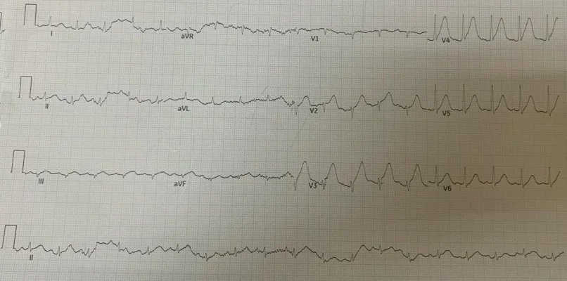
Intraining 2569 Q85 source image
ยังไม่ถูก
ACS treatment is not the best definitive answer when an ESRD patient has ECG changes consistent with hyperkalemia; hyperkalemia can mimic ischemia and must be treated immediately.
ยังไม่ถูก
These are appropriate emergency temporizing therapies for hyperkalemia, but the question asks definitive management; in ESRD, definitive potassium removal is hemodialysis.
ยังไม่ถูก
Nitroglycerin/morphine and serial ECGs do not correct life-threatening hyperkalemia or remove potassium/volume in ESRD.
ยังไม่ถูก
Immediate PCI is for STEMI/occlusive ACS; the ESRD context plus ECG concern points to hyperkalemia, whose definitive treatment is dialysis.
ถูกต้อง
Correct: Tintinalli Table 17-19 lists hemodialysis as the therapy that removes potassium. In ESRD with hyperkalemic ECG changes and volume symptoms, immediate hemodialysis is definitive.
In a dialysis patient, ECG changes compatible with hyperkalemia should be treated as hyperkalemia even before the potassium level returns. Tintinalli emphasizes immediate treatment when ECG changes are present.
Table 17-19 separates treatment into membrane stabilization, intracellular shift, and potassium removal. Hemodialysis is the definitive potassium-removal therapy, especially in ESRD where renal excretion is not available.
Table 17-19: Emergency therapy of hyperkalemia
Tintinalli Table 17-19 lists calcium, bicarbonate when acidotic, albuterol, insulin/glucose, potassium binders/diuretics, and hemodialysis. Hemodialysis is the option that removes potassium from the body within minutes.
The temporizing drugs buy time. Dialysis is the definitive answer when the patient has ESRD and dangerous ECG changes.
ESRD on HDECG changesorthopnea/SOBtemporizing drugshemodialysis removes K
1. Stabilize membrane
Calcium first if ECG changes
Calcium chloride or calcium gluconate acts within 1-3 minutes.
It protects the myocardium but does not remove potassium.
2. Shift K intracellularly
Insulin/glucose, albuterol, bicarbonate if acidotic
Insulin + glucose shifts potassium into cells; onset about 30 minutes.
Sodium bicarbonate is mainly for hyperkalemia with metabolic acidosis.
3. Remove K
Definitive in ESRD = hemodialysis
Table 17-19 lists hemodialysis: removes K+ with onset in minutes.
In ESRD, urinary potassium excretion is not reliable; dialysis also helps volume overload symptoms.
Exam split
B vs E in this item
Choice B is emergency temporizing therapy.
Because the stem asks definitive management, choose immediate hemodialysis.
Must remember
Hyperkalemic ECG in ESRD: calcium/insulin/glucose buys time; hemodialysis fixes the problem. If the question asks definitive management, answer dialysis.
Choice sorting
Choice
How to interpret
A. DAPT + heparin + angiography
ACS pathway; not the definitive treatment for ESRD hyperkalemic ECG changes.
B. Calcium + insulin/glucose + bicarbonate + kayexalate
Good temporizing hyperkalemia therapy, but not definitive potassium removal.
C. Nitrate/morphine + serial ECG
Does not treat dangerous potassium/volume physiology.
D. Immediate PCI
For STEMI/occlusive ACS; this stem is testing hyperkalemia in ESRD.
E. Immediate hemodialysis
Best answer: removes potassium and treats ESRD volume overload physiology.
Vitamin K treats warfarin/vitamin K deficiency patterns with prolonged PT/INR. This stem has INR 0.9, so vitamin K does not address the abnormality.
ยังไม่ถูก
DDAVP treats uremic platelet dysfunction, which usually presents with abnormal bleeding time and normal PT/aPTT. This stem highlights isolated aPTT prolongation, favoring heparin effect instead.
ยังไม่ถูก
Cryoprecipitate can improve uremic bleeding time but has slower benefit than DDAVP and does not specifically reverse isolated prolonged aPTT from heparin.
ยังไม่ถูก
FFP replaces coagulation factors and is not targeted when INR is normal and the likely abnormality is dialysis heparin effect.
ถูกต้อง
Correct: ESRD on hemodialysis plus bleeding with isolated prolonged aPTT suggests heparin effect. Tintinalli Table 90-2 lists protamine to reverse heparin dispensed during dialysis.
ซ่อนบทเรียน/เฉลยเปิดบทเรียน/เฉลยบทเรียนเดิมESRD bleeding: uremic platelet dysfunction vs heparin effect
Tintinalli Ch.90 p.575-576; Table 90-2 p.576
Answer: E. Protamine
This ESRD patient has upper GI bleeding with platelet count normal and INR normal, but aPTT is prolonged to 50 seconds. That pattern points away from pure uremic platelet dysfunction and toward heparin effect.
Tintinalli notes hemodialysis commonly uses IV heparin 1000-2000 units. Table 90-2 lists protamine 0.01 mg per unit of heparin; if the heparin dose is unknown, protamine 10-20 mg is usually sufficient to reverse the typical dialysis heparin dose.
Table 90-2: Control of vascular access hemorrhage and heparin reversal
Tintinalli Table 90-2 includes protamine dosing for dialysis heparin reversal: 0.01 mg per unit of heparin; if dose unknown, 10-20 mg reverses typical 1000-2000 units used at dialysis.
Source page from MCQ 2025 รวมไม่แยกหัวข้อ.pdf p.31 shows answer choices A, B, D, and E; choice C was blank on the recoverable source page. Source file: MCQ 2025 รวมไม่แยกหัวข้อ.pdf
Reference: Source: MCQ 2025 รวมไม่แยกหัวข้อ.pdf | p.31. Textbook: Tintinalli Ch.90 p.573 Table 90-1; p.575 Renal bone disease. Image: Wikimedia Commons Calciphylaxis.png by Niels Olson, CC BY-SA 3.0.
ซ่อนบทเรียน/เฉลยเปิดบทเรียน/เฉลยบทเรียนเดิมCalciphylaxis from ESRD renal bone disease
Tintinalli Ch.90 p.573 Table 90-1; p.575 Renal bone disease
Answer: A. Calciphylaxis
This ESRD patient missed hemodialysis and has severe painful necrotic leg ulcer with hyperphosphatemia (PO4 6.7) and marked secondary hyperparathyroidism (PTH 1000). That combination fits calciphylaxis / metastatic vascular calcification from renal bone disease.
Tintinalli explains that as GFR falls, phosphate excretion decreases, serum phosphate rises, and metastatic calcification can occur. Small-vessel calcification can cause skin and finger necrosis.
ESRD + high phosphate/PTH + painful necrotic ulcer = calciphylaxis
Renal bone disease can produce metastatic calcification in small vessels, causing ischemic skin necrosis. In this stem, the labs and lesion pattern make infection-only answers less likely.
ESRD on HDmissed dialysisPO4 6.7PTH 1000severe paincentral necrosis
Mechanism
Phosphate retention drives calcification risk
Low GFR -> decreased phosphate excretion -> serum phosphate rises.
High phosphate and secondary hyperparathyroidism promote calcium-phosphate deposition.
Skin finding
Small vessels get calcified
Metastatic calcification in small vessels can cause skin necrosis and severe pain.
Look for indurated, well-demarcated necrotic ulcer in ESRD patients.
Number check
Do not overread the Ca x PO4 cutoff
Tintinalli notes metastatic calcification risk when Ca x PO4 >70-80 and higher short-term mortality when >72.
This stem: 9.6 x 6.7 = about 64. It is below that cutoff, but PO4/PTH are abnormal and the lesion pattern still strongly supports calciphylaxis.
Treatment concept
Correct the mineral disorder
Tintinalli lists treatment with low-calcium dialysate and phosphate-binding gels.
Also manage pain, wound care, dialysis adherence, and urgent nephrology/wound/surgery input as clinically needed.
Must remember
Calciphylaxis is not just an ulcer. It is ischemic skin necrosis from small-vessel calcification in ESRD-mineral bone disease. Severe pain + necrotic indurated ulcer + high phosphate/PTH should make you choose calciphylaxis over routine cellulitis or necrotizing fasciitis when systemic infection signs are absent.
Treatment anchor from Tintinalli
Renal bone disease treatment in this frame includes low-calcium dialysate and phosphate-binding gels. The exam diagnosis is driven by the vascular calcification/skin necrosis pattern, not by antibiotics alone.
Choice sorting
Choice
How to interpret
A. Calciphylaxis
Best answer: ESRD mineral bone disease + high PO4/PTH + severe painful necrotic ischemic ulcer.
B. Necrotizing fasciitis
Needs a severe rapidly progressive soft tissue infection frame; the stem instead emphasizes mineral bone disease labs and stable vitals.
D. Pyoderma gangrenosum
Inflammatory ulcer diagnosis; does not explain ESRD phosphate/PTH-driven vascular calcification.
E. Ecthyma gangrenosum
Usually Pseudomonas/sepsis or immunocompromised infectious vasculitis; not the best fit for this stable ESRD renal bone disease pattern.
Q7. ชาย 60 ปี มี DM, HT, CKD4 มาด้วย active bleeding per gum, bleeding time 12, BUN 70, Cr 3+ ถาม management
This is uremic bleeding: CKD4 with BUN 70, active gum bleeding, and bleeding time 12. The hemostasis problem is primarily platelet dysfunction / platelet-vessel wall interaction, not depletion of clotting factors.
Tintinalli states that improvement in bleeding time can be seen with desmopressin 0.3 microgram/kg IV/SC, with benefit in about 1 hour.
Table 90-2: Bleeding diathesis in ESRD
Tintinalli Table 90-2 summarizes ESRD bleeding management options, including DDAVP for rapid temporary improvement of uremic platelet dysfunction.
Uremic bleeding: platelet problem, not factor problem
ESRD patients can bleed from platelet dysfunction even when platelet count and coagulation factors are not the main issue. Bleeding time is the exam signal here.
CKD/ESRDBUN highgum bleedingbleeding time prolongedDDAVP works fast
Mechanisms
Why ESRD patients bleed
Decreased platelet function.
Abnormal platelet-vessel wall interactions.
Altered von Willebrand factor, anemia, and uremic toxin effects including guanidinosuccinic acid-dependent nitric oxide production.
Clinical risk
Where bleeding matters
GI tract bleeding, subdural hematoma, subcapsular liver hematoma, and intraocular bleeding risk increase in ESRD.
Aspirin or warfarin use further increases major bleeding risk.
Test signal
Bleeding time points to platelet dysfunction
Tintinalli describes the skin bleeding test as the best predictor of clinically important hemostatic defects.
This stem gives bleeding time 12, making uremic platelet dysfunction the target.
Best option
DDAVP is the fast ED choice
Desmopressin 0.3 microgram/kg IV/SC.
Expected benefit: about 1 hour, fitting active mucosal bleeding in this question.
Must remember
Bleeding time prolonged in CKD/uremia = platelet dysfunction. Choose DDAVP for rapid temporary improvement. Do not reflexively choose FFP unless the stem shows factor deficiency/warfarin-type coagulopathy.
Treatment timing for uremic bleeding
Therapy
Dose from Tintinalli
Benefit timing
How to use in this stem
DDAVP / desmopressin
0.3 microgram/kg IV/SC
About 1 hour
Best answer here: active gum bleeding + prolonged bleeding time.
Cryoprecipitate
10 units over 30 minutes
About 4 hours
Alternative when DDAVP is unavailable/insufficient or broader hemostatic support is needed.
Conjugated estrogens
25 mg IV or 6 mg/kg/day
About 6 hours
Option for longer effect, not the fastest answer in this ED-style question.
Tranexamic acid
Listed as another option
Varies
Adjunct/selected cases; not the clearest single best answer here.
Choice sorting
Choice
How to interpret
1. FFP
Wrong target: factor replacement, not uremic platelet dysfunction.
2. DDAVP
Best answer: rapid improvement of uremic platelet dysfunction with mucosal bleeding.
Source page from MCQ 2025 รวมไม่แยกหัวข้อ.pdf p.45 currently shows only the stem; no recoverable answer choices were visible on that page snapshot yet. Source file: MCQ 2025 รวมไม่แยกหัวข้อ.pdf | Source stem only; added single recovered keyed diagnosis option.
This patient becomes drowsy/confused after dialysis with stable vital signs, no fever, and no focal neurologic deficit. That timing after hemodialysis points to dialysis disequilibrium syndrome.
Tintinalli describes dialysis disequilibrium as a syndrome occurring at the end of dialysis, characterized by nausea, vomiting, and hypertension, which can progress to seizure, coma, and death.
Tintinalli Ch.90 p.576
After dialysis + confusion = think osmotic brain swelling
The key mechanism is rapid solute removal from blood. Blood osmolality falls faster than brain osmolality, so water shifts into the brain and causes cerebral edema.
end of dialysisconfusionnausea/vomitinghypertensionseizure riskcerebral edema
When it happens
Timing around hemodialysis
Classically occurs at the end of dialysis or soon after dialysis.
Higher risk with first dialysis session or hypercatabolic states where solute clearance is large.
Mechanism
Osmolar imbalance
Rapid solute removal makes blood osmolality transiently lower than brain osmolality.
Water moves into the brain -> cerebral edema -> altered mental status/seizure.
Symptoms
Spectrum of severity
Early: nausea, vomiting, hypertension, headache/restlessness can occur.
Severe: confusion, seizure, coma, death.
This stem
Why this diagnosis fits
ESRD after dialysis with drowsiness/confusion.
No fever, stable vitals, and no focal neurologic deficit make infection/stroke less supported by this short stem.
Must remember
Treatment: stop dialysis and raise serum osmolality when clinically needed. Tintinalli lists 5 mL of 10% to 23% sodium chloride or mannitol 0.25 g/kg IV.
Prevention and treatment
Step
What to remember
Prevent
Limit solute clearance when initiating hemodialysis, especially first dialysis session/high solute burden.
Recognize
End-of-dialysis nausea/vomiting/hypertension or altered mental status can be dialysis disequilibrium.
Treat
Stop dialysis; give hypertonic saline 10%-23% 5 mL or mannitol 0.25 g/kg IV to increase serum osmolality if needed.
Q9. Infected CAPD + exit-site infection, pus from exit site, WBC 1200+ PMN predominance. ถามทำอย่างไร
Diagnosis: Gram stain, cell count, and culture of dialysate. PD-related peritonitis usually has >100 leukocytes/mm3 with >50% neutrophils.
Organisms:S. epidermidis is most common; also S. aureus, Streptococcus species, gram-negative bacteria, anaerobes, and fungi.
Treatment: rapid exchanges/lavage, heparin in dialysate, and intraperitoneal/dialysate antibiotics. Parenteral antibiotics are not used.
Exit-site infection alone: pain, erythema, swelling, discharge around exit site; common organisms are S. aureus and Pseudomonas aeruginosa; outpatient oral first-generation cephalosporin or ciprofloxacin may be used only when isolated.
Q10. หญิง 60 ปี AKI ถ่ายเหลว กิน Bactrim จากนั้นไข้ อาเจียน ปัสสาวะออกลดลง lab BUN 20 Cr 1.4 Una 20 Ucr 10 Na 140 UA WBC 3-5 RBC 2-3 WBC cast 20-30. ถาม pathophysiology of AKI
This patient develops AKI after Bactrim / TMP-SMX with fever and urinary sediment showing WBC casts. That points to drug-induced acute interstitial nephritis rather than prerenal AKI or ATN.
Tintinalli notes that fever, arthralgia, and rash are common with acute interstitial nephritis, and Table 88-6 lists AIN urine sediment as white cells, eosinophils, casts, and red cells.
Table 88-4: Intrinsic acute kidney injury due to drugs
Tintinalli Table 88-4 includes sulfonamides among drugs associated with interstitial nephritis; Bactrim/TMP-SMX contains a sulfonamide component.
Tintinalli Table 88-6 differentiates AKI categories by urine sediment. Acute interstitial nephritis shows white cells, eosinophils, casts, and red cells.
Bactrim + AKI + WBC casts = AIN until proven otherwise
The board hinge is not just AKI after diarrhea. The urinary sediment changes the diagnosis from simple prerenal azotemia to intrinsic renal inflammation.
Bactrim/TMP-SMXfeverAKIpyuriaWBC castsintrinsic AKI
Drug trigger
Why Bactrim matters
TMP-SMX is listed by Tintinalli among medications associated with AKI risk.
The sulfonamide component fits the interstitial nephritis drug category in Table 88-4.
Urine clue
WBC casts localize inflammation to kidney
WBC casts mean white cells formed casts inside renal tubules, supporting renal parenchymal inflammation.
Table 88-6: AIN sediment can show white cells, eosinophils, casts, red cells.
Why not prerenal
Diarrhea alone is not enough
Prerenal AKI can follow GI fluid loss, but sediment is usually bland or hyaline casts.
A medication exposure plus inflammatory sediment makes AIN the better answer.
ซ่อนบทเรียน/เฉลยเปิดบทเรียน/เฉลยบทเรียนเดิมACE inhibitor + NSAID: loss of renal autoregulation
Tintinalli Ch.88 p.564; Table 88-4 p.566
Answer: C. Decreased GFR + renal blood flow
Enalapril/ACE inhibitor inhibits angiotensin II, causing preferential efferent arteriolar vasodilation in the glomerulus. This can lower intraglomerular pressure and decrease GFR, with a typical creatinine rise of about 10-20%.
NSAIDs can cause AKI because they decrease both GFR and renal blood flow. The risk is higher in older age, CKD, CHF, diabetes, volume depletion, and concomitant diuretics or ACE inhibitors.
Table 88-4: Intrinsic acute kidney injury due to drugs
Tintinalli Table 88-4 places NSAIDs and ACE inhibitors in drug-related AKI mechanisms; NSAIDs can also cause interstitial nephritis with chronic use.
Diagnosis: Gram stain, cell count, and culture of dialysate. PD-related peritonitis usually has >100 leukocytes/mm3 with >50% neutrophils.
Organisms:S. epidermidis is most common; also S. aureus, Streptococcus species, gram-negative bacteria, anaerobes, and fungi.
Treatment: rapid exchanges/lavage, heparin in dialysate, and intraperitoneal/dialysate antibiotics. Parenteral antibiotics are not used.
Exit-site infection alone: pain, erythema, swelling, discharge around exit site; common organisms are S. aureus and Pseudomonas aeruginosa; outpatient oral first-generation cephalosporin or ciprofloxacin may be used only when isolated.
This patient develops AKI after Bactrim / TMP-SMX with fever and urinary sediment showing WBC casts. That points to drug-induced acute interstitial nephritis rather than prerenal AKI or ATN.
Tintinalli notes that fever, arthralgia, and rash are common with acute interstitial nephritis, and Table 88-6 lists AIN urine sediment as white cells, eosinophils, casts, and red cells.
Table 88-4: Intrinsic acute kidney injury due to drugs
Tintinalli Table 88-4 includes sulfonamides among drugs associated with interstitial nephritis; Bactrim/TMP-SMX contains a sulfonamide component.
Tintinalli Table 88-6 differentiates AKI categories by urine sediment. Acute interstitial nephritis shows white cells, eosinophils, casts, and red cells.
Bactrim + AKI + WBC casts = AIN until proven otherwise
The board hinge is not just AKI after diarrhea. The urinary sediment changes the diagnosis from simple prerenal azotemia to intrinsic renal inflammation.
Bactrim/TMP-SMXfeverAKIpyuriaWBC castsintrinsic AKI
Drug trigger
Why Bactrim matters
TMP-SMX is listed by Tintinalli among medications associated with AKI risk.
The sulfonamide component fits the interstitial nephritis drug category in Table 88-4.
Urine clue
WBC casts localize inflammation to kidney
WBC casts mean white cells formed casts inside renal tubules, supporting renal parenchymal inflammation.
Table 88-6: AIN sediment can show white cells, eosinophils, casts, red cells.
Why not prerenal
Diarrhea alone is not enough
Prerenal AKI can follow GI fluid loss, but sediment is usually bland or hyaline casts.
A medication exposure plus inflammatory sediment makes AIN the better answer.
GN: red cells and red cell casts, often more hematuria/proteinuria.
Must remember
WBC cast after a culprit drug = think AIN. Diarrhea may tempt prerenal AKI, but the urine sediment is doing the heavy lifting in this question.
Choice sorting
Choice
How to interpret
A. ATN
Would expect tubular injury/granular cast pattern; WBC casts after Bactrim point elsewhere.
B. AIN
Best answer: drug exposure + fever + pyuria/WBC casts.
C. Prerenal azotemia
Diarrhea could cause volume depletion, but prerenal urine sediment should be bland/hyaline, not WBC casts.
D. Acute glomerulonephritis
Would emphasize RBC casts/dysmorphic RBC/proteinuria more than WBC casts.
E. Acute renal vasculitis
Less supported than drug-induced AIN in this stem.
Q14. ESRD with DM and volume overload presents with bilateral lung crepitation. ECG shows tall peaked T waves and a wide QRS complex. What is the most appropriate management?
ยังไม่ถูก
Bicarbonate ใช้เป็น adjunct เมื่อมี metabolic acidosis และออกฤทธิ์ shift K เข้า cell แต่ในคนที่มี peaked T waves + wide QRS ต้องให้ calcium ก่อนเพื่อ stabilize cardiac membrane.
ถูกต้อง
ถูก: hyperkalemia ที่มี ECG change เช่น tall peaked T waves และ wide QRS ต้องให้ IV calcium ทันทีเพื่อ stabilize myocardium; ในตัวเลือกนี้ 10% calcium gluconate ตรงที่สุด.
ESRD patient with tall peaked T waves and wide QRS should be treated as dangerous hyperkalemia with myocardial instability.
Tintinalli states that if ECG changes are present, emergency treatment of hyperkalemia should start immediately; calcium is used for membrane stabilization.
Table 17-19: Emergency therapy of hyperkalemia
Calcium gluconate/chloride stabilizes the cardiac membrane within 1-3 minutes; insulin/glucose, albuterol, bicarbonate shift potassium; dialysis removes potassium.
Source page p.10 shows the stem fragment clearly, but no reliable answer choices were recoverable for this item in the current source block. Source file: MCQ-202024.pdf.pdf | Source stem fragment only; added single recovered keyed management option.
This CKD stage 5 patient has fluid overload/pulmonary edema symptoms and severe metabolic derangement. The answer is emergency hemodialysis.
Tintinalli Table 88-7 lists emergent dialysis/renal replacement therapy indications including refractory fluid overload with persistent hypoxia or lack of response to conservative measures and severe metabolic acidosis with AKI. In ESRD, Tintinalli Ch.90 p.574 notes hemodialysis is the ultimate treatment for fluid overload.
Table 88-7: Indications for emergent dialysis or renal replacement therapy
Use this as the dialysis-indication anchor: uncontrolled hyperkalemia, refractory fluid overload, uremic pericarditis/encephalopathy, severe sodium disorders, severe metabolic acidosis, dialyzable poisoning, uremic bleeding, and excessive BUN/Cr burden.
CKD stage 5 + pulmonary edema + severe acidosis = dialysis now
The stem gives two independent pushes toward renal replacement therapy: volume problem and acid-base problem.
CKD stage 5PNDbilateral crepitationHCO3 4emergency HD
Volume indication
PND and bilateral crepitation suggest pulmonary edema/fluid overload.
If severe or not rapidly controlled conservatively, Table 88-7 supports emergent RRT.
Acid-base indication
HCO3 of 4 mEq/L is profound metabolic acidosis.
Severe metabolic acidosis in kidney failure is a dialysis trigger, especially when bicarbonate/fluids are unsafe.
Why HD over slower options
CKD stage 5 not yet on RRT has limited renal reserve.
Hemodialysis removes volume and corrects metabolic derangements faster than conservative measures.
Must remember
For emergency dialysis decisions, think AEIOU style: Acidosis, Electrolytes, Intoxication, Overload, Uremia. This case has Overload + Acidosis.
Q16. หญิง 60 ปี เคยมี diarrhea ได้รับ Bactrim oral มา few weeks วันนี้มาด้วย lethargy, BT 37.5, PR 110, BP 90/40. Lab: BUN 20, Cr 1.4, Na 131, K 4, HCO3 20. UA: RBC 3-5 and WBC casts 5-10. What is the most likely diagnosis?
This patient develops AKI after Bactrim / TMP-SMX with fever and urinary sediment showing WBC casts. That points to drug-induced acute interstitial nephritis rather than prerenal AKI or ATN.
Tintinalli notes that fever, arthralgia, and rash are common with acute interstitial nephritis, and Table 88-6 lists AIN urine sediment as white cells, eosinophils, casts, and red cells.
Table 88-4: Intrinsic acute kidney injury due to drugs
Tintinalli Table 88-4 includes sulfonamides among drugs associated with interstitial nephritis; Bactrim/TMP-SMX contains a sulfonamide component.
Tintinalli Table 88-6 differentiates AKI categories by urine sediment. Acute interstitial nephritis shows white cells, eosinophils, casts, and red cells.
Bactrim + AKI + WBC casts = AIN until proven otherwise
The board hinge is not just AKI after diarrhea. The urinary sediment changes the diagnosis from simple prerenal azotemia to intrinsic renal inflammation.
Bactrim/TMP-SMXfeverAKIpyuriaWBC castsintrinsic AKI
Drug trigger
Why Bactrim matters
TMP-SMX is listed by Tintinalli among medications associated with AKI risk.
The sulfonamide component fits the interstitial nephritis drug category in Table 88-4.
Urine clue
WBC casts localize inflammation to kidney
WBC casts mean white cells formed casts inside renal tubules, supporting renal parenchymal inflammation.
Table 88-6: AIN sediment can show white cells, eosinophils, casts, red cells.
Why not prerenal
Diarrhea alone is not enough
Prerenal AKI can follow GI fluid loss, but sediment is usually bland or hyaline casts.
A medication exposure plus inflammatory sediment makes AIN the better answer.
GN: red cells and red cell casts, often more hematuria/proteinuria.
Must remember
WBC cast after a culprit drug = think AIN. Diarrhea may tempt prerenal AKI, but the urine sediment is doing the heavy lifting in this question.
Choice sorting
Choice
How to interpret
A. ATN
Would expect tubular injury/granular cast pattern; WBC casts after Bactrim point elsewhere.
B. AIN
Best answer: drug exposure + fever + pyuria/WBC casts.
C. Prerenal azotemia
Diarrhea could cause volume depletion, but prerenal urine sediment should be bland/hyaline, not WBC casts.
D. Acute glomerulonephritis
Would emphasize RBC casts/dysmorphic RBC/proteinuria more than WBC casts.
E. Acute renal vasculitis
Less supported than drug-induced AIN in this stem.
Q17. ชาย 70 ปี มี HT ใช้ enalapril, 2 วันก่อนมี right ankle pain หลัง trauma และรับประทาน ibuprofen 400 mg every 4-6 hours. วันนี้พบ BUN และ creatinine สูงขึ้น. What is the pathophysiology of AKI in this patient?
ยังไม่ถูก
AIN จาก NSAID มีได้ โดยเฉพาะ chronic use แต่ข้อนี้กิน ibuprofen แค่ 2 วันร่วมกับ enalapril และถาม pathophysiology ของ AKI จึงเข้ากับ hemodynamic ↓GFR/↓renal blood flow มากกว่า.
Also found in: Source: KUB 2566.pdf | p.13-14 Source file: Gi kub uro.pdf
Reference: Source: Gi kub uro.pdf | p.25-26; also KUB 2566.pdf | p.13-14. Teaching copied from A14 Old Exam Source 2024 Q187-ACEINSAIDRenalMechanism. Textbook: Tintinalli Ch.88 Acute Kidney Injury p.564; Table 88-4 p.566.
ซ่อนบทเรียน/เฉลยเปิดบทเรียน/เฉลยบทเรียนเดิมACE inhibitor + NSAID: loss of renal autoregulation
Tintinalli Ch.88 p.564; Table 88-4 p.566
Answer: C. Decreased GFR + renal blood flow
Enalapril/ACE inhibitor inhibits angiotensin II, causing preferential efferent arteriolar vasodilation in the glomerulus. This can lower intraglomerular pressure and decrease GFR, with a typical creatinine rise of about 10-20%.
NSAIDs can cause AKI because they decrease both GFR and renal blood flow. The risk is higher in older age, CKD, CHF, diabetes, volume depletion, and concomitant diuretics or ACE inhibitors.
Table 88-4: Intrinsic acute kidney injury due to drugs
Tintinalli Table 88-4 places NSAIDs and ACE inhibitors in drug-related AKI mechanisms; NSAIDs can also cause interstitial nephritis with chronic use.
The kidney uses afferent and efferent arteriolar tone to protect glomerular filtration. These two drugs remove both sides of that compensation.
enalaprilNSAIDolder/CKD/volume depletion riskGFR down
ACE inhibitor side
Blocks angiotensin II effect.
Preferential efferent arteriole dilation.
Lower glomerular capillary pressure -> GFR falls.
NSAID side
Blocks prostaglandin production.
Reduces kidney perfusion reserve.
Tintinalli: NSAIDs decrease GFR and renal blood flow.
Why combination is risky
Risk rises with volume depletion, CKD, CHF, diabetes, older age.
Concomitant diuretics/ACEI make NSAID renal adverse effects more likely.
Must remember
ACEI/ARB + NSAID + volume depletion/diuretic/CKD is a renal perfusion trap. In exam language, enalapril + NSAID points to decreased GFR + decreased renal blood flow.
Choice sorting
Choice
How to interpret
A. [source option incomplete]
Not the recovered mechanism. Need efferent dilation + NSAID renal blood flow/GFR reduction.
B. [source option incomplete]
Not the recovered mechanism from the source option set.
C. ลด GFR + renal blood flow
Best answer: matches Tintinalli text for ACE inhibitor and NSAID effects.
D/E. [source option incomplete]
Not supported better than C from the recovered stem/options.
Q18. ชาย 70 ปี มี BPH มาด้วย nausea and vomiting 1 day, no pitting edema. Lab: Na 145, BUN 25, Cr 2.8, urine Na 45, urine Cr 10, urine osmolality 345. What is the most likely cause of AKI?
ยังไม่ถูก
ไม่ใช่ prerenal: จากโจทย์ FENa = (urine Na × serum Cr)/(serum Na × urine Cr) ×100 = (45×2.8)/(145×10)×100 ≈ 8.7% ซึ่งสูง และ urine Na 45 ไม่ใช่ sodium-retaining prerenal pattern.
ถูกต้อง
ถูก: ผู้สูงอายุมี BPH ซึ่งเป็นสาเหตุพบบ่อยของ postrenal AKI; Tintinalli ระบุว่า postrenal AKI ใน elderly พบได้ และ most common cause คือ prostatic hypertrophy.
ยังไม่ถูก
Interstitial nephritis มักสัมพันธ์กับ drug exposure/rash/fever/pyuria/WBC casts; ข้อนี้ไม่มีข้อมูลยาแบบ AIN และ BPH ชี้ obstruction มากกว่า.
ซ่อนบทเรียน/เฉลยเปิดบทเรียน/เฉลยบทเรียนเดิมPostrenal AKI from BPH: urine indices are not prerenal
Tintinalli Ch.88 p.563-568; Table 88-6 p.567
Answer: B. Postrenal obstruction
Postrenal AKI is obstruction of urine outflow. Tintinalli notes that postrenal AKI in elderly patients can be common, and the most common cause is prostatic hypertrophy.
This patient is an elderly man with BPH and AKI, so obstruction is the best unifying cause. The urine indices are not prerenal.
Table 88-6: Laboratory findings for causes of AKI
Use Table 88-6 to compare prerenal, ATN, interstitial nephritis, glomerulonephritis, and postrenal patterns. This case has high urine sodium/FENa, which argues against prerenal azotemia.
BPH + AKI: calculate first, then localize obstruction
The labs do not look prerenal. The clinical anchor is bladder outlet obstruction from BPH.
BPHCr 2.8urine Na 45FENa ~8.7%postrenal AKI
FENa calculation
Formula: (Urine Na × Serum Cr) / (Serum Na × Urine Cr) × 100
= (45 × 2.8) / (145 × 10) × 100
= 126 / 1450 × 100 ≈ 8.7%
Why not prerenal
Prerenal AKI usually conserves sodium: low urine Na and low FENa pattern.
Here urine Na is 45 and FENa is high, so simple volume depletion from vomiting is not the best answer.
Why postrenal
Older male + BPH = bladder outlet obstruction risk.
Postrenal AKI increases tubular pressure and lowers filtration; timely relief of obstruction can improve renal function.
Must remember
Do not let vomiting alone force prerenal. In this stem, the urine indices are not prerenal and BPH is the anatomic diagnosis: think postrenal obstruction.
Choice sorting
Choice
How to interpret
A. Prerenal azotemia
Vomiting is present, but urine Na 45 and FENa ~8.7% argue against classic prerenal AKI.
B. Postrenal obstruction
Best answer: elderly male with BPH and AKI.
C. Interstitial nephritis
Needs drug/rash/fever/pyuria/WBC casts pattern; not provided here.
D. ATN
Can have high FENa, but the stem gives BPH obstruction as the stronger localizing cause.
E. Acute glomerulonephritis
Would expect nephritic urine findings such as RBC casts/proteinuria/hematuria emphasis.
Q19. ผู้ป่วย ESRD ระหว่างทำ first hemodialysis developed nausea, vomiting, and seizure after ultrafiltration 2 L. Diazepam was given. What is the most appropriate management?
ยังไม่ถูก
3% NaCl/hypertonic saline can increase serum osmolality in severe dialysis disequilibrium, but in this option set the best treatment choice after seizure is mannitol; Tintinalli lists mannitol 0.25 g/kg IV as treatment.
Reference: Source: Gi kub uro.pdf | p.162-163. Teaching copied/adapted from A14 Q58. Textbook: Tintinalli Ch.90 p.576 Dialysis disequilibrium.
ซ่อนบทเรียน/เฉลยเปิดบทเรียน/เฉลยบทเรียนเดิมDialysis disequilibrium syndrome: stop dialysis and treat cerebral edema
Tintinalli Ch.90 p.576 Dialysis disequilibrium
Answer: B. Mannitol
Dialysis disequilibrium occurs at the end of or during dialysis after rapid solute clearance, especially during the first dialysis session or hypercatabolic states.
Symptoms include nausea, vomiting, hypertension, and can progress to seizure, coma, and death. The mechanism is cerebral edema from an osmolar imbalance between brain and blood.
First HD + nausea/vomiting + seizure = dialysis disequilibrium
Treat the brain edema/osmolar problem, not just the convulsion.
first hemodialysisrapid solute shiftcerebral edemaseizuremannitol
What happened
Large solute clearance makes blood osmolality fall faster than brain osmolality.
Water moves into brain -> cerebral edema.
Treatment from Tintinalli
Stop dialysis.
Give 5 mL of 10%-23% sodium chloride or mannitol 0.25 g/kg IV to increase serum osmolality.
Prevention
Limit solute clearance when initiating hemodialysis.
Go slower/less aggressive for first dialysis or high-risk patients.
Must remember
If seizure occurs during/after first hemodialysis, think dialysis disequilibrium. Benzodiazepine can stop the seizure briefly, but the board treatment target is cerebral edema/osmolality: stop dialysis + mannitol or hypertonic saline.
Choice sorting
Choice
How to interpret
A. 3% NaCl
Hypertonic saline principle is relevant, but the listed best answer in this option set is mannitol.
B. Mannitol
Best answer: osmotic therapy for dialysis disequilibrium cerebral edema.
C. 0.9% NaCl
Does not correct the osmolar brain-blood problem and may worsen volume overload.
D. Fosphenytoin
Treats seizure tendency, but misses the dialysis disequilibrium mechanism after diazepam was already given.
Q20. Female 28 years old with renal transplantation 5 years ago presents with fatigue for 3 days. V/S stable, no signs of infection, and surgical scar is well healed. Current labs compared with 2 weeks ago show BUN 20 to 34 and creatinine 2.0 to 2.8; electrolytes and immunosuppressant level are normal. What is the most appropriate next management?
Biopsy may be needed during admission if rejection remains suspected, but it is not the first ED next step in a stable patient; image the graft first with ultrasound/Doppler to exclude obstruction/vascular causes and coordinate with transplant team.
Answer: D. Biopsy of the donor kidney / renal allograft
In renal transplant patients, the serum creatinine level is the most valuable prognostic marker of graft function and should be checked when renal failure or infection is suspected.
This patient has a clear creatinine rise from 2.0 to 2.8 without fever, wound findings, electrolyte problem, or abnormal immunosuppressant level. That makes graft dysfunction/rejection a key concern.
Renal transplant anatomy / allograft location
Renal allografts are commonly placed in the pelvis with ureteral anastomosis to the bladder; graft dysfunction can present with rising creatinine even when symptoms are mild.
Renal rejection/graft dysfunction may present with worsening renal function.
Table 297-10: biopsy needed during admission.
Why not empiric escalation
Steroids/increased immunosuppression can be harmful if infection or another graft process is present.
Medication changes should be made with the transplant team.
Must remember
A stable renal transplant patient with unexplained rising creatinine needs transplant-team evaluation and often allograft biopsy. Do not just increase immunosuppression or give steroids without diagnosis.
Choice sorting
Choice
How to interpret
A. High-dose corticosteroid
Potential rejection treatment, but not before confirmation/transplant-team plan in this stable case.
B. Doppler ultrasound of renal artery
Useful for vascular complications, but not the best answer for unexplained graft dysfunction in this option set.
C. Septic work-up + empiric IV antibiotics
Transplant patients can hide infection, but this stem gives no infectious syndrome.
D. Biopsy of donor kidney
Best answer: confirms rejection/graft pathology causing rising creatinine.
E. Increase immunosuppressant dose
Do not empirically increase from ED without diagnosis; coordinate with transplant team.
Q21. ชาย 40 ปี มาด้วยซึม GCS 7. Lab: Na 112, urine osmole 30, urine sodium 7, serum osmole 265. Which of the following is the most likely diagnosis?
ยังไม่ถูก
SIADH ไม่ใช่คำตอบของข้อนี้.
ยังไม่ถูก
Cirrhosis ไม่ใช่คำตอบของข้อนี้.
ยังไม่ถูก
Over diuresis ไม่ใช่คำตอบของข้อนี้.
ยังไม่ถูก
Cerebral salt wasting ควรมี renal sodium loss และปัสสาวะไม่ dilute แบบนี้; urine osmolality 30 และ urine sodium 7 ไม่เข้า CSW.
ดังนั้นคำตอบที่เหมาะสุดจากตัวเลือกคือ E. Primary polydipsia; ไม่ใช่ cerebral salt wasting เพราะ CSW ควรเป็น renal salt loss/volume depletion และปัสสาวะไม่ควร dilute ต่ำระดับ Uosm 30.
Table 17-4: Hyponatremia according to volume status
Tintinalli Table 17-4 is a volume-status framework. Use it with urine osmolality/urine sodium physiology; in this stem Uosm 30 strongly favors water excess/primary polydipsia over SIADH or cerebral salt wasting.
Adjunct visual from Time of Care: after confirming hypotonic hyponatremia, very low urine osmolality points to primary polydipsia/low solute intake pattern rather than SIADH.
Uosm <100 in hypotonic hyponatremia means ADH is appropriately suppressed. In this option set, that points to primary polydipsia/water intoxication. SIADH and cerebral salt wasting usually have inappropriately concentrated urine.
Q22. หญิงวัยรุ่น มาด้วยอ่อนแรง 4 วัน ตรวจร่างกายเป็น proximal muscle weakness. Lab: Na 140, K 2.8, Cl 101, HCO3 16, urine K 8. ถาม diagnosis
ถูกต้อง
ถูก: hypokalemia + metabolic acidosis with low urine K suggests extrarenal potassium/bicarbonate loss; Tintinalli Table 15-2 lists acute diarrhea with HCO3- and K+ losses as a normal-anion-gap metabolic acidosis cause.
Hypercalcemia is severe when total Ca >14 mg/dL. Symptoms can involve every organ system; neurologic findings include weakness, lethargy, confusion, stupor, or coma.
Tintinalli states that symptomatic patients or asymptomatic patients with Ca >14 mg/dL should receive treatment starting with volume repletion.
Initial ED treatment is 0.9% normal saline 500-1000 mL/h for 2-4 hours as tolerated, then continued hydration to restore urine output. In this option set, that makes A. NSS the best next step.
Table 17-27: Causes of hypercalcemia
Tintinalli Table 17-27 lists major etiologies; malignancy and hyperparathyroidism account for most clinically important cases.
Ca >14 + symptoms = treat now. Start with isotonic saline. Calcitonin and bisphosphonate can be added depending on severity/cause, but the first move in this answer set is volume expansion with NSS.
Q24. คนไข้เหนื่อยเพลีย ขี้แตก lab normal gap metabolic acidosis ถามว่าเกิดจากอะไร
ยังไม่ถูก
Proximal RTA ไม่ใช่คำตอบของข้อนี้.
ยังไม่ถูก
RTA type IV ไม่ใช่คำตอบของข้อนี้.
ถูกต้อง
ถูก: โจทย์มีขี้แตก + normal-anion-gap metabolic acidosis จึงเข้าได้กับ GI bicarbonate loss.
Source file: Gi uro kub 2.pdf. Source wording verified from p.17-18 image.
Reference: Source: Gi uro kub 2.pdf | p.17-18 | Source image checked: includes fatigue and diarrhea context. Textbook: Tintinalli Ch.15 p.74-76; Table 15-2 p.76.
GI loss = diarrhea/low urinary K conservation pattern. RTA = metabolic acidosis with renal electrolyte wasting/inappropriate urinary losses.
Q26. Renal transplant recipient for 10 years on cyclophosphamide presents with fever, loin pain, graft tenderness, and normal urinalysis. What is the most likely diagnosis?
Renal transplant patient with fever + graft tenderness
Transplant patients have lifelong immunosuppression and commonly present to the ED with infection. Tintinalli notes infection is the most common acute disorder prompting ED visits in transplant recipients.
For renal transplant patients, evaluate BUN/creatinine, urinalysis, cultures, and graft-related complications. A normal urinalysis lowers support for straightforward allograft pyelonephritis, but fever plus graft/loin tenderness still raises concern for transplant-related graft infection or graft complication.
This option set makes B. Graft infection the best answer.
High infection risk; fever may be blunted or presentations atypical.
Fever + loin/graft tenderness
Localizes concern to graft/allograft region.
Normal urinalysis
Makes simple UTI/allograft pyelonephritis less clean, but does not remove graft infection/complication concern.
GVHD option
Graft-versus-host disease is mainly a hematopoietic stem cell transplant frame, not typical renal transplant wording.
Must remember
In renal transplant recipients, fever + graft pain/tenderness is never casual. Work up infection and graft dysfunction early, and coordinate with the transplant team.
This patient becomes drowsy after dialysis and has bilateral papilledema without focal weakness. That pattern fits cerebral edema/raised intracranial pressure from dialysis disequilibrium syndrome.
Tintinalli describes dialysis disequilibrium as a syndrome occurring at the end of dialysis, characterized by nausea, vomiting, and hypertension, which can progress to seizure, coma, and death.
Tintinalli Ch.90 p.576
After dialysis + drowsiness/papilledema = osmotic brain swelling
The key mechanism is rapid solute removal from blood. Blood osmolality falls faster than brain osmolality, so water shifts into the brain and causes cerebral edema.
end of dialysisconfusionnausea/vomitinghypertensionseizure riskcerebral edema
When it happens
Timing around hemodialysis
Classically occurs at the end of dialysis or soon after dialysis.
Higher risk with first dialysis session or hypercatabolic states where solute clearance is large.
Mechanism
Osmolar imbalance
Rapid solute removal makes blood osmolality transiently lower than brain osmolality.
Water moves into the brain -> cerebral edema -> altered mental status/seizure.
Symptoms
Spectrum of severity
Early: nausea, vomiting, hypertension, headache/restlessness can occur.
Severe: confusion, seizure, coma, death.
This stem
Why this diagnosis fits
ESRD after dialysis with drowsiness/altered mental status.
No focal weakness makes focal stroke/hemorrhage less supported by this short stem.
Must remember
Treatment: stop dialysis and raise serum osmolality when clinically needed. Tintinalli lists 5 mL of 10% to 23% sodium chloride or mannitol 0.25 g/kg IV.
Prevention and treatment
Step
What to remember
Prevent
Limit solute clearance when initiating hemodialysis, especially first dialysis session/high solute burden.
Recognize
End-of-dialysis nausea/vomiting/hypertension or altered mental status can be dialysis disequilibrium.
Treat
Stop dialysis; give hypertonic saline 10%-23% 5 mL or mannitol 0.25 g/kg IV to increase serum osmolality if needed.
Q28. Risk factor for contrast-induced nephropathy?
Pheochromocytoma ไม่ใช่ classic risk factor สำหรับ contrast-associated AKI ในบริบทนี้.
Source page from AKI test.pdf p.2 currently shows 3 recoverable choices. Source file: AKI test.pdf
Reference: Source: AKI test.pdf | p.2. Textbook: Tintinalli Ch.88 p.564, p.566. Additional references: ACR-NKF consensus on iodinated contrast in kidney disease; Canadian Association of Radiologists CA-AKI guidance; Merck Manual Professional.
Answer: A. DM — but remember modern guideline nuance
Tintinalli Ch.88 defines contrast-induced nephropathy as a creatinine increase of 25% from baseline or an absolute increase of 0.5 mg/dL within 48-72 hours after contrast infusion.
Tintinalli’s AKI risk/cause table includes diabetes among systemic disease risks and lists iodinated contrast/radiocontrast agents among causes of intrinsic AKI.
For this old-exam option set, DM is the best answer. In current practice, the strongest risk signal is usually pre-existing severe CKD/eGFR ต่ำ or active AKI, with diabetes increasing concern especially when kidney function is already impaired.
Contrast-associated AKI: DM is the exam answer, CKD is the real-world anchor
Use the old exam choice set, but do not overstate diabetes as stronger than baseline kidney function.
DM = best listed choiceCKD/eGFR low = strongest riskAKI = high risk48-72 h creatinine risehydrate selected high-risk patients
Old-exam answer
Among DM, HT, and pheochromocytoma, choose DM.
DM is repeatedly listed as an associated risk factor in traditional CIN teaching.
Tintinalli definition
Creatinine rises 25% from baseline or 0.5 mg/dL absolute.
Timing: usually 48-72 hours after contrast.
Guideline nuance
ACR-NKF and radiology guidance emphasize eGFR/CKD or active AKI as the major decision point.
DM alone is less important than DM with CKD, dehydration, CHF, sepsis, nephrotoxins, or large contrast load.
ACR-NKF consensus; Canadian Association of Radiologists guidance; Merck Manual Professional
Other references
ACR-NKF consensus: risk from modern IV iodinated contrast is lower than historically feared; prophylaxis/decision-making mainly centers on reduced kidney function or active AKI.
Canadian Association of Radiologists guidance: diabetes, CHF, hypovolemia, nephrotoxic agents, and other comorbidities are associated with CA-AKI, but kidney function stratification drives management.
Merck Manual Professional: lists diabetes mellitus, especially with associated CKD, among risk factors for contrast-related kidney injury.
Choice sorting
Choice
How to interpret
A. DM
Best answer in this option set; associated with contrast-associated AKI risk, especially when CKD/eGFR reduction coexists.
B. HT
Can contribute to chronic kidney disease/vascular disease but is not the best direct answer here.
C. Pheochromocytoma
Not a standard contrast nephropathy risk factor.
Lower Urinary Tract / UTI / Retention
Q1. A 70-year-old male with a Foley catheter in place for chronic urinary retention presents with an inability to deflate the balloon. Initial attempts to deflate the balloon by reinserting the syringe and gentle aspiration have failed. What is the most appropriate next step in management?
Nondeflation of Foley retention balloon: stepwise approach
Nondeflation can occur from a faulty valve mechanism or crystallization of balloon fluid, trapping the Foley catheter.
In this question, reinserting the syringe and gentle aspiration already failed, so the next move is to open the balloon inflation channel by cutting the catheter above the Y connection / cutting off the plastic valve below its head.
Foley balloon will not deflate: do the simple steps before urology rescue
The goal is to regain access to the balloon inflation channel, then drain or dissolve the balloon before invasive rupture/cystoscopy.
failed aspirationcut valve/Y connectionguidewire22G cathetermineral oilurology if failed
1. Confirm simple failure
Reconnect syringe to balloon port.
Try gentle aspiration.
If this fails, do not pull forcefully.
2. Cut the valve / Y connection
Cut off the plastic cylindrical valve just below its head or cut above the Y connection depending on catheter design.
This opens access to the balloon inflation channel.
3. Guidewire into channel
Introduce a flexible guidewire into the balloon inflation channel.
The wire may dilate/clear the channel and allow balloon drainage.
4. 22G catheter over wire
If guidewire alone fails, pass a 22-gauge central venous catheter over the wire.
When its tip reaches the balloon, remove the wire and let the balloon drain.
5. Mineral oil, then rescue
If still unsuccessful, instill 10 mL mineral oil and wait 15 minutes.
If simple methods fail: urology for cystoscopy/complex management or US-guided percutaneous balloon rupture with urology/IR input.
Part of the method, but usually after cutting/opening the valve/channel first.
D. Emergency cystostomy
Too invasive as first next step; reserve urology/complex intervention for failed simple methods.
E. IV mannitol
Unrelated to Foley balloon failure.
Q2. A 70-year-old male with a history of benign prostatic hyperplasia (BPH) presents with dysuria, frequency, and fever. PE: Temp 38, PR 100/min, RR 20/min, BP 100/60 mmHg, CVA tenderness left frank. Urinalysis reveals significant bacteriuria and a positive leukocyte esterase test. What is the most appropriate next step in management?
ยังไม่ถูก
ไม่ใช่ next step: acute infection/pyelonephritis with obstructive risk ต้องรักษา infection และ drainage ก่อน ไม่ใช่ prostate biopsy.
ยังไม่ถูก
ไม่ใช่การจัดการที่ครอบคลุม complicated UTI/pyelonephritis with obstruction risk.
Complicated UTI / acute pyelonephritis in older man with BPH
This patient has male sex + advanced age + BPH/obstructive risk, which Tintinalli lists as risk factors for complicated UTI.
Fever with flank pain/CVA tenderness supports acute pyelonephritis, not simple lower UTI. Missed pyelonephritis can progress to sepsis.
For inpatient management of pyelonephritis/complicated UTI, Tintinalli lists IV antibiotic options in Table 91-6. If obstruction/retention is part of the problem, catheter drainage is part of source control.
Table 91-6: Empiric initial treatment for inpatient pyelonephritis / complicated UTI
Tintinalli Ch.91 p.583. IV options include ceftriaxone, cefotaxime, ciprofloxacin, aminoglycoside-based regimens, piperacillin-tazobactam, cefepime, ertapenem, imipenem, and meropenem depending on severity/local resistance/culture data.
Nondeflation of Foley retention balloon: stepwise approach
Bedside US confirms the Foley balloon is still in the bladder, so do not pull the catheter forcefully.
Nondeflation can occur from a faulty valve mechanism or crystallization of balloon fluid, trapping the Foley catheter.
After simple syringe aspiration fails, the next noninvasive move is to open the balloon inflation channel by cutting the balloon valve/Y connection, then passing a guidewire into the channel.
Foley balloon will not deflate: do the simple steps before urology rescue
The goal is to regain access to the balloon inflation channel, then drain or dissolve the balloon before invasive rupture/cystoscopy.
failed aspirationcut valve/Y connectionguidewire22G cathetermineral oilurology if failed
1. Confirm simple failure
Reconnect syringe to balloon port.
Try gentle aspiration.
If this fails, do not pull forcefully.
2. Cut the valve / Y connection
Cut off the plastic cylindrical valve just below its head or cut above the Y connection depending on catheter design.
This opens access to the balloon inflation channel.
3. Guidewire into channel
Introduce a flexible guidewire into the balloon inflation channel.
The wire may dilate/clear the channel and allow balloon drainage.
4. 22G catheter over wire
If guidewire alone fails, pass a 22-gauge central venous catheter over the wire.
When its tip reaches the balloon, remove the wire and let the balloon drain.
5. Mineral oil, then rescue
If still unsuccessful, instill 10 mL mineral oil and wait 15 minutes.
If simple methods fail: urology for cystoscopy/complex management or US-guided percutaneous balloon rupture with urology/IR input.
Nondeflation of Foley retention balloon: same stepwise management
This is another Foley balloon nondeflation item. The cause is often a faulty valve mechanism or crystallization of balloon fluid, trapping the catheter.
The key management is not forceful traction. Open the balloon inflation channel by cutting the valve/Y connection, then pass a guidewire to dilate or clear the channel.
If guidewire alone fails, Tintinalli describes passing a 22G catheter over the guidewire, then mineral oil, then urology/IR-assisted rescue if simple methods fail.
Foley balloon will not deflate: do the simple steps before urology rescue
The goal is to regain access to the balloon inflation channel, then drain or dissolve the balloon before invasive rupture/cystoscopy.
failed aspirationcut valve/Y connectionguidewire22G cathetermineral oilurology if failed
1. Confirm simple failure
Reconnect syringe to balloon port.
Try gentle aspiration.
If this fails, do not pull forcefully.
2. Cut the valve / Y connection
Cut off the plastic cylindrical valve just below its head or cut above the Y connection depending on catheter design.
This opens access to the balloon inflation channel.
3. Guidewire into channel
Introduce a flexible guidewire into the balloon inflation channel.
The wire may dilate/clear the channel and allow balloon drainage.
4. 22G catheter over wire
If guidewire alone fails, pass a 22-gauge central venous catheter over the wire.
When its tip reaches the balloon, remove the wire and let the balloon drain.
5. Mineral oil, then rescue
If still unsuccessful, instill 10 mL mineral oil and wait 15 minutes.
If simple methods fail: urology for cystoscopy/complex management or US-guided percutaneous balloon rupture with urology/IR input.
Wrong direction; may increase balloon volume and does not solve obstruction/valve failure.
B. Blow oil into the balloon port
Mineral oil is a later attempt after guidewire/22G catheter methods fail, not the best first next step here.
C. Suprapubic aspirate of the balloon
Too invasive initially; reserve for failed simple methods with urology/IR input.
D. Cut the valve and pass a guidewire
Best answer: opens the channel and uses guidewire to allow balloon drainage/deflation.
Q5. Male 89 years old with BPH has used a Foley catheter for 5 years; the last change was about 2 months ago. He presents with clear urine leaking around the Foley for 2 days. V/S stable, afebrile, and physical examination shows a full bladder with no blood in urine. What is the most appropriate management?
ยังไม่ถูก
อาจช่วยประเมิน/temporize ได้ แต่ Tintinalli ระบุ management ที่ใช้บ่อยที่สุดใน ED สำหรับ catheter obstruction/leakage คือ replacement of the catheter; ใน choice นี้จึงเลือก replacement.
ถูกต้อง
ถูก: Foley ใช้นานและมี clear urine leaking around catheter + full bladder/no hematuria เข้าได้กับ catheter obstruction/encrustation; Tintinalli ระบุว่า replacement of the catheter เป็น management ที่ใช้บ่อยที่สุดใน ED.
Catheter obstruction and leakage: replace the catheter
Long-term urethral catheters can obstruct from intraluminal encrustations, especially when there is no hematuria. Concretions may include struvite and apatite, often related to urease-splitting organisms such as Proteus and Morganella.
Catheter obstruction can produce urinary leakage around the catheter and acute urinary retention. In this stem: chronic Foley, last change about 2 months ago, clear urine leaking around the Foley, full bladder, and no hematuria all fit obstruction/encrustation.
Tintinalli states that replacement of the catheter is the most common management used in the ED.
Leaking around Foley + full bladder = think obstruction, not “bigger balloon”
Bypass leakage means urine cannot exit through the catheter lumen, so it escapes around the catheter.
long-term Foley2 months since changeclear leakagefull bladderno hematuriaencrustationreplace catheter
Why it happens
Long-term catheter -> intraluminal encrustation.
Struvite/apatite concretions can form, often with urease-splitting organisms.
Blocked lumen causes retention and leakage around the catheter.
Best ED move
Replace the Foley catheter.
Assess drainage after replacement.
Evaluate for infection/stone/retention complications if symptoms suggest.
Avoid reflex mistakes
Do not simply increase balloon volume.
Do not upsize unless there is a specific reason.
Irrigation can be a temporizing/check step, but the textbook management is replacement.
Must remember
Foley leakage around catheter + distended/full bladder = catheter obstruction until proven otherwise. Tintinalli: replacement is the most common ED management.
Choice sorting
Choice
How to interpret
A. Irrigate the Foley catheter
Can be attempted as a check/temporizing maneuver, but the textbook ED management for obstruction/leakage is replacement.
B. Change Foley catheter to the same size
Best answer: replaces an obstructed/encrusted catheter without unnecessary upsizing.
C. Change Foley catheter to a larger size
Not needed and may increase trauma/irritation; size is not the main problem.
D. Intermittent clean catheterization
Not the acute management of chronic Foley obstruction with full bladder.
E. Increase Foley balloon volume
Wrong mechanism; can worsen irritation and does not relieve obstruction.
Q6. Male 50 years old with T2DM and HT well controlled presents with fever, chills, dysuria, urinary frequency, and back pain. V/S BT 38.1°C, PR 104/min, BP 170/80 mmHg. PE: suprapubic tenderness, distended bladder, enlarged prostate gland with tenderness. UA positive leukocyte esterase, WBCs, and bacteria. What is the most appropriate management?
ยังไม่ถูก
ระยะเวลา 7 วันสั้นไปสำหรับ acute prostatitis; Tintinalli ให้ fluoroquinolone 2 weeks และตัวอย่างคือ ciprofloxacin 500 mg PO BID x 14 days.
ถูกต้อง
ถูก: อาการ fever/chills + dysuria/frequency + back pain + suprapubic tenderness + tender enlarged prostate = acute bacterial prostatitis; Tintinalli แนะนำ initial fluoroquinolone 2 weeks เช่น ciprofloxacin 500 mg PO BID x 14 days ถ้าไม่ toxic.
ยังไม่ถูก
TMP-SMX DS BID x 14 days เป็น alternative ได้ แต่ cure rates อาจต่ำกว่า fluoroquinolone; ใน option set นี้ ciprofloxacin ตรงกับ Tintinalli มากกว่า.
ยังไม่ถูก
STI regimen ใช้เมื่อผู้ป่วยอายุน้อยหรือมี STI risk; stem นี้ชาย 50 ปีมี BPH/obstructive picture และ UA bacteria จึงเข้ากับ uropathogen prostatitis มากกว่า.
ยังไม่ถูก
STI regimen ใช้เมื่อผู้ป่วยอายุน้อยหรือมี STI risk; stem นี้ชาย 50 ปีมี BPH/obstructive picture และ UA bacteria จึงเข้ากับ uropathogen prostatitis มากกว่า.
Also found in: Source: ขอสอบ Uro.pdf | p.2 Source file: Gi kub uro.pdf
Acute prostatitis is bacterial inflammation of the prostate gland. Complaints can include low back pain, perineal/suprapubic/genital discomfort, lower urinary tract symptoms, frequency/dysuria, and fever or chills.
This stem has fever/chills, dysuria/frequency, back pain, suprapubic tenderness, distended bladder, and enlarged tender prostate, which is a classic clinical diagnosis of acute prostatitis.
The diagnosis is clinical. Urinalysis and urine culture may be negative; prostatic massage is not needed and may precipitate bacteremia or sepsis.
Acute prostatitis: treat the prostate, not simple cystitis
Tender/boggy prostate changes the antibiotic duration and follow-up.
fever/chillsdysuria/frequencyback paintender prostateE. coli most commonciprofloxacin 14 daysno prostatic massage
Clinical clues
Low back, perineal, suprapubic, or genital discomfort.
Frequency/dysuria and obstructive voiding symptoms.
Gross hematuria can lead to clot formation within the bladder and acute urinary retention by obstructing outflow. Acute bladder distention can cause pain, hypertension, and tachycardia.
Management includes placement of a 20F-24F triple-lumen catheter: one port for urine drainage, one for balloon inflation, and one for bladder irrigation.
Irrigate with saline until clear to ensure clot evacuation. Persistent clot burden may require admission because obstruction can recur and cystoscopic clot removal may be needed.
Male dysuria: nitrite-positive urine pushes toward UTI
Tintinalli notes that in a male with dysuria, if there is no evidence of urethritis or prostatitis and bacteriuria is present, the syndrome is likely UTI.
This stem denies urethral discharge and gives no clear unsafe-sex/STI risk. UA shows WBC 30-50/HPF and nitrite positive, which supports coliform UTI such as E. coli.
Table 91-5 lists outpatient antibiotic choices for uncomplicated lower tract disease and complicated UTI/pyelonephritis. In this option set, ciprofloxacin best matches the male/complicated UTI frame.
Table 91-5: Outpatient management of UTI syndromes
Tintinalli Ch.91 p.582. Use the table by syndrome: uncomplicated lower UTI vs complicated UTI/pyelonephritis vs possible urethritis/STI overlap.
This stem is testicular torsion until proven otherwise: acute scrotal pain, elevated/horizontal lie, and absent cremasteric reflex.
Because torsion risks testicular infarction and infertility, obvious cases are diagnosed clinically for emergent urologic consultation and surgical exploration. Doppler US is for equivocal cases and should not delay treatment.
Table 93-1: Differential diagnosis of acute scrotal pain
Tintinalli comparison of testicular torsion, epididymitis, and appendage torsion.
Torsion must be the primary consideration in acute scrotal pain because salvage declines rapidly after symptom onset.
Excellent salvage is expected when symptoms are <6 hours, but rapid evaluation is needed regardless of duration.
Exam pattern
High-risk torsion findings
Pain is typically acute and severe and may be felt in the lower abdomen, inguinal canal, or testis.
Early exam may show a firm, tender, high-riding testis with transverse/horizontal lie.
Imaging
Use Doppler when equivocal
Doppler US is the diagnostic imaging modality of choice for equivocal cases.
Partial torsion or spontaneous detorsion can give falsely reassuring flow; exam and Doppler are not 100% sensitive/specific.
Treatment
Surgery is definitive
Manual detorsion can be tried preoperatively and may relieve pain, but it is not definitive.
Final management is surgical fixation/orchiopexy by urology.
Must remember
Do not wait for imaging when the clinical picture strongly suggests torsion. Doppler helps in unclear cases, but the definitive answer for this stem is urgent surgery.
Choice sorting
Choice
How to interpret
A. IV antibiotics
For epididymitis/infection patterns, not the first step for this torsion presentation.
B. Scrotal Doppler ultrasound
Useful if equivocal, but should not delay surgery in obvious torsion.
C. Manual detorsion
Temporizing maneuver only; still needs operative fixation.
D. Pain control
Supportive, not definitive.
E. Surgery
Best answer: emergent exploration/fixation for suspected torsion.
Q2. Male 32 yr after sexual intercourse, tenderness penis, flaccid with ecchymosis. What time window for surgery to minimize dysfunction?
ยังไม่ถูก
2 ชั่วโมงเร็ว แต่ Tintinalli ระบุกรอบที่แนะนำเพื่อ minimize dysfunction คือ surgery within 8 hours.
Presentation after intercourse with penile tenderness, flaccidity, swelling/ecchymosis fits penile fracture: rupture of the tunica albuginea of one or both corpora cavernosa.
Tintinalli states that surgical treatment is hematoma evacuation and suture repair of the disrupted tunica albuginea, and surgery within 8 hours is recommended to minimize dysfunction.
Penile fracture reference image
User crop for penile fracture / surgery timing point.
Direct trauma to an erect penis can rupture the tunica albuginea of the corpora cavernosa.
Exam: acutely swollen but flaccid, discolored/ecchymotic, and tender penis.
Associated injury
Check urethra if needed
Penile fracture may be associated with urethral rupture or deep dorsal vein injury.
Retrograde urethrogram may be needed when urethral integrity is uncertain.
Treatment
Surgical repair
Treatment is hematoma evacuation plus suture repair of disrupted tunica albuginea.
For this question: within 8 hours is the Tintinalli timing to minimize dysfunction.
Must remember
Penile fracture is a urologic emergency. In this option set, choose 8 hr, because Tintinalli explicitly gives surgery within 8 hours to minimize dysfunction.
Choice sorting
Choice
How to interpret
A. 2 hr
Earlier is not wrong clinically, but not the timing asked from Tintinalli.
B. 4 hr
Not the stated Tintinalli window.
C. 8 hr
Best answer: surgery within 8 hours minimizes dysfunction.
D. 12 hr
Too late compared with Tintinalli recommendation.
E. 24 hr
Old key/source-only answer was too broad; not supported by Tintinalli p.594.
Q3. Male 40 years old presented with left scrotal pain for 6 hours PTA. Temp 36.8, HR 80, RR 20, BP 110/70. The left testis is firm, elevated, and tender. The pain is relieved when the testis is elevated. What is the diagnosis?
This stem is testicular torsion until proven otherwise: acute scrotal pain with a firm, elevated, tender testis.
Pain relief with testicular elevation (Prehn sign positive) does not reliably distinguish epididymitis from torsion in Tintinalli, so the dangerous diagnosis remains torsion.
Table 93-1: Differential diagnosis of acute scrotal pain
Tintinalli comparison of testicular torsion, epididymitis, and appendage torsion.
Torsion must be the primary consideration in acute scrotal pain because salvage declines rapidly after symptom onset.
Excellent salvage is expected when symptoms are <6 hours, but rapid evaluation is needed regardless of duration.
Exam pattern
High-risk torsion findings
Pain is typically acute and severe and may be felt in the lower abdomen, inguinal canal, or testis.
Early exam may show a firm, tender, high-riding testis with transverse/horizontal lie.
Imaging
Use Doppler when equivocal
Doppler US is the diagnostic imaging modality of choice for equivocal cases.
Partial torsion or spontaneous detorsion can give falsely reassuring flow; exam and Doppler are not 100% sensitive/specific.
Treatment
Surgery is definitive
Manual detorsion can be tried preoperatively and may relieve pain, but it is not definitive.
Final management is surgical fixation/orchiopexy by urology.
Must remember
Prehn sign positive does not rule out torsion. In this stem, the firm/elevated/tender testis keeps testicular torsion as the best diagnosis.
Choice sorting
Choice
How to interpret
A. Orchitis
Inflammatory/infectious diagnosis, but does not fit the high-risk elevated firm testis pattern best.
B. Torsion testis
Best answer: acute scrotal pain with firm elevated tender testis; Prehn sign is unreliable.
C. Acute epididymitis
Usually gradual and may have urinary/STI features; Prehn sign alone should not override torsion signs.
D. Appendage torsion
More typical in prepubertal boys and may show upper-pole pain/blue dot sign.
E. Fournier gangrene
Would suggest necrotizing infection with skin/systemic toxicity, not this presentation.
Q4. ชายอายุ 35 ปี มี left scrotal swelling and redness, low-grade fever. ตรวจพบ positive Prehn sign, no posterior aspect tenderness, and negative blue-dot sign. There is no dysuria. Which pathogen is the most common cause?
ยังไม่ถูก
Mumps เป็น cause ของ orchitis มากกว่า isolated epididymitis; ไม่ใช่ common bacterial epididymitis pathogen ใน stem นี้.
ถูกต้อง
ถูก: ถ้าโจทย์ตีเป็น epididymitis จาก enteric/urinary pathogen ในชายอายุประมาณ 35 ปีขึ้นไปหรือ STI risk ไม่เด่น, Tintinalli ระบุ urinary pathogens เช่น E. coli/Klebsiella.
ยังไม่ถูก
HSV ไม่ใช่ common cause ของ epididymitis ในกรอบ Tintinalli นี้.
ยังไม่ถูก
Neisseria gonorrhoeae ต้องคิดใน sexually transmitted epididymitis; แต่ stem นี้ถาม common cause และให้ภาพ enteric/urinary pathogen มากกว่า.
ยังไม่ถูก
Chlamydia trachomatis ต้องคิดใน sexually transmitted epididymitis; แต่ในข้อสอบนี้ตัวเลือกที่เข้ากับ common enteric/urinary pathogen คือ E. coli.
Also found in: Source: ขอสอบ Uro.pdf | p.2 Source file: Gi kub uro.pdf
This stem points to epididymitis/epididymo-orchitis rather than torsion: scrotal swelling/redness, low-grade fever, and positive Prehn sign. Tintinalli still warns that Prehn sign alone is not perfect, but the question asks the most common pathogen in this epididymitis frame.
For older men or cases where enteric/urinary pathogens are favored, Tintinalli lists urinary pathogens such as Escherichia coli and Klebsiella. STI pathogens remain important in sexually active men unless risk can be reliably excluded.
Table 93-2: Empiric outpatient treatment of epididymitis and epididymo-orchitis
Tintinalli separates STI coverage, STI plus enteric coverage for insertive anal sex, and enteric-organism treatment.
Do not treat every epididymitis question as one organism. Age, sexual risk, urinary risk, and anal insertive intercourse change coverage.
gradual painPrehn may improve painurinary pathogenE. coliGC/Chlamydia if STI riskTable 93-2
Pattern
Clinical diagnosis frame
Epididymitis pain is usually gradual and may involve lower abdomen, inguinal canal, scrotum, or testis.
Patients may note transient pain relief when recumbent or with scrotal elevation.
Organisms
Urinary vs STI pathogens
Older men: commonly urinary pathogens such as E. coli and Klebsiella.
Sexually active men: cover gonorrhea and chlamydia unless high-risk sexual behavior can be reliably ruled out.
Diagnosis
Look for GU/urinary clues
Urinalysis may show pyuria in about half of patients.
Urine culture is especially considered in children and elderly men.
Treatment
Most outpatient cases use oral antibiotics
Most cases can be managed with oral antibiotics guided by Table 93-2.
Admission if fever/clinical toxicity suggests epididymal or testicular abscess.
Exam point
In this option set, E. coli is the best answer because the question is asking the common pathogen in an enteric/urinary epididymitis frame. But in real ED treatment, Tintinalli emphasizes covering GC/Chlamydia in sexually active men unless STI risk is reliably excluded.
Choice sorting
Choice
How to interpret
A. Mumps
More associated with orchitis/systemic viral illness, not common bacterial epididymitis in this frame.
B. E. coli
Best answer: urinary/enteric pathogen; Tintinalli lists E. coli in older men/risk-based epididymitis.
C. HSV
Not a common epididymitis pathogen in Tintinalli Table 93-2 framework.
D. Neisseria gonorrhoeae
Important STI pathogen, but this stem/answer set is keyed to enteric urinary pathogen.
E. Chlamydia trachomatis
Important STI pathogen, but less likely than E. coli in this question framing.
Q5. What empiric antibiotic regimen is most appropriate for Fournier gangrene?
ยังไม่ถูก
Meropenem gives broad gram-negative/anaerobic coverage and clindamycin may help toxin suppression, but Tintinalli’s Fournier regimen explicitly includes broad agent plus vancomycin; this option lacks vancomycin/MRSA coverage.
ยังไม่ถูก
Ceftriaxone plus clindamycin is not broad enough for Fournier gangrene because polymicrobial necrotizing infection needs stronger gram-negative/anaerobic coverage and MRSA/gram-positive coverage as indicated.
ถูกต้อง
ถูก: Tintinalli recommends broad gram-positive, gram-negative, and anaerobic coverage for Fournier gangrene; listed regimens include meropenem plus vancomycin, with clindamycin or metronidazole as possible additional agents.
Fournier’s gangrene is a polymicrobial synergistic necrotizing fasciitis of the perineal, genital, or perianal region. It can start like a benign infection or simple abscess, then rapidly progress to microthrombosis and gangrene of overlying skin.
Tintinalli treatment: aggressive fluid resuscitation, urgent urologic consultation for wide surgical debridement, and broad gram-positive, gram-negative, and anaerobic antibiotic coverage. Recommended agents include piperacillin-tazobactam, imipenem, or meropenem plus vancomycin. Clindamycin or metronidazole may be added.
Figure 93-4: Fournier gangrene of the scrotum
Tintinalli figure showing gangrenous changes with marked scrotal and penile edema.
Classically men age 45+, but women account for 10-25% of cases.
Diabetes and alcohol abuse are common risk factors; age >60 and treatment complications predict death.
Early symptoms
Pain before obvious skin findings
Early: genital/perineal pain, pruritus, lethargy, fever; some patients may be afebrile.
Swelling and erythema follow; up to 40% initially have no clear localized symptoms.
Advanced findings
Necrotizing signs
Advanced disease: crepitus and ecchymosis of inflamed tissues.
Bedside US may show scrotal wall thickening and dirty shadowing; CT reveals disease extent.
Treatment
Do not wait
Give broad coverage: meropenem/imipenem/pip-tazo plus vancomycin.
Urgent urologic consultation for wide surgical debridement; ICU admission is typically required post-op.
Must remember
For Fournier gangrene, antibiotics are not enough. The mortality-sensitive move is early recognition + broad antibiotics + urgent surgical debridement. Imaging should not delay urology/surgery.
Choice sorting
Choice
How to interpret
A. Meropenem plus clindamycin
Broad and toxin-suppressing, but misses Tintinalli’s explicit vancomycin component for this option set.
B. Ceftriaxone plus clindamycin
Too narrow for polymicrobial Fournier gangrene.
C. Meropenem plus vancomycin
Best answer from Tintinalli wording: carbapenem/broad agent plus vancomycin; clindamycin may be added.
ถูก: medication-related persistent erection should be managed as ischemic priapism; Tintinalli lists corporal aspiration and irrigation as primary treatment.
ยังไม่ถูก
Embolization is for nonischemic/high-flow priapism, often painless and traumatic, not the ischemic priapism frame in this stem.
Source page from MCQ 2563 by EP15 Rajavithi.pdf p.5 currently shows only 2 recoverable choices. Source file: MCQ 2563 by EP15 Rajavithi.pdf
Priapism is a urologic emergency: persistent pathologic erection with both corpora cavernosa engorged with stagnant blood. In adults, medication-related priapism can occur with erectile dysfunction agents such as sildenafil and other vasoactive/antihypertensive/neuroleptic drugs.
For ischemic priapism, the primary procedural treatment is corporal aspiration and irrigation, with alpha-adrenergic agonist injection such as phenylephrine if priapism persists. Nonischemic priapism is usually painless/high-flow and may be treated nonurgently with embolization.
Tintinalli Ch.93 p.594-595
Priapism: ischemic first, aspirate first
The ED move is to separate ischemic from nonischemic priapism, then decompress ischemic priapism quickly to preserve erectile function.
Best answer: initial procedural treatment for ischemic priapism.
B. Embolization
For nonischemic/high-flow priapism, usually painless and often traumatic, not this medication-related ischemic frame.
Q7. ชาย 40 ปี มี persistent penile erection for 2 days, V/S stable, rigid erection without pain. After aspiration and irrigation, the erection is still persistent. Which medication should be used next?
This is persistent priapism after aspiration and irrigation. Tintinalli describes corporal aspiration, irrigation, and alpha-adrenergic agonist injection as the primary treatment methods for persistent priapism.
If priapism persists after aspiration/irrigation, dilute phenylephrine to 100 micrograms/mL and inject 100 micrograms every 5 minutes as needed, up to a maximum dose of 1 milligram.
Tintinalli Ch.93 p.594-595
Priapism after aspiration: phenylephrine next
Once aspiration/irrigation fails to detumesce ischemic priapism, the next medication is intracavernosal phenylephrine.
persistent erectionafter aspirationafter irrigationphenylephrine100 mcg q5 minmax 1 mgurology
Definition
Urologic emergency
Persistent, usually painful, pathologic erection with stagnant blood in both corpora cavernosa.
Glans penis and corpus spongiosum are characteristically soft/uninvolved.
Classify
Ischemic vs nonischemic
Ischemic/low-flow is more common, usually painful, with dark acidic cavernosal blood.
Nonischemic/high-flow is uncommon, often painless, often traumatic fistula; treated by nonurgent embolization.
Diagnosis
Send first aspirate blood gas
Blood gas analysis of first corporal aspirate differentiates nonischemic from ischemic priapism.
Color Doppler can help, but should not replace blood gas for ischemic priapism diagnosis.
Next medication
Phenylephrine after irrigation fails
Dilute phenylephrine to 100 mcg/mL.
Inject 100 mcg every 5 min as needed, maximum 1 mg; surgery may be required if this fails.
Not the intracavernosal alpha-agonist recommended by Tintinalli for persistent priapism after irrigation.
B. Phenylephrine
Best answer: inject after aspiration/irrigation if priapism persists.
C. Ephedrine
Not the listed next intracavernosal agent in Tintinalli.
D. Lidocaine
Used for local anesthesia/ring block, not detumescence after irrigation fails.
Q8. ผู้ชาย 24 ปี ไม่มีโรคประจำตัว มาด้วย sudden testicular pain หลังเตะฟุตบอล 1 ชั่วโมง Ultrasound พบ decreased blood flow in right testis. What is the appropriate management?
This is testicular torsion: sudden testicular pain with ultrasound showing decreased blood flow in the right testis.
Tintinalli describes manual detorsion as an emergency/preoperative maneuver. Most testes twist lateral-to-medial, so initial detorsion is medial-to-lateral, like opening a book. Standing at the patient’s feet, the right testis is rotated counter-clockwise and the left testis clockwise.
Table 93-1: Differential diagnosis of acute scrotal pain
Tintinalli comparison of testicular torsion, epididymitis, and appendage torsion.
For right-sided torsion, the initial manual detorsion direction is counter-clockwise when viewed from the patient’s feet.
testicular torsiondecreased flowright testismanual detorsionopen bookcounter-clockwisesurgery still needed
Diagnosis
Torsion confirmed/highly suspected
Sudden pain plus decreased intratesticular blood flow supports torsion.
Do not let manual detorsion replace urologic definitive management.
Direction
Right side = counter-clockwise
Stand at the patient’s feet.
Rotate the right testis counter-clockwise; rotate the left testis clockwise.
Endpoint
Pain relief and Doppler flow
Initial attempt is commonly 1.5 rotations / 540 degrees.
Pain relief is a positive endpoint; Doppler can confirm restoration of flow.
Definitive care
Still needs urology
Worsening pain means rotate the opposite direction.
Successful detorsion converts urgency but final management is surgical fixation.
Must remember
Manual detorsion is temporizing. For a right testis, choose counter-clockwise rotation from the viewpoint of standing at the patient’s feet; final management remains urologic fixation.
Choice sorting
Choice
How to interpret
A. Morphine
Analgesia may help, but does not detorse the ischemic testis.
B. ATB
Not an infectious epididymitis frame; ultrasound shows decreased flow.
C. Surgical intervention
Definitive management, but this option set is testing preoperative manual detorsion direction.
D. Clockwise rotation
This is the initial direction for left-sided torsion when viewed from the feet, not right-sided torsion.
E. Counter-clockwise rotation
Best answer: right testis manual detorsion direction by Tintinalli Figure 93-7.
Q9. ชาย 30 ปี sudden penile pain during sexual activity, V/S stable, seen deformity at penile shaft. What is the affected anatomic structure?
ถูกต้อง
Tunica albuginea is the correct management step for the genital emergency described in the stem.
ยังไม่ถูก
Corpus spongiosum ไม่ใช่คำตอบของข้อนี้.
ยังไม่ถูก
Corpus cavernosum ไม่ใช่คำตอบของข้อนี้.
Source page from MCQ 2566 combined.pdf p.9 currently shows 3 recoverable choices. Also found in: Source: KUB 2566.pdf | p.5 Source file: MCQ 2566 combined.pdf
Sudden penile pain during sexual activity with penile shaft deformity is penile fracture.
Tintinalli describes penile fracture as rupture of the tunica albuginea of one or both corpora cavernosa. The tunica albuginea is the dense connective tissue surrounding the corpora cavernosa.
The stem asks what nerve block/local anesthesia to use before manual reduction of suspected testicular torsion while urology is unavailable.
Tintinalli Ch.136 p.874 describes analgesia for manual detorsion as parenteral opioid analgesia, local anesthesia by infiltrating the spermatic cord near the external ring with lidocaine, or procedural sedation. Tintinalli Ch.93 p.596 describes manual detorsion technique but does not name posterior scrotal nerve block.
AAFP’s testicular torsion review gives the same local anesthesia approach: lidocaine infiltration of the spermatic cord near the external ring. Therefore none of the listed choices is the best reference-based answer.
Reference-based correction
Manual detorsion anesthesia: spermatic cord, not posterior scrotal nerve
The available choices omit the block supported by Tintinalli/AAFP.
Manual detorsion may be indicated when no surgeon is immediately available.
Analgesia options: opioid analgesia, procedural sedation, or local anesthesia by infiltrating the spermatic cord near the external ring with lidocaine.
External reference
AAFP agrees
AAFP describes manual detorsion with IV sedation, with or without local anesthesia.
Local anesthesia: 5 mL of 2% lidocaine infiltrating the spermatic cord near the external ring.
Anatomy
Why posterior scrotal nerve is weak
Posterior scrotal nerves provide somatic sensation to the skin of the posterior scrotum.
They do not match the spermatic cord/testis pain target described in torsion manual detorsion references.
Conclusion
Choice set problem
The reference-supported answer should be spermatic cord block near external ring or sedation.
Since that option is absent, mark no correct choice.
Answer: A. Manual reduction after local analgesia/compression
Paraphimosis is a true urologic emergency: the edematous retracted foreskin cannot be reduced distally over the glans into its normal position.
The resulting glans edema and venous engorgement can progress to arterial compromise and gangrene. Initial management is reduction of edema and manual reduction: compress the glans, then push the glans proximally with both thumbs while pulling the foreskin distally/forward over the glans.
Tintinalli Ch.93 p.593
Paraphimosis: reduce edema, then reduce foreskin
Do not leave the foreskin trapped behind the glans. Venous congestion can progress to arterial compromise.
urologic emergencyglans edemavenous engorgementmanual reductionEMLA/lidocainedorsal incision if failed
Problem
Foreskin stuck behind glans
Cannot reduce proximal edematous foreskin distally over the glans.
Glans edema and venous engorgement can progress to ischemia/gangrene.
First step
Decrease edema and pain
Compress glans for several minutes.
Elastic wrap for about 5 minutes can reduce edema; topical EMLA may reduce pain.
Manual technique
Thumbs on glans, fingers on foreskin
Thumbs push the glans proximally.
Remaining fingers pull the foreskin distally/forward over the glans.
If failed
Escalate if reduction fails
Local infiltration with 1% lidocaine without epinephrine.
Superficial dorsal incision of constricting band if needed; urgent urology if available.
Must remember
Paraphimosis is not “wait and see.” Reduce edema and manually reduce promptly; if perfusion is impaired and urology is not immediately available, the ED provider may need to perform dorsal incision.
Choice sorting
Choice
How to interpret
A. Local anesthetic + compress glans + pull prepuce forward
Best answer: standard manual reduction technique after analgesia/edema reduction.
B. Needle puncture swollen glans
Puncture techniques may be described for edematous foreskin in refractory cases, but not first-line over manual reduction in this option set.
C. Compression bandage for 2 hours, then reduce
Compression can help, but Tintinalli describes minutes, not delaying for 2 hours.
D. Warm compress for 2 hours, then reduce
Delays management and does not address urgent reduction strategy.
This stem is highly suggestive of testicular torsion: acute testicular pain with a firm, tender, transverse-lie testis and absent cremasteric reflex.
Tintinalli states that obvious torsion is a clinical diagnosis for emergent urologic consultation, but Doppler US is the diagnostic imaging modality of choice for equivocal clinical presentations. In this question, the option set asks investigation, so Doppler ultrasound is the best answer.
Table 93-1: Differential diagnosis of acute scrotal pain
Tintinalli comparison of testicular torsion, epididymitis, and appendage torsion.
Penile entrapment/strangulation injury occurs when circumferential objects around the penis occlude venous drainage and then arterial blood supply. Hair, string, metal rings, and wire are classic causes.
Initial management is removal of the constricting object. Tintinalli lists removal techniques including compression/cooling, cutting the object, and urologic surgical removal. In this stem, a metal ring causing swelling and urinary retention makes cut the metal ring the best initial option.
Tintinalli Ch.93 p.594
Penile entrapment: remove the constriction
The object is the problem. Venous congestion can progress to arterial compromise, so the ED priority is safe removal.
metal ringvenous occlusionarterial compromiseedemacut objectprotect skinurology if complex
Mechanism
Circumferential compression
Objects around the penis can occlude veins first, then arterial supply.
Progression can lead to ischemia/necrosis if the constriction remains.
Metal ring
Cut or remove safely
Removal techniques include compression/cooling, lubrication, cutting the object, or surgical removal.
When cutting, protect underlying skin with a hard object, preferably metal, and avoid overheating tissue.
Compression/string technique
Reduce edema if feasible
Lubrication with petroleum jelly may assist.
Ice packs can reduce edema but avoid cooling injury.
Consult
Know when to call urology
Urologic consultation may be required depending on entrapment complexity and physiologic concern.
Urinary retention, severe edema, ischemic change, or failed removal raises urgency.
Other entrapment patterns
Hair-tourniquet syndrome may hide within an edematous coronal sulcus; zipper entrapment may require mineral oil/lidocaine, dismantling the zipper, wire cutters/trauma shears, or surgical intervention.
Choice sorting
Choice
How to interpret
A. IV opioids
Analgesia may be needed, but it does not remove the constricting ring.
B. Suprapubic cystostomy
Urinary retention is from penile constriction; first remove the constricting object unless impossible/complicated.
C. Cut the metal ring
Best answer: remove the constricting object to restore venous/arterial flow and relieve obstruction.
Q1. Female 28 years old had a car accident. She uses a seat belt and has an abrasion line and contusion from left to right of lower abdomen. She complains of lower abdominal tenderness without guarding. Consciousness is good. FAST negative and no blood per urethra. Which organ injury is most suspected?
ถูก: stable blunt abdominal trauma ในเด็กที่มี abdominal tenderness, FAST fluid และ UA RBC >50 ควรประเมินด้วย CT abdomen/pelvis.
Source file: ข้อสอบเก่า/2024new.pdf
Reference: Source: ข้อสอบเก่า/2024new.pdf | p.2 | Added as source-only; no answer/lesson yet.
Q3. ชาย 50 ปี ประสบอุบัติเหตุ motorcycle accident มี lower back and left paraspinal tenderness. CXR, pelvis film, and FAST are normal. There is no significant gross hematuria, but urinalysis shows microscopic hematuria RBC 10-20. What is the most appropriate management?
ยังไม่ถูก
Intravenous pyelography ไม่ใช่คำตอบของข้อนี้.
ถูกต้อง
ถูก: CT pelvis and abdomen เป็นคำตอบของข้อนี้.
ยังไม่ถูก
Reassure and discharge ไม่ใช่คำตอบของข้อนี้.
ยังไม่ถูก
Retain Foley catheter with NSS irrigation ไม่ใช่คำตอบของข้อนี้.
Source file: Gi kub uro.pdf
Reference: Source: Gi kub uro.pdf | p.40
Q4. ผู้หญิง 56 ปี มี HT ใช้ enalapril มีประวัติ 2 วันก่อนมาโรงพยาบาลปวดข้อเท้าขวาหลัง trauma แล้วรับประทาน ibuprofen 400 mg ทุก 4-6 ชั่วโมง วันนี้พบ AKI with Cr 1.7. What is the mechanism of AKI in this patient?
ยังไม่ถูก
Thrombosis Renal artery ไม่ใช่คำตอบของข้อนี้.
ถูกต้อง
ถูก: Interstitial nephritis เป็นคำตอบของข้อนี้.
ยังไม่ถูก
Acute tubular necrosis ไม่ใช่คำตอบของข้อนี้.
ยังไม่ถูก
Decrease renal blood flow+decrease GFR ไม่ใช่คำตอบของข้อนี้.
Q5. ผู้ชาย 43 ปี ประสบอุบัติเหตุ high-speed motor vehicle collision with restrained seatbelt. V/S stable, abdomen tender at suprapubic area, no guarding, no rebound, มี perineal ecchymosis with bleeding per meatus, FAST negative. What is the most appropriate next investigation?
ยังไม่ถูก
Cystoscopy ไม่ใช่คำตอบของข้อนี้.
ยังไม่ถูก
Pyelogram ไม่ใช่คำตอบของข้อนี้.
ถูกต้อง
Retrograde urethrogram is used when urethral injury is suspected, not for the renal or bladder-trauma question being asked here.
ยังไม่ถูก
Ultrasound KUB ไม่ใช่คำตอบของข้อนี้.
ยังไม่ถูก
Plain film X-ray KUB ไม่ใช่คำตอบของข้อนี้.
Source file: MCQ 2566 combined.pdf
Reference: Source: MCQ 2566 combined.pdf | p.17
Q6. Male 38 yr ถูกรถชนอัดกับกำแพง vital sign stable, mild tender at suprapubic area, unstable pelvis, pelvic film shows multiple pelvic fractures. What is the most appropriate management?
ยังไม่ถูก
Urinalysis ไม่ใช่คำตอบของข้อนี้.
ยังไม่ถูก
Uretheroscope ไม่ใช่คำตอบของข้อนี้.
ถูกต้อง
The item is testing initial bladder drainage and assessment in this stable pelvic-trauma presentation, and urethral catheter placement is the keyed step in this source.
ยังไม่ถูก
Retrograde urethrogram is used when urethral injury is suspected, not for the renal or bladder-trauma question being asked here.
ยังไม่ถูก
CT pelvis ไม่ใช่คำตอบของข้อนี้.
Source file: Gi kub uro.pdf
Reference: Source: Gi kub uro.pdf | p.6-7
Q7. ชาย 50 ปี ประสบอุบัติเหตุรถจักรยานยนต์ moderate velocity motorcycle accident บ่นปวดหลังกับปวดทอ้ ง ตรวจร่างกายมี lower back and left paraspinal tenderness. CXR pelvis normal FAST normal. No significant hematuria UA microscopic hematuria RBC 10-20. What is the most appropriate management (choice เรียงไม่ตรง)
ยังไม่ถูก
IVP ไม่ใช่คำตอบของข้อนี้.
ถูกต้อง
ถูก: CT pelvis + abdomen เป็นคำตอบของข้อนี้.
ยังไม่ถูก
Reassure + D/C ไม่ใช่คำตอบของข้อนี้.
ยังไม่ถูก
Retained foley cath with NSS irrigation ไม่ใช่คำตอบของข้อนี้.
Source file: MCQ 2566 combined.pdf
Reference: Source: MCQ 2566 combined.pdf | p.17
Q8. ผู้ชาย 50 ปี ประสบอุบัติเหตุรถยนต์ชน มีอาการปวดหลัง รู้สึกตัวดี V/S stable, abdomen soft without guarding. Back examination พบ tenderness ที่ lateral flank และ lateral lumbar area, ไม่ได้ปวดตรงกลาง. Workup: CXR and pelvis show no fracture, FAST negative, urinalysis RBC 15-20. ถามว่าต้องทำอะไรต่อ
ยังไม่ถูก
Discharge and follow-up ไม่ใช่คำตอบของข้อนี้.
ถูกต้อง
ถูก: CT pelvis เป็นคำตอบของข้อนี้.
ยังไม่ถูก
Retrograde urethrogram is used when urethral injury is suspected, not for the renal or bladder-trauma question being asked here.
Source page from MCQ 2566 combined.pdf p.18 currently shows only 3 clearly recoverable choices; the remaining option text was not recoverable safely. Source file: MCQ 2566 combined.pdf
Reference: Source: MCQ 2566 combined.pdf | p.18 | Moved to GU Trauma / Renal Injury / Post-traumatic Hematuria.
Q9. ชาย 70 ปี trauma, FAST negative, physical examination shows ecchymosis at left flank, urinalysis RBC 20. ถาม next management
ยังไม่ถูก
FAST ไม่ใช่คำตอบของข้อนี้.
ถูกต้อง
ถูก: CT abdomen and pelvis เป็นคำตอบของข้อนี้.
ยังไม่ถูก
Retrograde urethrogram is used when urethral injury is suspected, not for the renal or bladder-trauma question being asked here.
ยังไม่ถูก
Discharge and follow-up urinalysis ไม่ใช่คำตอบของข้อนี้.
Source file: MCQ 2563 by EP15 Rajavithi.pdf
Reference: Source: MCQ 2563 by EP15 Rajavithi.pdf | p.5
Q10. ชาย 70 ปี ลื่นล้มลงด้านซ้าย มาด้วย left flank pain มี abrasion ที่ left flank, vital signs normal, urine grossly clear, chest X-ray and pelvis film normal, UA RBC 25. What is the most appropriate next step?
ยังไม่ถูก
Retrograde cystogram is not the study being asked for in this particular urinary-tract trauma scenario.
ยังไม่ถูก
Retrograde urethrotomy ไม่ใช่คำตอบของข้อนี้.
ถูกต้อง
ถูก: CT whole abdomen and pelvis with contrast เป็นคำตอบของข้อนี้.
ยังไม่ถูก
Discharge with pain control and urology follow-up in 1 week ไม่ใช่คำตอบของข้อนี้.
Source file: Gi uro kub 2.pdf
Reference: Source: Gi uro kub 2.pdf | p.2-3
Q11. A 25-year-old man fell on his perineum while riding a bicycle. V/S: BP 110/70 mmHg, HR 90 bpm. He has a swollen scrotum, perineal hematoma, bleeding per meatus, and urinalysis RBC 15/HPF. What investigation is most appropriate?
Source image
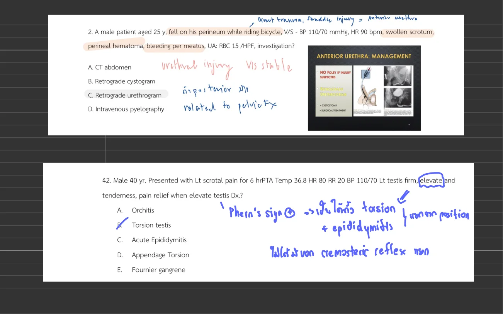
Source page image from ขอสอบ Uro.pdf p.1
ถูกต้อง
CT abdomen is the correct management step for the genital emergency described in the stem.
ยังไม่ถูก
Retrograde cystogram ไม่ใช่คำตอบของข้อนี้.
ยังไม่ถูก
Retrograde urethrogram is used when urethral injury is suspected, not for the renal or bladder-trauma question being asked here.
ยังไม่ถูก
Intravenous pyelography ไม่ใช่คำตอบของข้อนี้.
Source file: ขอสอบ Uro.pdf
Reference: Source: ขอสอบ Uro.pdf | p.1
Pediatric Renal / Urogenital
Q1. A 15-year-old male presents to the emergency department with sudden-onset severe left testicular pain. He denies any trauma, recent illnesses, or urinary symptoms. On examination, the left testicle is swollen, tender, and positioned higher than the right testicle. The cremasteric reflex is absent on the left side. Doppler ultrasound reveals below. Which of the following is the most appropriate next step in the management of this patient?
Source image
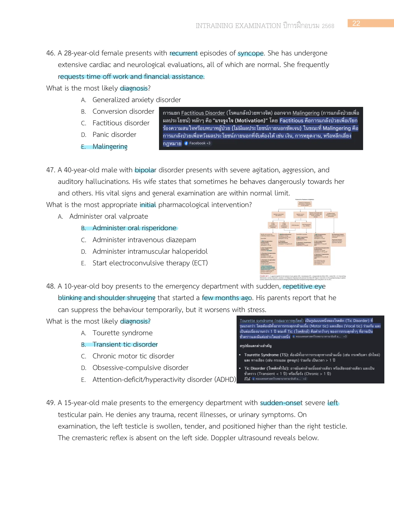
Source page image from Intraining exam 100 ข้อ 12 Jan 2026 p.23
ถูกต้อง
Perform manual detorsion at the bedside is the correct management step for the genital emergency described in the stem.
ยังไม่ถูก
Order a non-contrast scrotal CT for further evaluation ไม่ใช่คำตอบของข้อนี้.
ยังไม่ถูก
Consult urology for elective outpatient scrotal exploration ไม่ใช่คำตอบของข้อนี้.
ยังไม่ถูก
Administer intravenous antibiotics and arrange scrotal debridement ไม่ใช่คำตอบของข้อนี้.
ยังไม่ถูก
Administer analgesia and observe the patient for spontaneous resolution ไม่ใช่คำตอบของข้อนี้.
Q3. Boy 5 yr ล้มชายโครงขวากระแทกขอบโต๊ะ มีอาการปวดเวลาขยับและสัมผัส ไม่มีแผล ไม่มีอาการอื่น ไม่มี hematuria, V/S stable, PE: tender right flank on palpation, no abrasion wound, no ecchymosis, UA RBC 20-30, WBC 10. ถาม next management
ถูกต้อง
ถูก: CT kidney เป็นคำตอบของข้อนี้.
ยังไม่ถูก
Retrograde urethrogram is used when urethral injury is suspected, not for the renal or bladder-trauma question being asked here.
ยังไม่ถูก
Retrograde cystogram is not the study being asked for in this particular urinary-tract trauma scenario.
Q4. เคสเด็กชาย อายุ 7 ปี มาด้วย his foreskin caught in his zipper while dressing , unable to free himself. On examination, a portion of the prepuce is entrapped in the zipper teeth, causing localized edema and erythema. There are no signs of severe bleeding or necrosis. What is the best initial management for this patient?
ยังไม่ถูก
Immediate surgical degloving of the penis ไม่ใช่คำตอบของข้อนี้.
ถูกต้อง
ถูก: Cutting the median bar of the zipper to release the entrapped tissue เป็นคำตอบของข้อนี้.
ยังไม่ถูก
Forcibly pulling the foreskin out of the zipper ไม่ใช่คำตอบของข้อนี้.
ยังไม่ถูก
Applying topical anesthetic and observing for spontaneous release ไม่ใช่คำตอบของข้อนี้.
Q5. Boy 2 yr Present with inability to void for 6 hr, penile pain + AUR Pe can't retracted foreskin, mild erythema of foreskin ถาม dx
ยังไม่ถูก
Posthitis ไม่ใช่คำตอบของข้อนี้.
ยังไม่ถูก
Balanitis ไม่ใช่คำตอบของข้อนี้.
ยังไม่ถูก
Paraphimosis is a different penile emergency and does not explain this presentation.
ถูกต้อง
Pathologic phimosis is the correct management step for the genital emergency described in the stem.
ยังไม่ถูก
Physiologic phimosis ไม่ใช่คำตอบของข้อนี้.
Source file: MCQ 2025 แยกหัวข้อ.pdf
Reference: Source: MCQ 2025 แยกหัวข้อ.pdf | p.65
Q6. Male 7 yr, acute pain at scrotal 1 hr PTA, denied history of dysuria, no fever. Physical examination: Phren sign negative, cannot evaluate axis of scrotum due to pain. Which is the most likely risk factor for this patient?
ถูกต้อง
Persistent processus vaginalis is the correct management step for the genital emergency described in the stem.
Source page from MCQ-202024.pdf.pdf p.8 shows choice A only; choices B-E are blank on the recoverable source page. Source file: MCQ-202024.pdf.pdf
Reference: Source: MCQ-202024.pdf.pdf | p.8
Q7. เด็กชายอายุ 4 ปี มา ED ด้วยเรื่องปวดท้อง คาดเบล์นั่งอยู่ข้างหลัง vital signs stable, FAST seen free fluid at suprapubic area, UA RBC >50. What is the most appropriate investigation?
Source image
Source page image from MCQ-202024.pdf.pdf p.4
ยังไม่ถูก
Suprapubic pyelogram ไม่ใช่คำตอบของข้อนี้.
ถูกต้อง
ถูก: Cystogram เป็นคำตอบของข้อนี้.
ยังไม่ถูก
Retrograde urethrogram is used when urethral injury is suspected, not for the renal or bladder-trauma question being asked here.
ยังไม่ถูก
CT is not the first test or treatment step for the pediatric renal problem being asked here.
ยังไม่ถูก
Ultrasound KUB ไม่ใช่คำตอบของข้อนี้.
Also found in: Source: Gi kub uro.pdf | p.3-4 Source file: MCQ-202024.pdf.pdf
Prior group A beta-hemolytic streptococcal infection can trigger nephritic glomerular inflammation. Skin infection classically precedes poststreptococcal glomerulonephritis by about 3-5 weeks.
skin infectionedemaoligurialow C3supportive care
Timing
Pharyngitis 7-15 days; skin infection 3-5 weeks
Nephritogenic group A beta-hemolytic streptococci are classic triggers.
The pharynx and skin are the common antecedent infection sites.
Other infections such as Staphylococcus aureus or S. epidermidis can also lead to renal disease, usually with longer latency.
Clinical picture
Nephritic syndrome features
Microscopic or gross hematuria and proteinuria.
Hypertension and edema are classic.
Children may report recent URI/skin infection or tea-colored urine.
This stem
Why restrict fluid?
Periorbital edema + bilateral leg edema = volume overload signal.
Oliguria + creatinine 1.4 suggests impaired renal handling.
Na 125 with edema makes a saline load unsafe unless shock/hypovolemia is present.
Pearl
In suspected postinfectious nephritic syndrome with edema and oliguria, do not reflexively give a large NSS bolus. Treat volume overload with fluid/sodium restriction and escalate to diuretics/nephrology when indicated.
Textbook points to remember
Cause: prior infection with group A beta-hemolytic streptococci; only some strains are nephritogenic.
Mechanism: immune complex formation after deposition of streptococcal nephritogenic antigens in the glomerulus.
Serology: ASO or anti-DNase B/streptozyme are often elevated; C3 is typically decreased.
Treatment: largely supportive; symptoms usually resolve in a few weeks and hypertension often resolves within 1-2 weeks.
Disposition: asymptomatic patients with probable PSGN and normal vital signs may be discharged only after consultation and nephrology follow-up arrangement; atypical or severe cases need admission/renal workup.
Cat-scratch disease vs this question
Cat-scratch disease (Bartonella henselae): classically causes inoculation papule/pustule followed by regional lymphadenopathy.
This question: edema, oliguria, hyponatremia, and creatinine elevation shift the diagnosis to renal complication/nephritic syndrome, not simple cat-scratch fever.
Exam move: the cat scratch/cellulitis history is the antecedent skin infection; the management question is renal volume management.
Q11. A 10-year-old boy presents with testicular pain and low-grade fever for 2 hours. He can urinate normally. Physical examination shows moderate swelling and tenderness at the left testis, a bluish dot at the upper lateral portion of the testis, and intact cremasteric reflex. What is the most appropriate management?
ยังไม่ถูก
Manual detorsion ไม่ใช่คำตอบของข้อนี้.
ยังไม่ถูก
Scrotal Doppler can support the diagnosis, but it should not delay treatment when the presentation already points to a true genital emergency.
ถูกต้อง
Pain control is the correct management step for the genital emergency described in the stem.
Source page from รวมข้อสอบ-board-2562-CHULA.pdf p.28 currently shows 3 recoverable choices. Also found in: Source: Ped Uro ortho-1.pdf | p.24-25 Source file: รวมข้อสอบ-board-2562-CHULA.pdf
CT is not the first test or treatment step for the pediatric renal problem being asked here.
ยังไม่ถูก
IVP ไม่ใช่คำตอบของข้อนี้.
ยังไม่ถูก
retrograde urethrogram ไม่ใช่คำตอบของข้อนี้.
ถูกต้อง
ถูก: observe and follow UA เป็นคำตอบของข้อนี้.
Source file: เด็ก trauma.pdf
Reference: Source: เด็ก trauma.pdf | p.53
Q13. 5 years old girl came to ER due to falling from 1 meter high table, mild pain at buttock and urine is clear, At ER: BT 37, PR 100, RR 20, BP 90/50, SpO2 99%, PE:WNL, FAST negative, no free fluid, UA: RBC. 30-50, WBC 0-1, Epi 0-1 What is most appropriate management [MCQ 65]
Source image
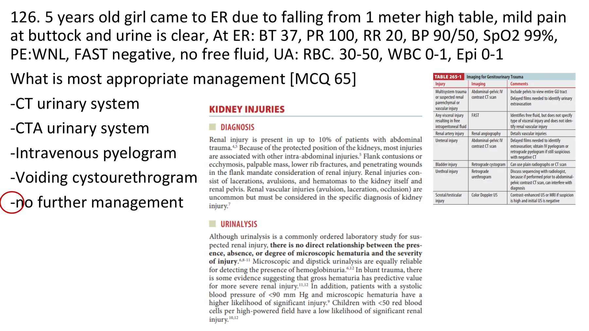
Source page image from เด็ก trauma.pdf p.23
ยังไม่ถูก
CT urinary system ไม่ใช่คำตอบของข้อนี้.
ยังไม่ถูก
CTA urinary system ไม่ใช่คำตอบของข้อนี้.
ยังไม่ถูก
Intravenous pyelogram ไม่ใช่คำตอบของข้อนี้.
ยังไม่ถูก
Voiding cystourethrogram ไม่ใช่คำตอบของข้อนี้.
ถูกต้อง
ถูก: no further management เป็นคำตอบของข้อนี้.
Source file: เด็ก trauma.pdf
Reference: Source: เด็ก trauma.pdf | p.23
Q14. เด็กมี pelvic fracture from car accident, V/S stable, FAST negative, and urinalysis RBC 20. What is the most appropriate management?
Source image
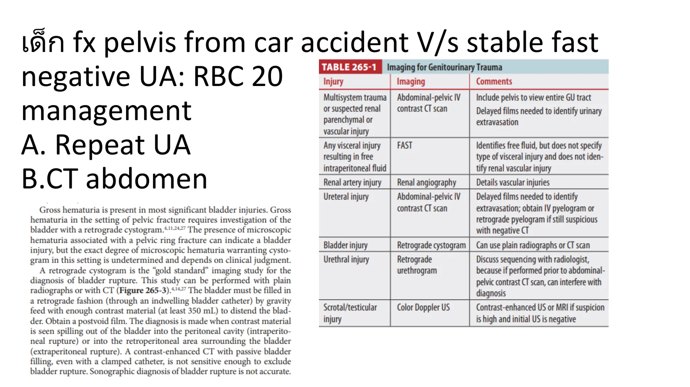
Source page image from เด็ก trauma.pdf p.6
ยังไม่ถูก
Repeat urinalysis ไม่ใช่คำตอบของข้อนี้.
ถูกต้อง
ถูก: CT abdomen เป็นคำตอบของข้อนี้.
Source page from เด็ก trauma.pdf p.6 currently shows only 2 recoverable choice(s). The remaining choices have not been safely recovered yet. Source file: เด็ก trauma.pdf
Source page from Ped Uro ortho-1.pdf p.10 currently shows only 2 recoverable choice(s). The remaining choices have not been safely recovered yet. Also found in: Source: Ped Uro ortho 2.pdf | p.10-11 Source file: Ped Uro ortho-1.pdf
Reference: Source: Ped Uro ortho-1.pdf | p.10-11
Q16. เด็กเจ็บอัณฑะ มี blue dot sign ถาม management [MCQ 63]
Source image
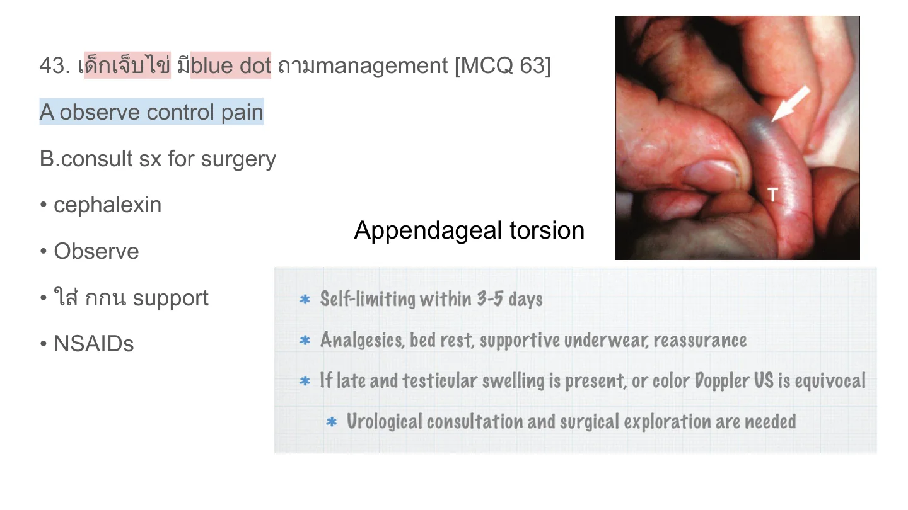
Source page image from Ped Uro ortho-1.pdf p.16
ยังไม่ถูก
Observe and pain control ไม่ใช่คำตอบของข้อนี้.
ยังไม่ถูก
Consult surgery ไม่ใช่คำตอบของข้อนี้.
ยังไม่ถูก
Cephalexin ไม่ใช่คำตอบของข้อนี้.
ยังไม่ถูก
Observe ไม่ใช่คำตอบของข้อนี้.
ถูกต้อง
ถูก: Scrotal support + NSAIDs เป็นคำตอบของข้อนี้.
Also found in: Source: Ped Uro ortho 2.pdf | p.15-16 Source file: Ped Uro ortho-1.pdf
Spermatic cord is the correct management step for the genital emergency described in the stem.
ยังไม่ถูก
Penile block ไม่ใช่คำตอบของข้อนี้.
ยังไม่ถูก
Superficial peroneal nerve ไม่ใช่คำตอบของข้อนี้.
ยังไม่ถูก
Posterior scrotal nerve ไม่ใช่คำตอบของข้อนี้.
Source file: Ped Uro ortho-1.pdf
Reference: Source: Ped Uro ortho-1.pdf | p.17-19
Q18. 7-year-old child presents with seizure and bloody diarrhea. Labs show thrombocytopenia, AKI, and blood smear with MAHA picture. What is the diagnosis?
ถูกต้อง
ถูก: HUS เป็นคำตอบของข้อนี้.
ยังไม่ถูก
DIC ไม่ใช่คำตอบของข้อนี้.
Source page from AKI test.pdf p.3 currently shows only 2 recoverable choice(s). The remaining choices have not been safely recovered yet. Source file: AKI test.pdf
Reference: Source: AKI test.pdf | p.3
Q19. Ped 4 years old male comes to ED with painful urination for 1 day. He has neither fever nor smell urine. There is redness at his penile tip with normal prepuce. In the ED, he can urinate. His urinalysis shows WBC 3-5, no BRC, nitrite negative. What is the diagnosis? [MCQ 65]
ยังไม่ถูก
Cystitis ไม่ใช่คำตอบของข้อนี้.
ถูกต้อง
Balanitis is the correct management step for the genital emergency described in the stem.
ยังไม่ถูก
Postitis ไม่ใช่คำตอบของข้อนี้.
ยังไม่ถูก
Phimosis ไม่ใช่คำตอบของข้อนี้.
ยังไม่ถูก
Paraphimosis is a different penile emergency and does not explain this presentation.
Source file: Ped Uro ortho-1.pdf
Reference: Source: Ped Uro ortho-1.pdf | p.2-3
Q20. A boy 12-year-old, came to hospital with penile pain 1 day PE: swelling, redness of glan penis and shaft What is the next appropriate management after analgesia ? [MCQ 64]
Source image
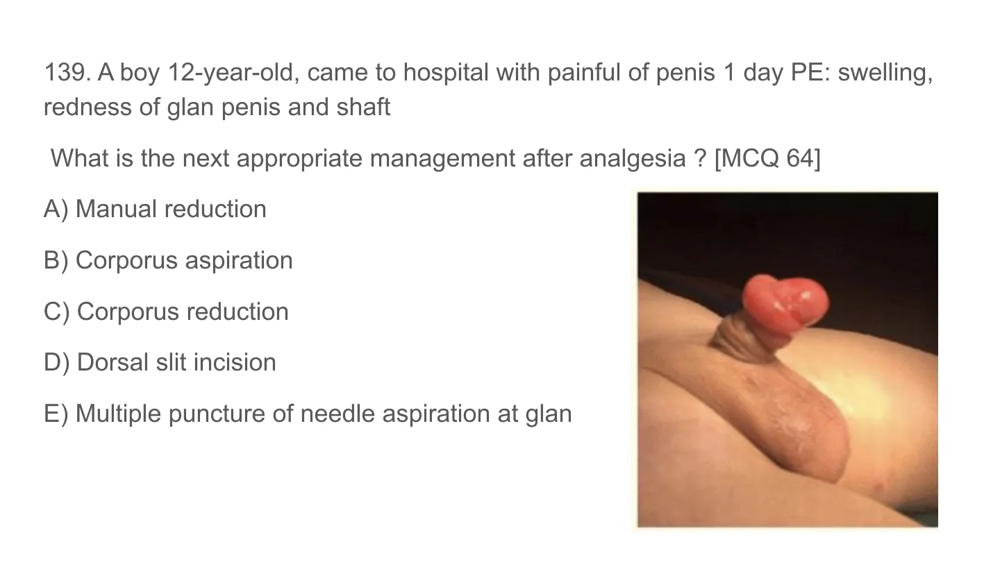
Source page image from Ped Uro ortho-1.pdf p.5
ถูกต้อง
Manual reduction is the correct management step for the genital emergency described in the stem.
ยังไม่ถูก
Corporal aspiration ไม่ใช่คำตอบของข้อนี้.
ยังไม่ถูก
Corporal reduction ไม่ใช่คำตอบของข้อนี้.
ยังไม่ถูก
Dorsal slit incision ไม่ใช่คำตอบของข้อนี้.
ยังไม่ถูก
Multiple puncture of needle aspiration at glans ไม่ใช่คำตอบของข้อนี้.
Also found in: Source: ขอสอบ Uro.pdf | p.4 Source file: Ped Uro ortho-1.pdf Also found in: Source: Ped Uro ortho.pdf | p.5-6
Reference: Source: Ped Uro ortho-1.pdf | p.5-6
Q21. A 6-year-old boy was brought to ED after motor vehicle collision. The child was clinically stable. Physical examination revealed bruise at the right flank region. Urinalysis showed clear urine, RBC 5-10, WBC 2-3, and no organism. What is the most appropriate management?
Source image
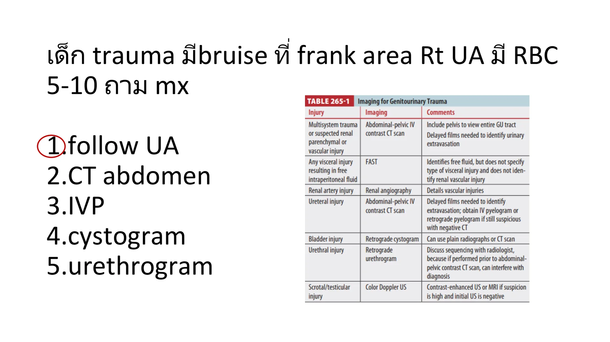
Source page image from เด็ก trauma.pdf p.10
ถูกต้อง
ถูก: Serial urinalysis เป็นคำตอบของข้อนี้.
ยังไม่ถูก
CT scan of abdomen ไม่ใช่คำตอบของข้อนี้.
ยังไม่ถูก
IVP ไม่ใช่คำตอบของข้อนี้.
ยังไม่ถูก
Cystogram ไม่ใช่คำตอบของข้อนี้.
ยังไม่ถูก
Urethrogram ไม่ใช่คำตอบของข้อนี้.
Source file: เด็ก trauma.pdf
Reference: Source: เด็ก trauma.pdf | p.10
McGraw Board Review Section
Q1. An 88-year-old man presents to the emergency department with severe abdominal pain. He reports difficulty urinating over the past few weeks and has not been able to void since last night. What is MOST COMMON etiology of acute urinary retention in this demographic?
ถูกต้อง
McGraw answer section p.106 explains: Although benign prostatic hypertrophy (BPH) is the most common reason for acute urinary retention in the emergency department, it is important to tease out possible factors in the history and physical examination which could point to alternative etiologies. Relevant historical factors could include a history of prostatism, nocturia, or terminal dribbling. Incontinence may be associated with BPH secondary to overflow, but symptoms like urgency, frequency, and hesitancy may occur with infectious causes as well. Infectious sources may cause accompanying fever and chills. If the patient has a history of trauma, bladder calculi, surgery, or radiation to the prostate or bladder, these facts may steer the physician toward alternative diagnostic possibilities. Common pharmacologic causes of urinary retention include anticholinergics, opiates, anesthetics, and decongestants.
Source file: McGraw Chapter 8: Renal and Genitourinary Disorders
Q2. What is the clinical syndrome that results from irreversible loss of renal function?
ถูกต้อง
McGraw answer section p.106 explains: The irreversible loss of renal function is called end stage renal disease (ESRD). Uremia is the clinical syndrome resulting from loss of ESRD. It is a multifaceted syndrome comprised of signs and symptoms resulting from end organ dysfunction. Azotemia is simply defined as the build-up of nitrogenous waste in the blood stream but does not imply a clinical manifestation of renal dysfunction. A broad array of signs and symptoms occur in uremia. Neurologic manifestations include, but are not limited to, altered mental status, slurred speech, seizures, paresthesias, and headaches. Common gastrointestinal features are nausea, vomiting, diarrhea, abdominal pain, and distention secondary to ascites. Anemia secondary to decreased erythropoietin levels or decreased red blood cell (RBC) count survival can manifest as chest pain, shortness of breath, fatigue. Chest pain, dyspnea, hypoxia may result from fluid overload, accelerated coronary artery disease (CAD), uremic cardiomyopathy, pericardial disease, and tamponade physiology. Excretory failure, resulting in inability to remove metabolic waste through the urine and buildup of toxins within the plasma, is the leading hypothesis behind the pathophysiology of uremia. Over 70 toxins are reported. Many of these are protein bound, are not removed through dialysis and thought to play on causal role in end organ system dysfunction.
Source file: McGraw Chapter 8: Renal and Genitourinary Disorders
Q3. A 72-year-old man with a past medical history of end-stage renal disease (ESRD) on hemodialysis presents with discomfort and discoloration over his right upper extremity fistula site. The absence of a bruit or thrill on examination should prompt what NEXT step in management?
ถูกต้อง
McGraw answer section p.106 explains: Doppler ultrasound should be the first diagnostic step when evaluating a fistula site with absent bruit or thrill. Complications of vascular access in patients with end-stage renal disease (ESRD) account for the most inpatient hospital days. The most common complications within this subset of patients is infection and vascular pathology. Inadequate flow within the vascular access is frequently due to stenosis or thrombosis. Both complications clinically present with loss of a bruit or thrill on examination. Treatment options if thrombosis or significant stenosis is present include clot removal, angioplasty, or local tPA injection. Management of the above complications should involve consultation with vascular surgery. While laboratory results may help guide decisions, they should not be solely relied upon for diagnosis. Coagulation studies would not be the first step in management in this case. Anticoagulation with heparin or local alteplase is not indicated without first establishing the diagnosis. If local tissue plasminogen activator (tPA) is to be given for acute fistula thrombosis, it should be discussed and given after consultation with vascular surgery.
Source file: McGraw Chapter 8: Renal and Genitourinary Disorders
Q4. An 84-year-old woman with a past medical history of end-stage renal disease (ESRD) on dialysis presents 8 from hemodialysis with brisk bleeding from her fistula. Her vitals are within normal limits. What is the MOST APPROPRIATE NEXT step in management?
ถูกต้อง
McGraw answer section p.106 explains: Manual direct pressure is the first step in management of acute hemorrhage of a vascular access site. Acute bleeding from a fistula site can be life threatening. Anticoagulation, aneurysmal bleeding, and anastomosis rupture are common causes of hemorrhage. When presented with acute hemorrhage, direct pressure should first be held for 5 to 10 minutes. Some emergency departments have clips designed to apply direct pressure. Additional treatments include application of sponges soaked in reconstituted thrombin or chemical thrombotics to the hemorrhage site. Protamine administration can be given to reverse heparin given during dialysis. Local lidocaine with epinephrine can be administered to be site. A deep suture can be placed. A tourniquet can be applied proximally to the vascular access if the above methods have failed. If a tourniquet has been placed, vascular surgery should be emergently consulted as this is a temporizing method.
Source file: McGraw Chapter 8: Renal and Genitourinary Disorders
Q5. What is cited as the MOST COMMON complication during hemodialysis?
ถูกต้อง
McGraw answer section p.106 explains: Hypotension is the most common complication to occur during dialysis. It can occur in approximately 50% of dialysis sessions. During dialysis, through the process of ultrafiltration, 1 to 3 L of fluid is typically removed. Rates of fluid removal can vary; however, it can occur as quickly as 2 L/h. As fluid is dialyzed from the patient, blood pressure maintenance is managed by compensatory action of the cardiovascular system and fluid shifts to the intravascular space from the interstitial and intracellular compartments. Excessive extrafiltration, secondary to inaccurate dry weight estimation is the most common etiology of hypotension during dialysis. Bleeding from the vascular access site also occurs and is a known complication of dialysis. Heparin is administered during dialysis to keep the access patent. Electrolyte derangements such as hypercalcemia and hypermagnesemia are an additional complication that can arise. Typically, electrolyte abnormalities stem from improper dialysate concentrations.
Source file: McGraw Chapter 8: Renal and Genitourinary Disorders
Q6. A 55-year-old man with a past medical history of end-stage renal disease (ESRD) on dialysis is thought to display characteristic features of dialysis dysequilibrium. Which of the following BEST describes this diagnosis?
ถูกต้อง
McGraw answer section p.107 explains: Dialysis dysequilibrium syndrome is a clinical entity occurring at the end of dialysis. If large solute clearances occur during dialysis, cerebral edema can develop as a result of osmolar imbalance between the blood-brain barrier. This manifests clinically as a wide array of symptoms and signs but typical symptoms include nausea, headaches, dizziness, and confusion. Signs include vomiting, altered mental status, seizures, hypertension. Seizures and death can result. Treatment includes stopping dialysis and administration of IV mannitol.
Source file: McGraw Chapter 8: Renal and Genitourinary Disorders
Q7. A 33-year-old woman G3P2 at 7 months’ gestation presents to the emergency department after twisting her ankle. Her x-rays are unremarkable. A urinalysis sent from triage reveals + white blood cell (WBCs), moderate bacteria, and is positive for leukocyte esterase. The patient denies any urinary symptoms. What is the APPROPRIATE management?
ถูกต้อง
McGraw answer section p.107 explains: The patient has asymptomatic bacteriuria. Despite lack of symptoms, in a pregnant patient it is recommended to treat with antibiotics and send the urine for culture. Treatment with antibiotics is suggested in order to prevent low birth weight and pyelonephritis, which can theoretically result in preterm labor or sepsis. Pregnancy increases the inherent risk of urinary tract infection (UTI) due to the physiologic changes of the genitourinary (GU) tract leading to urinary stasis. Organisms responsible for most UTIs in pregnancy are similar to the general population. Asymptomatic bacteriuria can be treated with a cephalosporin, nitrofurantoin, or trimethoprim sulfamethoxazole. It is recommended that nitrofurantoin and trimethoprim sulfamethoxazole be used as first line in the second and third trimesters.
Source file: McGraw Chapter 8: Renal and Genitourinary Disorders
Q8. A 74-year-old man with a past medical history of spinal cord injury from a prior motor vehicle collision (MVC) with consequent neurogenic bladder with chronic Foley catheter presents with fatigue. His workup in the emergency department is unremarkable except for a urinalysis which reveals 90 white blood cell (WBCs), 20 red blood cells (RBCs), and leukocyte esterase positive. Does this patient have a urinary tract infection (UTI)?
ถูกต้อง
McGraw answer section p.107 explains: Catheter-associated urinary tract infections (UTIs) are a common nosocomial infection. Bacteriuria is near universal by 30 days of catheter placement. The urinary tract is exposed to pathogens by bacteria that build up within the lumen of the catheter or along the outer surface. Biofilm formation is the first step to infection. Once formed, pathogenic bacteria in the biofilm are protected from elimination by the flow of urine and the immune system. Catheter-associated UTI should be suspected not only in cases of classic symptoms of fever, dysuria, hematuria, pelvic discomfort, or flank pain but also in cases of atypical and nonspecific symptoms such as altered mental status, weakness, malaise, and fatigue or lethargy. Guidelines suggest such patients should be treated with antibiotics if no other cause for the symptoms is identified in the workup. Patients who have suffered a spinal cord injury may present with increased spasticity or autonomic dysreflexia as well. Treatment includes removal and replacement of the Foley if necessary and antibiotics.
Source file: McGraw Chapter 8: Renal and Genitourinary Disorders
Q9. Acute kidney injury is defined best by which of the following?
ถูกต้อง
McGraw answer section p.107 explains: Acute kidney injury (AKI) is the loss of renal function over time resulting in the loss of internal homeostasis and build-up of metabolic waste. The Acute Kidney Injury Network (AKIN) and Risk, Injury, Failure, Loss, Endstage (RIFLE) are two classification systems that have numerical definitions of AKI. However, these established criteria are relative to the patient’s baseline, rather than specific laboratory value definitions.
Source file: McGraw Chapter 8: Renal and Genitourinary Disorders
Q10. Which of the following BEST defines an uncompli cated urinary tract infection (UTI)?
ถูกต้อง
McGraw answer section p.107 explains: An uncomplicated urinary tract infection (UTI) is an infection of the urinary tract in a patient with normal genitourinary anatomy and physiology. In addition, the patient must not have significant comorbidities that would increase the risk of adverse outcomes. There must be no recent history of instrumentation of the genitourinary tract. Pyelonephritis in and of itself does not automatically define a UTI as complicated. The presence or absence of a fever alone is not within the strict definition of complicated or uncomplicated UTI. A complicated UTI can exist in a patient with normal vitals.
Source file: McGraw Chapter 8: Renal and Genitourinary Disorders
Q11. An ambulance brings in an unresponsive young patient who was “found down” in his apartment by his roommate after a night of binge drinking. His serum creatine kinase level returns at nearly 12,000 IU/L. CT of the brain shows no acute findings. ECG reveals normal sinus rhythm. Which of the following evidence-based treatments should the patient defi nitely receive?
ถูกต้อง
McGraw answer section p.107 explains: Aggressive hydration with saline solution is the mainstay of treatment for rhabdomyolysis. There are no prospective controlled trials showing a benefit for the use of bicarbonate for alkalinization of the urine, and mannitol may be harmful due to forced osmotic diuresis in hypovolemic patients. Ringer’s lactate contains potassium, and patients with rhabdomyolysis typically are hyperkalemic due to release of intracellular potassium into the bloodstream with muscle injury. Normal saline infusion should be titrated for urine output of greater than 200 mL/h.
Source file: McGraw Chapter 8: Renal and Genitourinary Disorders
Q12. What BEST characterizes a complicated urinary tract infection (UTI)?
ถูกต้อง
McGraw answer section p.107 explains: A complicated urinary tract infection (UTI) is defined as an infection of genitourinary (GU) tract in a patient with abnormal anatomy or physiology of the renal system and with comorbidities that place the patient at risk of adverse outcomes. Complicated UTI is not defined by clinical symptoms. Advanced age is a risk factor for complicated UTI but does not define it. CHAPTER 8 • Renal and Genitourinary Disorders 97
Source file: McGraw Chapter 8: Renal and Genitourinary Disorders
Q13. A 24-year-old man with no past medical history presents with intermittent severe right-sided flank pain. He denies any trauma. The pain radiates to his right groin. On examination his abdomen is nontender, and his urogenital examination is normal. Which is the MOST LIKELY diagnosis?
ถูกต้อง
McGraw answer section p.108 explains: Nephrolithiasis is the most likely diagnosis. The typical constellation of symptoms includes intermittent flank pain that radiates to the groin. Pain is usually acute in onset. Of note, patients may present with tenderness, guarding or rigidity on abdominal examination. Patients appear uncomfortable and may writhe in discomfort. Nausea and vomiting are commonly associated with bouts of pain. The location of the pain may correlate with the location of the stone with upper ureter stones referring to the flank, mid-ureter to the left lower abdominal quadrant and distal ureter to the groin. Testicular torsion is on the differential; however, this would classically be associated with abnormal testicular lie, loss of cremasteric reflex, and lack of flank pain. An abdominal aortic aneurysm would be unusual in a 24-year-old. This diagnosis can present with flank or abdominal pain mimicking nephrolithiasis but typically in patients older than 50 years. Risk factors for AAA include age >50, smoking, hypertension, family history, and connective tissue disorders. Pyelonephritis should be suspected in a patient presenting with urinary symptoms plus associated symptoms such as fevers, nausea, vomiting, or flank pain.
Source file: McGraw Chapter 8: Renal and Genitourinary Disorders
Q14. What is the primary treatment for urologic stone disease within the emergency department?
ถูกต้อง
McGraw answer section p.108 explains: Pain control is the mainstay of treatment for nephrolithiasis. Supportive care also includes antiemetics for nausea and vomiting. Nonsteroidal anti-inflammatory drugs (NSAIDs) are the recommended first-line treatment in those without contraindications because of their direct effect on the ureter. By inhibiting prostaglandin synthesis, NSAIDs target the source of pain. Additional pain control, including narcotics, may be required in the emergency department. Fluids have not been shown to result in any difference in stone passage or pain control. Consider fluid administration to correct a fluid deficit if the patient experienced significant vomiting. A Foley catheter does not play a role in the acute management of nephrolithiasis. Medical expulsive therapy with tamsulosin can be considered as adjunctive treatment. The literature is mixed regarding efficacy, but it may have an effect on stone passage depending on stone size.
Source file: McGraw Chapter 8: Renal and Genitourinary Disorders
Q15. A healthy 33-year-old woman is diagnosed in the emergency department with a 2-mm nonobstructive stone at the ureteropelvic junction. Her urinalysis shows 57 red blood cells (RBCs) but is otherwise normal. Her pain is controlled with 15 mg of Toradol. Which of the following are the MOST APPROPRIATE discharge instructions?
ถูกต้อง
McGraw answer section p.108 explains: Discharging patients with nephrolithiasis is appropriate if the stone is small enough to likely pass spontaneously, pain is controlled by oral analgesics and there are no signs of significant infection. After discharge, patients can strain their urine in order to capture a stone for potential analysis. Prescriptions for oral analgesics and medical expulsive therapy should be given. Return precautions should include severe unrelenting pain, fevers, and persistent vomiting. Urology or primary care follow-up within 1 week is appropriate. Patient education is important. They should be aware that stone passage rates are variable depending on stone size and the location. Larger kidney stones may take up to 30 days to pass.
Source file: McGraw Chapter 8: Renal and Genitourinary Disorders
Q16. A 90-year-old man with a past medical history of benign prostatic hypertrophy presents with abdominal pain and inability to urinate for the past 24 hours. A Foley catheter is placed in the emergency department. His blood chemistries reveal blood urea nitrogen (BUN) of 52 and creatinine of 2.1. His urine output has been about 350 mL/h during the first 4 hours of his emergency department stay. What is the BEST NEXT step in management?
ถูกต้อง
McGraw answer section p.108 explains: The patient in this scenario should be admitted for two reasons. First, patients with acute kidney injury secondary to obstruction should be hospitalized to trend renal function. In addition, the patient is this scenario is displaying evidence of postobstructive diuresis. After Foley catheter placement, urine output should be measured for 4 hours. If urine output exceeds 200 mL/h, the patient should be admitted for volume replacement matching urinary loss. A majority of patients with acute urinary retention relieved by Foley catheter placement can be discharged. If no significant acute kidney injury (AKI) or postobstructive diuresis is present, a leg bag can be placed and the patient can go home and follow up with urology in the next 3 to 7 days. If the patient is able to be discharged, they should be educated on Foley catheter care and given strict return precautions including returning to the emergency department for abdominal pain, penile pain, fevers, or catheter dysfunction.
Source file: McGraw Chapter 8: Renal and Genitourinary Disorders
Q17. What level of elevation of creatine kinase (CK) levels is diagnostic for rhabdomyolysis?
ถูกต้อง
McGraw answer section p.108 explains: Creatine kinase levels are the most sensitive assay for muscle injury that causing rhabdomyolysis. The normal range of creatine kinase levels goes up to approximately 200 U/L. Mild elevations of creatine kinase levels do not meet the definition for rhabdomyolysis and do not require treatment as such. Levels fivefold or greater warrant treatment.
Source file: McGraw Chapter 8: Renal and Genitourinary Disorders
Q18. A 40-year-old man presents with a painful erection that has lasted for several hours. Which medication is MOST LIKELY to have caused this condition?
ถูกต้อง
McGraw answer section p.108 explains: The antidepressant trazodone, also commonly used to treat insomnia, is known to cause low-flow priapism. Metoprolol is not one of the antihypertensives that is typically associated with priapism; hydralazine, prazosin, and calcium channel blockers. Likewise, zolpidem is not one of the neuroleptic medications that are most associated with priapism; however, other similar medications such as sertraline and hydroxyzine are. Aside from medications, priapism can also be caused by drugs of abuse, spinal cord tumors, toxic exposures such as rabies or black widow bites, penile trauma, sickle cell disease, or leukemia.
Source file: McGraw Chapter 8: Renal and Genitourinary Disorders
Q19. You are evaluating a 67-year-old patient with no known medical history who reports a fever, shaking chills, and scrotal pain and redness that is spreading rapidly. Inspection of the area reveals the following findings (Figure 8.1). His fingerstick glucose is 354 mg/dL. A point-of-care lactate is 4.1 mmol/L. Vital signs are notable for BP 88/57, HR 105, RR 20, and T 101.7°F. In addition to broad-spectrum antibioticscs and IV fluids, what is the MOST APPROPRIATE initial step in management?
Source image
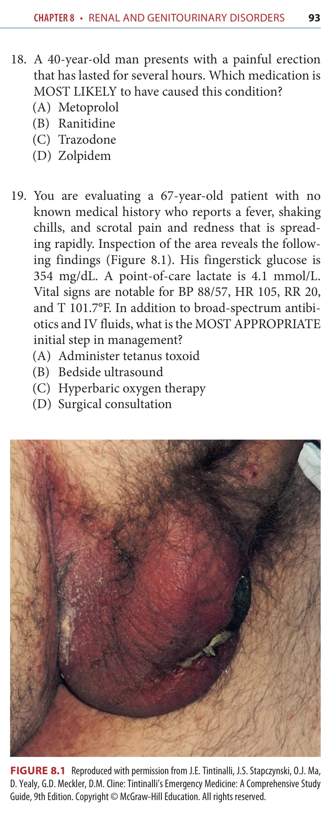
McGraw Figure 8.1
ถูกต้อง
McGraw answer section p.108 explains: In Fournier’s gangrene, urgent surgical consultation is of critical importance in the treatment plan. The other key elements are aggressive fluid resuscitation and broad-spectrum antibiotics. The diagnosis of Fournier’s gangrene is typically made clinically, and computed tomography or other imaging should not delay operative intervention, since any delay potentially allows for worsening of the rapid progression of necrosis.
Source file: McGraw Chapter 8: Renal and Genitourinary Disorders
Q20. A 57-year-old patient with a history of nephrolithiasis and recent ureteral stent placement presents due to lightheadedness. Vitals: T 98.7°F, HR 94, BP 112/56, RR 18, SpO2 96% on RA. Laboratory results include hemoglobin of 6.7, and a microscopic urinalysis shows 5 white blood cells (WBCs), 15 red blood cells (RBCs), and few squamous cells. What is the MOST APPROPRIATE NEXT step in management?
ถูกต้อง
McGraw answer section p.109 explains: Acute anemia in the setting of a recent ureteral stent placement procedure should prompt concern for a retroperitoneal hematoma, which can be evaluated by CT scan. Admission to urology without a definitive diagnosis of this complication would not be optimal for management. Iron studies are not typically useful in the emergency department setting. The number of red blood cells noted on this urinalysis do not suggest gross hematuria that would necessitate continuous bladder irrigation.
Source file: McGraw Chapter 8: Renal and Genitourinary Disorders
Q21. An elderly diabetic patient with a history of chronic obstructive pulmonary disease (COPD), hyperten sion, chronic kidney disease, and erectile dysfunction status post placement of penile prosthesis 1 week ago presents with altered mental status and complaints of penile pain. Vital signs as follows: T 102.5°F, HR 108, BP 96/58, RR 22, SpO2 93% on RA. Inspection and palpation of the area reveals tenderness along the penile shaft. What are the key elements necessary for management of this condition?
ถูกต้อง
McGraw answer section p.109 explains: This patient has evidence of sepsis secondary to the placement of a penile prosthetic device. The definitive treatment is removal of the device. The most common organisms including grampositive organisms such as Staphylococcus aureus and gram-negative bacilli. Broad-spectrum antibiotic coverage is appropriate. Ceftriaxone will cover gram-negative organisms but is not adequate coverage in sepsis potentially caused by S. aureus. Foley catheter placement is not necessary in this patient based on the information provided. Urologic consultation is necessary as patients with a prosthetic device as the cause of serious infection will require device removal. Admission with pain management only and no antibiotic treatment would not be adequate.
Source file: McGraw Chapter 8: Renal and Genitourinary Disorders
Q22. How can mumps orchitis be differentiated from testicular torsion?
ถูกต้อง
McGraw answer section p.109 explains: Mumps orchitis and testicular torsion can present in a very similar fashion, with unilateral testicular pain, tenderness, and swelling. Both can be quite painful. Imaging can aid in the diagnosis of testicular torsion. Decreased vascular flow to the testicle can be seen on ultrasound.
Source file: McGraw Chapter 8: Renal and Genitourinary Disorders
Q23. A young boy presents with the following injury to his penis (Figure 8.2). What are the BEST potential treatments for this problem?
Source image
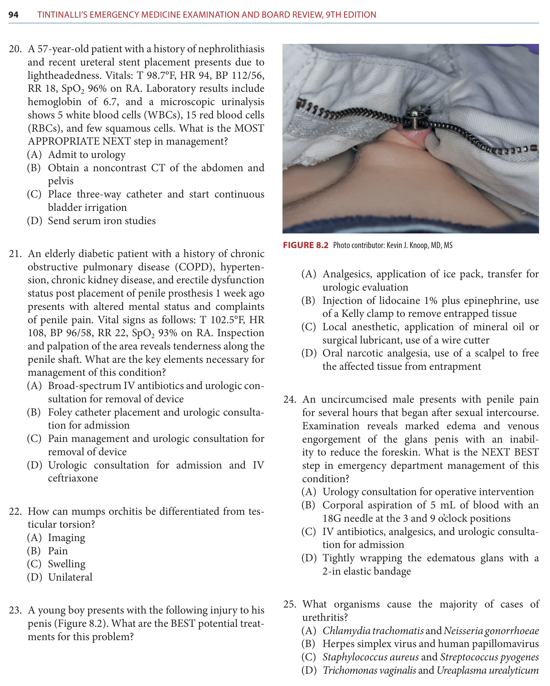
McGraw Figure 8.2
ถูกต้อง
McGraw answer section p.109 explains: Zipper entrapment of the penis or scrotum is the most common genital injury in male pediatric patients. Local anesthetic can be used, and then it is recommended to attempt application of a nontoxic lubricant to ease removal of the zipper. If this alone is not effective, a wire cutter can be used to cut the median bar of the zipper, which is easily accessible in the case of the image provided. If only the zipper teeth are involved, a cut can be made to the cloth in between the teeth to release the zipper. Use of a scalpel on the entrapped tissue should not be necessary. Lidocaine with epinephrine is generally avoided in penile injuries.
Source file: McGraw Chapter 8: Renal and Genitourinary Disorders
Q24. An uncircumcised male presents with penile pain for several hours that began after sexual intercourse. Examination reveals marked edema and venous engorgement of the glans penis with an inability to reduce the foreskin. What is the NEXT BEST step in emergency department management of this condition?
ถูกต้อง
McGraw answer section p.109 explains: A paraphimosis is a true urologic emergency, and an EM physician must be prepared to address this without assistance from a urologist if one is not immediately available. Wrapping the glans with a 2-in bandage can reduce edema, allowing the foreskin to become reducible. Other methods that can be tried include manual pressure to reduce glans edema, local anesthetic injection, and, as a final measure if the initial attempts are unsuccessful, superficial dorsal incision of the constricting band to prevent tissue necrosis. Urologic referral is necessary even if the foreskin is reduced, as the paraphimosis can recur unless surgically addressed. Corporal aspiration is the treatment for priapism.
Source file: McGraw Chapter 8: Renal and Genitourinary Disorders
Q25. What organisms cause the majority of cases of urethritis?
ถูกต้อง
McGraw answer section p.109 explains: The diagnosis of urethritis is clinically made, through presentation with purulent discharge from the urethra. Most cases are secondary to gonorrhea and chlamydia, and as such, the best empiric treatment is ceftriaxone 250 mg intramuscular (IM) and 1 g azithromycin orally or 100 mg doxycycline twice daily for 10 days. The other sexually transmitted diseases listed are less common causes of urethritis. Staph and strep are not common causes of urethritis. 99 Obstetrics and Gynecology
Source file: McGraw Chapter 8: Renal and Genitourinary Disorders
Q26. A 22-year-old woman presents for a second visit to the emergency department 3 days after being evaluated for dysuria. She has persistent dysuria despite being prescribed nitrofurantoin. Review of her urinalysis from 3 days ago reveals multiple WBCs, a negative pregnancy test, and a negative culture. Which of the following may be a complication if this infection is not treated appropriately?
ถูกต้อง
McGraw answer section p.157 explains: Urethral chlamydial infection should be considered in the differential diagnosis of sterile pyuria for men and women. Complication of untreated infection may include pelvic inflammatory disease. Other complications may include ectopic pregnancy and infertility. Pustular skin lesions, meningitis, and septic arthritis are more commonly associated with gonococcal infections.
Q27. A 28-year-old woman presents for urinary retention. She describes 1 day of dysuria and vaginal burning but no hematuria or vaginal discharge. She denies abdominal or flank pain. On external vaginal exami nation, you note the picture finding (Figure 11.4). Which of the following is the MOST APPROPRIATE treatment?
Source image
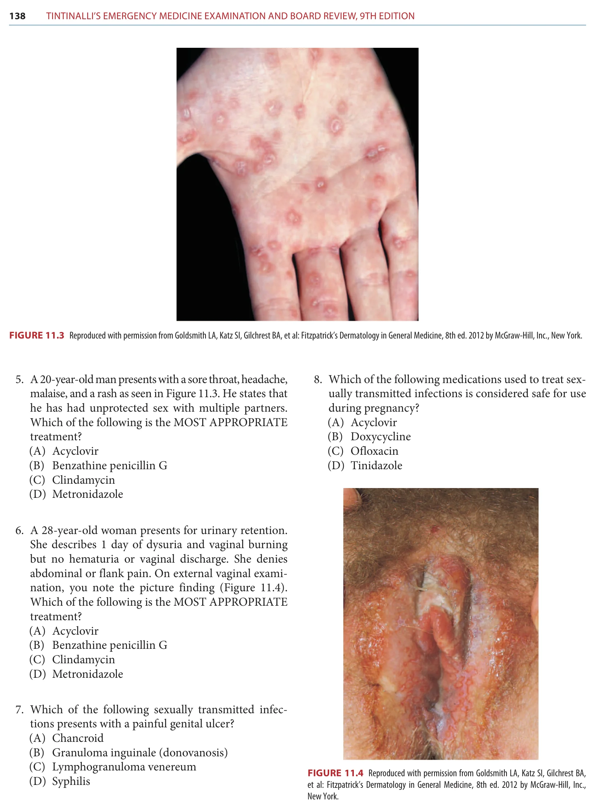
McGraw Figure 11.4
ถูกต้อง
McGraw answer section p.157 explains: In women, the painful ulcers of herpes simplex virus (HSV) can occur on the introitus, urethral meatus, labia, and perineum. In men, HSV ulcers often appear on the shaft or glans of the penis. Lesions are exquisitely painful and sometimes are associated with serous discharge. In both sexes, lesions may be found on the perianal area, thighs, or buttocks. Dysuria is common in women and may progress to urinary retention secondary to severe pain. Primary syphilis is characterized by painless ulcers that may be found on the vulva in women or other areas of sexual contact and first-line treatment remains penicillin. Metronidazole and clindamycin are used to treat bacterial vaginosis, which is not commonly associated with genital ulcers.
Q28. A 90-year-old woman presents to the emergency department from a nursing home with fever and altered mentation. Vitals reveal a sinus tachycardia of 128, respiratory rate of 28, and blood pressure 85/55. Laboratory abnormalities include a white blood cell count of 19.8 × 109/L and lactic acid of 5.5. Which of the following etiologies MOST LIKELY accounts for her presentation?
ถูกต้อง
McGraw answer section p.158 explains: Sepsis is a clinical diagnosis in the emergency department when the practitioner has suspicion or confirmation of infection, systemic inflammation, and new organ dysfunction or tissue hypoperfusion. The most common etiology of sepsis is acute bacterial pneumonia and the most common causative organisms are Streptococcus pneumoniae, Staphylococcus aureus, gram-negative bacilli, and Legionella pneumophila. Cellulitis and pyelonephritis are also common causes of sepsis but less common than pneumonia. Meningitis is a rare but devastating cause of sepsis.
Q29. A 55-year-old man with chronic kidney disease on hemodialysis presents to the emergency department for fever and increased weakness today. His wife has noticed that he seems confused about the events of the last 2 days. Vital signs reveal fever, tachycardia, and hypotension. Which of the following organisms is the MOST LIKELY cause of bacteremia in this patient?
ถูกต้อง
McGraw answer section p.158 explains: Bacteremia from indwelling medical devices such as intraperitoneal or intravascular dialysis catheters may be a source of septic shock. The most prevalent causes of bacteremia are Staphylococcus aureus, Streptococcus pneumoniae, and Neisseria meningitidis. Pseudomonas aeruginosa and other gramnegative bacteria are occasional causes of bacteremia in injection drug users. Streptococcus pyogenes is more commonly associated with necrotizing soft tissue infection leading to sepsis.
Q30. A renal dialysis patient presents at 2 am with continu ous oozing around a new dialysis catheter site in her upper chest wall. The catheter was placed 1 day ago, but she has not been dialyzed for 3 days. She other wise looks well and is stable. Which of the following is the fastest and BEST INITIAL treatment to stop the bleeding quickly?
ถูกต้อง
McGraw answer section p.217 explains: Patients with uremia have platelet dysfunction that interferes with the platelets’ ability to bind to vascular endothelium. This will cause an increased bleeding time, though other measures of coagulation available in the emergency department such as prothrombin time and activated partial thromboplastin time may be normal. Desmopressin will increase the amount of circulating von Willebrand factor and promote platelet aggregation. Cryoprecipitate should be reserved for life-threatening bleeding. Hemodialysis will be effective but will most likely take some time to coordinate. Platelet transfusion will not be effective because the donor platelets will also be affected by the uremic toxins in the patient’s blood.
Q31. A 10-year-old boy presents with fatigue after 1 week of bloody diarrhea. On examination, he has pallor and trace pedal edema. Laboratory tests show ane mia, elevated bilirubin, thrombocytopenia, and renal failure. He has normal coagulation studies. He has no rash or confusion. Which is the MOST LIKELY cause of this patient’s condition?
ถูกต้อง
McGraw answer section p.219 explains: Typical hemolytic uremic syndrome is caused by Shiga toxin-producing Escherichia coli, usually serotype O157:H7 in North America. The toxin has greatest affinity to receptors on renal epithelial and endothelial cells, causing platelet aggregation in the microvascular circulation, mostly of the kidneys. Disseminated intravascular coagulation does present with thrombocytopenia but would have an abnormal prothrombin time secondary to consumption of coagulation factors. Macrovascular hemolysis would be more common in patients with prosthetic heart valves, ventricular assist devices, hemodialysis, or similar conditions that could cause shearing of red blood cells in larger blood vessels. Thrombotic thrombocytopenic purpura can present with similar symptoms and laboratory abnormalities to hemolytic uremic syndrome but is more common in adults and its microangiopathy is less confined to the renal vasculature.
Q32. A woman who is undergoing chemotherapy for breast cancer presents with confusion, poor appetite, nau sea, and constipation. Her electrolytes show a calcium of 15 mg/dL. She has no history of cardiac or renal insufficiency. What is the MOST APPROPRIATE ini tial treatment in the emergency department?
ถูกต้อง
McGraw answer section p.221 explains: The patient is symptomatic so will require therapy. In the emergency department the most appropriate initial treatment is volume repletion, which can best be accomplished by a 1- to 2-L bolus followed by an infusion. Bisphosphonates could be considered after restoration of intravascular volume but are usually not started in the emergency department. Furosemide could be used in patients with heart failure or renal insufficiency in addition to the fluids, but is not needed in this patient.
Q33. A 26-year-old man presents after being stabbed in the right flank. Which of the following statements is TRUE?
ถูกต้อง
McGraw answer section p.260 explains: The absence of hematuria does not exclude renal injury in the setting of penetrating trauma. Retrospective series have cited up to as high 45% of patients with significant renal injury with no hematuria on urinalysis. There has been no correlation between the amount of hematuria and severity of injury. The sensitivity of IV pyelography in the detection of penetrating renal injury is as low as 25%. CT with IV contrast is the most sensitive imaging modality and provides anatomical as well as functional information about the kidneys.
Q34. A 60-year-old woman was kicked in the flank by her horse. Her HR is 72 and BP is 132/68. She has minimal pain on examination. Urinalysis shows 20 red blood cells/high power field. What is the MOST APPROPRIATE NEXT step to evaluate for potential renal injury in this patient?
ถูกต้อง
McGraw answer section p.260 explains: In the adult patient with blunt trauma to the flank, indications for further urologic imaging are gross hematuria (>50 red blood cells/high power field) or microscopic hematuria in the setting of hemodynamic instability. In hemodynamically stable patients with microscopic hematuria, no further imaging is indicated unless other intra-abdominal injury is suspected.
Q35. What is MOST COMMONLY MISSED injury in pen etrating flank trauma?
ถูกต้อง
McGraw answer section p.261 explains: Penetrating trauma to the flank can cause injury to any of the retroperitoneal structures. The most common missed injury is an injury to the colon. Triple contrast CT can help in making the diagnosis of occult colon injury.
Q36. Which of the following statements is TRUE regarding traumatic ureteral injuries?
ถูกต้อง
McGraw answer section p.261 explains: The majority (90%) of ureteral injuries are due to penetrating trauma. While approximately 70% of patients with ureteral injuries will have gross or microscopic hematuria, the absence of hematuria does not exclude ureteral injury. The initial study of choice in the evaluation of trauma patients with suspected ureteral injury is CT of the abdomen and pelvis with IV contrast and delayed phase images. IV pyelography is indicated if CT is negative and high index of suspicion exists.
Q37. A 45-year-old unrestrained driver in a motor vehi cle collision presents with the findings shown in Figure 19.6. Which of the following statements about this condition is MOST ACCURATE?
Source image
McGraw Figure 19.6
ถูกต้อง
McGraw answer section p.261 explains: Bladder rupture occurs in approximately 2% of blunt abdominal trauma cases and is commonly associated with pelvic fractures. Rupture can be intra or extraperitoneal. Extraperitoneal ruptures can often be managed nonoperatively with bladder catheter drainage, while intraperitoneal ruptures mandate surgical repair. Ultrasound is not sensitive in the diagnosis of bladder rupture, and retrograde cystography remains the gold standard for making the diagnosis.
Q38. Which of the following findings is NOT part of the classic triad associated with posterior urethral injury?
ถูกต้อง
McGraw answer section p.261 explains: The classic triad associated with posterior urethral injury is urinary retention, blood at the urethral meatus, and high riding prostate.
Q39. A 25-year-old man presents after experiencing an acute onset of pain and penile deformity during sexual intercourse. He presents with an ecchymotic, deformed penis. The MOST APPROPRIATE NEXT course of action would be:
ถูกต้อง
McGraw answer section p.261 explains: When the corpus callosum ruptures, usually due to vigorous sexual activity, patients typically experience an acute onset of pain, swelling, discoloration, and deformity of the penis. Penile fracture is an indication for emergent urologic consultation for surgical intervention.
Q40. A 43-year-old woman presents with flank pain after falling off a horse. She is hemodynamically stable. On physical examination, a right flank contusion is noted. What is the NEXT MOST APPROPRIATE NEXT course of action?
ถูกต้อง
McGraw answer section p.261 explains: Patients presenting with flank pain, ecchymosis, or lower rib fractures in the setting of blunt trauma require imaging to evaluate for renal injury. Renal injuries are present in up to 10% of patients with abdominal trauma. Urinalysis is commonly ordered in the evaluation of flank trauma, but there is no correlation of the presence or degree of hematuria with the severity of renal injury. Clinically significant renal injuries can be present in the absence of hematuria. This patient has objective signs of trauma, and therefore warrants imaging.
Rows from solution_ready_by_special that were not confidently matched to the original special page. Answer and rationale are included.
A14-0003A14-Q0004solution_ready
Male 38 yr ถูกรถชนอัดกับกำแพง vital sign stable, mild tender at suprapubic area, unstable pelvis, film pelvis: multiple fx pelvis ถาม appropriate Mx A. UA B. Uretherosccope C. Urethral catheter D. Retrograded uretherogram E. CT pelvis
Fournier gangrene needs broad polymicrobial coverage including gram-negative, anaerobic, and MRSA coverage plus urgent surgery.
A14-0008A14-Q0014solution_ready
ชาย 25 ปี มารพ.ด้วย acute penis pain ขณะมี SI ตรวจร่างกายเจอ swelling, tender, flaccid penis and discoloration เพื่อรักษา minimum function ผู้ป่วยสามารถรอ Urology surgery ได้นานกี่ชั่วโมง A. 2 B. 4 C. 8 D. 16 E. 24
Penile fracture should receive early urologic repair, ideally within 24 hours, to reduce erectile/voiding dysfunction.
A14-0014A14-Q0023solution_ready
ออกซ้ำ ชาย 70 ปี u/d HT on enalapril 2 d Rt ankle pain, take over counter drug ibuprofen 400 mg q 4-6 hr Lab elevated BUN, Cr ถาม pathophysiology A. AIN B. ATN C. Decrease GFR and renal blood flow D. post renal vessel obstruction E. Renal artery thrombosis
NSAIDs constrict the afferent arteriole and ACE inhibitors dilate the efferent arteriole, reducing intraglomerular pressure and GFR.
A14-0016A14-Q0026solution_ready
ชายสูงวัย bedridden ลูกพามาเปลี่ยน Foley nurse แจ้งว่า cannot deflate the Foley balloon What proper mx A. blow NSS B. blow oil C. suprapubic aspirate D. cut valve and guide insertion
Cut the balloon valve and pass a guide wire if needed
Rationale
A Foley balloon that will not deflate is first approached through the inflation channel/valve before invasive puncture.
A14-0018A14-Q0028solution_ready
54 YOM u/d old stroke, visit ER due to abdominal pain, no fever, no cough. V/S stable. Abdomen: moderate distension, soft, not tender. Film as below. What is diagnosis A. Small bowel obstruction B. Sigmoid vulvulus C. Hollow viscous organ perforation D. Ogilvies syndrome
Elderly institutionalized post-stroke patient with painless abdominal distension and a soft nontender abdomen fits acute colonic pseudo-obstruction; the source crop has no usable film beyond the stem.
A14-0019A14-Q0032solution_ready
81 YOM u/d DM and chronic alcohol drinking visit ED due to acute abdominal pain radiate to back. He vomited 5 times without diarrhea. V/S stable. Abdomen: soft, mark tender at epigastrium, no guarding, no rebound. Film as below. What is the diagnosis A. Dyspepsia B. Acute pancreatitis C. Bowel ileus D. Mesenteric ischemia E. Small bowel obstruction
Vomiting followed by chest pain, subcutaneous emphysema, and left pleural effusion suggests Boerhaave syndrome; water-soluble esophagography can show leak.
A14-0026A14-Q0045solution_ready
45 ปี ชาย เจ็บหน้าอก อาเจียนมาก กลืนอะไรไม่ได้เพราะกลืนแล้วจะเจ็บหมด V/S stable บอกว่า EKG early repolarization (ให้ film ดูเอง) มี subcu emphysema ที่คอเต็มไปหมด แล้วก็มี pleural eff ด้านซ้าย ถาม investigation for dx A. Esophagogram B. echo C. CT whole aorta D. CT chest with IV contrast
Vomiting followed by chest pain, subcutaneous emphysema, and left pleural effusion suggests Boerhaave syndrome; water-soluble esophagography can show leak.
A14-0028A14-Q0048solution_ready
hx ชาย เดือนก่อนมาด้วยอาเจียนเป็นเลือด ให้รูป usg > abdominal aorta 7cm ไม่ได้บอกเรื่อง feces ถาม dx A. Aortocarval B. Aortoenteric C. aortomesenteric
Progressive solid-food dysphagia with posture maneuvers and poor response to GERD treatment is most consistent with achalasia.
A14-0031A14-Q0055solution_ready
40 yr male post radiation therapy, no Hx hemorrhoid, present with LLQ, V/S: BT 38 PR 112 BP stable, Abd: soft, LLQ pain, PR: no hemorrhoid, no anal fissure, ถาม Tx A. Ceftri B. metro C. doxy D. cipro E. prednisone
The reviewed source options include prednisone as the intended treatment choice for the radiation-associated colitis/proctitis presentation.
A14-0032A14-Q0057solution_ready
ชายวัยกลางคน ปวดท้องขวาล่าง VS stable abdomen soft mild tender RLQ no guarding no rebound CTWA: scatter diverticular through colon with pericolic fat stranding ถาม Mx A. cipro+metro oral B. levoflox oral C. ceftri+metro IV
Stable uncomplicated diverticulitis can be managed with oral gram-negative and anaerobic coverage when antibiotics are used.
A14-0033A14-Q0060solution_ready
You are EP in community hospital, retarded male 24 year, present with chest discomfort 1 week, no other symptoms, physical exam unremarkable, film CXR show 1.5 cm round metallic object in upper esophagus, no sign perforate. What is most appropriate management? A. Glucagon B. Rigid endoscope C. Flexible endoscope D. Observe and f/u E. Foley technique removal
Upper esophageal foreign body retained for a week should be removed endoscopically.
A14-0035A14-Q0065solution_ready
Female 63 y present with severe abdominal pain with diarrhea history heart fail + AF. She was shrimp allergy, current medication furosemide + digoxin. V/S: BT 37 PR 100 BP 140/90. Good conscious, abd: generalized tender with guarding, hypoactive bowel sound. Lab: CBC WBC 19000 (NE 78% LY 11%), Plt 200,000, Na 130, K 3, HCO3 18. ABG pH 7.27. Film abdomen: adynamic bowel ileus, no free air. What is most appropriate management? A. CT whole abdomen B. Emergency angiography C. U/S whole abdomen D. Barium enema
Larger three-way Foley catheter with normal-saline irrigation
Rationale
Clot retention is managed with a large-bore three-way catheter and continuous/manual bladder irrigation.
A14-0046A14-Q0083solution_ready
ผช 43 ปี presented with abdominal pain from high speed motor vehicle collision with restraints seat belts. V/S stable, PE abdomen tender at supra-pubic area, no guarding, no rebound, perineal ecchymosis with bleeding per meatus, FAST negative. What is the most appropriate next step for investigation A. Cystoscope B. Pyelogram C. retrograde urethrogram D. ultrasound KUB E. plain film x-ray KUB
Pelvic/perineal trauma with blood at the meatus or perineal hematoma needs retrograde urethrogram before urethral catheterization.
A14-0048A14-Q0087solution_ready
35. ชาย heavy alcohol drinking มาด้วยไข้ ปวดท้อง epigastrium V/S BT 38.9 PR 140 BP 90/60 marked tender at epigastrium with voluntary guarding, large bruit at umbilicus ถามจะ investigate อะไร A. U/S B. plain film C. CT D. MRI E. ERCP
Severe epigastric pain with shock physiology and abdominal bruit needs CT to evaluate pancreatitis/vascular catastrophe.
A14-0050A14-Q0089solution_ready
36. หญิง 60 ปี U/D AF on warfarin มาด้วย severe abdominal pain PE: Heart: irregular rhythm Abd: soft, not tender, no guarding EKG: AF rate 110 bpm A. B. Acute mesenteric ischemia
Severe abdominal pain with AF and relatively soft abdomen is pain out of proportion from mesenteric ischemia.
A14-0051A14-Q0092solution_ready
37. ชาย 21 ปี HIV ไม่ได้ on ARV มาด้วย bloody diarrhea 1 wk มี defecation, tenesmus anoscope: friable mucosa with vesicle with rectal discharge Rx ให้ยาอะไร A. acyclovir B. metro C. erythro D. cef-3 + doxy
The provided film is described as sigmoid volvulus; elderly constipation/distension fits this diagnosis.
A14-0054A14-Q0098solution_ready
39. ชาย 67 ปี ปวดท้อง 3 วัน ก่อนหน้านี้มีปวดท้องเป็นๆหายๆ หลังกินอาหารแล้วอาเจียน ไม่ไข้ ตรวจร่างกาย VS stable, abdomen: no surgical scar, succussion splash positive. Diagnosis A. ileus B. sigmoid volvulus C. small bowel obstruction D. acute pancreatitis E. gastric outlet obstruction
40. ผู้ป่วยชาย clinical acute cholecystitis มาด้วย RUQ มีไข้ BP drop U/S GB wall 8 mm, positive pericholecystic fluids Lab: leukocytosis (WBC 20,000), organ failure, Cr >2, transaminitis, TB, DB ขึ้น ถาม management A. ERCP B. urgent drainage C. OC D. LC
Severe acute cholecystitis with organ failure is managed with urgent gallbladder drainage/source control.
A14-0058A14-Q0107solution_ready
41. ชาย 50 ปี U/D HT last night ไป party + drink too much alcohol เช้านี้มี forceful vomiting x 2 ครั้ง + epigastric pain pain score 7/10 PE: V/S tachycardia, other normal, Abd: marked tender at epigastrium, voluntary guarding Film AAS. Most likely diagnosis? A. Acute gastritis B. Acute pancreatitis C. Boerhaave's syndrome D. Gastric outlet obstruction E. Hollow viscus organ perforation
Alcohol binge followed by epigastric pain and vomiting most strongly suggests acute pancreatitis.
A14-0060A14-Q0112solution_ready
ชาย 60 ปี UD HT มาด้วยปวดอัณฑะมากขึ้นมา 3 วัน ตรวจร่างกาย BT 37 BP 170/80 no tachycardia V/S อื่น stable ยกอัณฑะแล้วอาการปวดลดลง ปวดแนว posterolateral of testis UA มี WBC + pyuria ถามยาฆ่าเชื้อ A. Azithromycin B. Levofloxacin C. Cephalexin D. Cef3 + doxy
Older man with epididymitis/UTI features is treated for enteric organisms with a fluoroquinolone when appropriate.
A14-0063A14-Q0116solution_ready
Case male 25 yr present with ulcer at penis, painful PE ulcer at penis 1 cm with gram negative rod Treatment A. Acyclovir B. Ceftriaxone C. Azithromycin D. Bezaepencillin G E. Doxy
Painful genital ulcer with gram-negative rods suggests chancroid due to H. ducreyi; azithromycin is a listed treatment.
A14-0064A14-Q0118solution_ready
Case male 30 yr DM type I well controlled on insulin present with painless hematuria, history of mild URI UA RBC + protein A. IgA nephropathy B. DM C. HSP D. BPH
A. IgA nephropathy / IgA vasculitis renal involvement
Rationale
Hematuria and proteinuria after URI, or purpura with abdominal pain and renal findings, points to IgA-mediated disease.
A14-0066A14-Q0121solution_ready
Case male 69 yr present with fever, dysuria 3 days, no vomiting/back pain PE BT 38 CVA not tender PR boggy and tender at prostate Treatment A. Azithromycin 1 g PO OD once B. Ciprofloxacin 500 mg PO BID 7 days C. Ciprofloxacin 500 mg PO BID 14 days D. Ciprofloxacin 500 mg PO BID 30 days E. Ceftriaxone 250 mg IM + doxycycline 100 PO BID 10 days
Acute bacterial prostatitis in a stable older man can be treated with a fluoroquinolone course.
A14-0068A14-Q0124solution_ready
Case male 70 yr d BPH มาด้วยคลื่นไส้อาเจียน 1 วัน ตรวจไม่พบ pitting edema Lab Na 145 BUN 25 Cr 2.8 Urine Na 45 Urine Cr 10 Urine osmol 345 ถาม cause AKI A. Prerenal B. Post renal C. Interstitial nephritis D. ATN E. Acute glomerulonephritis
FeNa is high from the source values ((45 x 2.8) / (145 x 10) x 100, about 8.7%) and urine osmolality is not maximally concentrated, favoring intrinsic AKI/ATN over prerenal or postrenal AKI.
A14-0070A14-Q0127solution_ready
Case male 18 yr priapism pain score 9/10 aspiration แล้วยังไม่ดี ต้องทำอะไรต่อ A. ทา minoxidil B. I & D C. Corpus distal shunt D. Phenylephrine
Ischemic priapism persisting after aspiration/irrigation is treated with intracavernosal phenylephrine.
A14-0072A14-Q0130solution_ready
Case male 30 yr หายใจเหนื่อย ไอปนเลือด CXR bilateral infiltration Cr 2 UA RBC 10-20 protein 2+ dysmorphic Most likely diagnosis? A. IgA neuropathy B. Churg-Strauss syndrome C. Good posture syndrome D. Microscopic polyangiitis E. Wankaner granulomatous
0.5 x body weight x (160 - 145) / 145 = about 0.052 x body weight in liters
Rationale
The reviewed source page supplies the free-water-deficit formula and female correction factor, but the captured stem gives no body weight, so only the formula-based expression can be completed.
A14-0074A14-Q0135solution_ready
Dx sepsis Cr raising ให้ plasma urine Na and osmole ถามว่าเกิดจากอะไร A. prerenal B. post renal C. renal D. rhabdo E. CKD
The extracted text says plasma/urine sodium and osmolality are provided, but the values are missing.
A14-0075A14-Q0136solution_ready
หญิง 18 yr มีอาการปวดท้อง cramping pain 5 วัน มีผื่นบริเวณแขนขา ขาบวมทั้งสองข้าง UA: protein +, RBC 20, WBC 30 renal biopsy ถาม patho A. IgA nephropathy B. Type 4 lupus nephritis C. minimal change nephropathy D. RPGN E. post strep glomerulonephritis
A. IgA nephropathy / IgA vasculitis renal involvement
Rationale
Hematuria and proteinuria after URI, or purpura with abdominal pain and renal findings, points to IgA-mediated disease.
A14-0085A14-Q0155solution_ready
Male 40 yr. Presented with Lt scrotal pain for 6 hr PTA Temp 36.8 HR 80 RR 20 BP 110/70 Lt testis firm, elevate and tenderness, pain relief when elevate testis Dx.? A. Orchitis B. Torsion testis C. Acute Epididymitis D. Appendage Torsion E. Fournier gangrene
Abdominal pain with atrial flutter and shock physiology raises mesenteric ischemia.
A14-0091A14-Q0163solution_ready
50 ปี pain at chest+abdomen after swallowing 1 hr BT 39 PR 110 RR 22 BP 150/90 O2sat 98 PE normal EKG: no ischemic pattern ถาม next step management A. Flexible esophagoscopy B. Transthoracic echocardiography C. Transesophageal echocardiography D. CT neck and chest with contrast E. Water soluble contrast with esophagoscope
Acute chest/abdominal pain after swallowing with fever raises perforation/deep injury; CT neck/chest localizes complications.
A14-0093A14-Q0166solution_ready
หญิงอายุ 80 ปี มาด้วย vomiting + constipation ปวดท้อง RLQ with radiate to right medial thigh PE: V/S stable mild tender right iliac CT: bowel obstruction due to incarcerated bowel A. sciatic hernia B. Umbilical hernia C. Obturator hernia D. Femoral hernia
Elderly woman with bowel obstruction and medial thigh pain has Howship-Romberg sign from obturator hernia.
A14-0095A14-Q0169solution_ready
ชาย 36 ปี no U/D alcohol drinking 5-6 d/wk มาด้วย upper abdominal pain radiate to Rt shoulder 6 hr BT 37.8 PR 110 RR 18 BP 100/80 tender at epigastrium c RUQ, no guarding no rebound ไม่บอกผล Murphy CBC: WBC 12000 PMN predominate U/S: GB wall 0.41 cm, GB size 8.3x4.3 cm, no GS, no pericholecystic fluid Omeprazoleแล้วอาการไม่ดีขึ้น ถาม Mx A. oral ATB B. tramol IV C. GB drainage D. early laparo cholecystectomy E. admit IV ATB + support tx
E. Admit for IV antibiotics and supportive treatment
Rationale
Acalculous/early cholecystitis-like presentation without stones or pericholecystic fluid is best stabilized with inpatient conservative therapy.
A14-0097A14-Q0175solution_ready
ชาย 70 ปี ลื่นล้มเอาด้านซ้ายลง มารพ ด้วย left flank pain ตรวจร่างกายมีแผลถลอก ที่ left flank vital sign normal ปัสสาวะใส CXR film pelvis normal UA RBC 25 ตัว จะทำอะไรต่อ A. retrograde cysto B. retrograde urethrotomy C. CT whole abd and pelvis with contrast D. discharge pain control follow up Uro 1 Wk
Stable painless hematochezia in an older patient is evaluated with colonoscopy.
A14-0115A14-Q0208solution_ready
เด็กอายุประมาณ 10 ปี กินถ่านไฟฉายโชว์สาวๆ มาประมาณ 12 ชั่วโมง มา ER, film ไปเจอถ่านอยู่ที่ LLQ (แถวๆ descending colon) management A. D/C นัด follow film B. Endoscopic remove C. OR remove
A 65-year-old male who had diabetes mellitus type 2 presented with acute severe abdominal pain for 8 hours. The pain started at periumbilical area 12 hours ago and became worse for 8 hours. He also nauseated but did not have diarrhea nor vomiting. He underwent appendectomy 10 years ago. Physical examination revealed BT 37.4 C, HR 120/min irregular, RR 24/min, BP 110/70 mmHg, pain score 8/10, heart - irregular, tachycardia, normal S1S2, no murmur; Abdomen - soft, generalized tenderness, no rebound tenderness, decrease bowel sound, no mass, old surgical scar at RLQ. Plain film abdomen (supine) showed. What is the most likely diagnosis? A. Small bowel ileus B. Intestinal ischemia C. Inflammatory bowel disease D. Acute small bowel obstruction E. Acute large bowel obstruction
Severe pain out of proportion, AF/vascular risk, soft abdomen, occult blood, and metabolic acidosis suggest intestinal ischemia.
A14-0127A14-Q0220solution_ready
A 20-year-old woman came to ED with foul smell discharge from umbilicus 4 days. Physical examination revealed turbid foul smell discharge from umbilicus, tenderness below umbilicus along the midline. What is the remnant structure correlate with this condition? A. Allantois B. Wolffian ducts C. Müllerian duct D. Umbilical vessels E. Medial umbilical ligament
Foul umbilical discharge with midline tenderness suggests infected urachal remnant, derived from the allantois.
A14-0129A14-Q0222solution_ready
A 45-year-old woman presented with a chief complaint of dysphagia. She felt a sensation of foods, particularly solids, getting stuck in her chest and she sometimes needed to raise her arms above her head or straighten her back after eating to help things pass. She also complained of intermittent substernal burning chest pain. Her doctor had been treating her for gastroesophageal reflux disease (GERD) for the last 9 months but she seemed to be getting worse. What is the most likely cause of her symptoms? A. Achalasia B. Schatzki's ring C. Zenker diverticulum D. Nutcracker esophagus E. Diffuse esophageal spasm
Progressive solid-food dysphagia with posture maneuvers and poor response to GERD treatment is most consistent with achalasia.
A14-0131A14-Q0226solution_ready
A 16-year-old male with psychiatric problem presents to the ED after ingesting a battery. Figure below shows the upright abdominal radiograph of this patient. What is the next most appropriate management? A. Whole bowel irrigation B. CT scan whole abdomen C. Prepare for emergent endoscopy D. Remove the battery using a Foley catheter E. No emergency intervention is required other than repeat abdominal x-rays
E. No emergency intervention is required other than repeat abdominal x-rays
Rationale
The reviewed radiograph shows the battery beyond the esophagus, and the source highlight marks observation with repeat abdominal x-rays.
A14-0133A14-Q0228solution_ready
A 70 years old woman presented with severe diffuse abdominal pain followed by vomiting for 3 days. She also had DM and hyperlipidemia. Initial vital sign: BT 38.6 C, RR 22/min, HR 112/min, BP 90/60 mmHg; abdomen - soft, generalized mild tender, no guarding, absent bowel sounds. Stool occult blood - positive. What is the most likely diagnosis? A. Sigmoid volvulus B. Acute pancreatitis C. Mesenteric ischemia D. Meckel's diverticulitis E. Ruptured abdominal aortic aneurysm
Severe pain out of proportion, AF/vascular risk, soft abdomen, occult blood, and metabolic acidosis suggest intestinal ischemia.
A14-0135A14-Q0232solution_ready
A 50-year-old man complained with severe vomiting for 2 days and today he developed sudden chest pain in the middle chest. He had no fever nor diarrhea. He had alcohol dependence and had hypertension as underlying disease. Physical examination revealed BT 36.8 C, HR 120/min, RR 24/min, BP 180/90 mmHg, oxygen saturation 95%; heart - regular tachycardia, normal S1S2, no murmur; abdomen - soft, tender at epigastrium. ECG showed sinus tachycardia without ST-T wave abnormalities. What is the most likely diagnosis? A. Pancreatitis B. Aortic dissection C. Pulmonary embolism D. Esophageal perforation E. Spontaneous pneumomediastinum
Severe vomiting followed by sudden chest pain after alcohol dependence is Boerhaave syndrome.
A14-0138A14-Q0236solution_ready
A 35-year-old man had 6 months history of progressive jaundice. He complaint malaise, edema and flatulence. Physical examination revealed spider nevi, parotid gland enlargement, abdominal distension. CBC: Hb 10.1, Hct 31%, WBC 4500 (N56, L34, M5, E2) Platelets 96,000; LFT: Alb 1.8, Glo 2.9, AST 143, ALT 156, ALP 211, TB 8.3, DB 4.3 Which of the following is the most common cause of this patient? A. Acetaminophen B. Hepatitis A virus C. Hepatitis C virus D. Hepatitis E virus E. Amanita phylloides
Chronic liver disease findings with months of jaundice and transaminitis are most commonly from chronic hepatitis C among choices.
A14-0139A14-Q0237solution_ready
A 17 year-old man presented with acute abdominal pain. He experienced colicky pain at the umbilicus. 5 hours later the pain transfer to right lower abdomen. He had nausea and vomiting for 5 times. He had loose stool. High-grade fever was noted. On physical examination, RLQ tenderness and rebound positive was found. What is the pathologic organ is originated from? A. Foregut B. Midgut C. Hindgut D. Splanchnic mesoderm E. Lateral plate mesoderm
Appendix is a midgut derivative; appendicitis pain classically migrates from periumbilical to RLQ.
A14-0141A14-Q0240solution_ready
A 62-year-old-man present to the emergency department for a food bolus impaction. 8 hours ago he was eating a piece of pork without his dentures and swallowed a large bolus that he feels has not gone down. The patient has a history of a prior food bolus impaction and previous examination also disclosed a Schatzki's ring in his distal esophagus. The patient is unable to clear his secretions and is spitting saliva into a cup. Other examinations are normal. What is the next best therapeutic option for this patient? A. Observation B. Surgical evaluation C. Glucagon administration D. Upper endoscopy to remove the food bolus from the esophagus E. Gastrograffin swallow to confirm the food bolus and identify the level of obstruction
Food bolus impaction with inability to handle secretions requires urgent endoscopic removal.
A14-0143A14-Q0243solution_ready
A 30-year-old woman (G1P0) in her 34 weeks of pregnancy is brought to ED due to progressive fatigue and jaundice. Her past medical history is unremarkable, without alcohol consumption habit, and acetaminophen intake. On physical examination, she is afebrile, stable in the vital signs, unremarkable abnormality of examination, except positive for asterixis. Her blood tests were; Hb 11 g/dL, WBC 16,000/µL (N56, L40, M3), platelet 90,000/µL, with normal peripheral blood smear, creatinine 1.2 mg/dL, AST 200 U/L, ALT 180 U/L, TB 2.1 mg/dL, INR 2.0, LDH 110 U/, and viral hepatitis panel are negative. A right upper quadrant ultrasound reveals an enlarged, echogenic liver with no biliary dilatation. What is the most likely diagnosis? A. Preeclampsia B. Acute cholecystitis C. Cholestasis of pregnancy D. Acute fatty liver of pregnancy E. Hemolysis, elevated liver enzymes, low platelet count (HELLP) syndrome
Third-trimester jaundice, encephalopathy/asterixis, coagulopathy, thrombocytopenia, and echogenic liver fit AFLP.
A14-0145A14-Q0248solution_ready
A 60-year-old man, DM, HT coronary artery disease, presented with severe abdominal pain for 3 hours. He denied fever, nausea or vomiting. Physical examination revealed T 37 C, PR 100/min, BP 120/80 mmHg, RR 20/min, generalized mild tenderness, no guarding or rigidity, hypoactive bowel sound, other within normal limits. Laboratory shown CBC Hb 12 mg/dl, Hct 36%, WBC 12,000/mm3 (N 80%, L20%), platelet 150,000, BUN 28 mg/dl, Cr 1.4 mg/dl, Na 136 mEq/L, K 5.9 mEq/L, Cl 98 mEq/L, HCO3 10 mEq/L, POCT glucose 200 mg/dl. What is the most appropriate investigation? A. Blood lactate B. MRI abdomen C. CTA abdomen D. Plain film abdomen E. Ultrasound abdomen
Suspected acute mesenteric ischemia is best investigated with CT angiography when stable enough.
A14-0146A14-Q0249solution_ready
A 70-year-old woman is brought to the ED by EMS with vomiting and abdominal pain that began during the night. Her BP is 100/70 mmHg, HR 110/min, RR 24/min, and temperature is 39oC. She appears jaundiced. She has severe pain when you palpate her RUQ of abdomen. An ultrasound reveals dilation of the common bile duct and small stones in the gallbladder. What is the most likely diagnosis? A. Acute hepatitis B. Acute cholangitis C. Acute pancreatitis D. Bowel obstruction E. Acute cholecystitis
Fever, jaundice, RUQ pain, and dilated CBD with stones indicate acute cholangitis.
A14-0149A14-Q0255solution_ready
A 64-year-old woman had onset of worsening pain in the left lower quadrant of the abdomen that extends across the suprapubic region for 3 days. BT 37.6 C, PR 102/min, RR 20/min, and BP 120/90 mmHg. Physical examination: abdomen - tender with guarding at LLQ, hypoactive bowel sound. CBC showed WBC 11,000/mm3 with PMN 80%. CT scan of the abdomen and pelvis showed sigmoid diverticulitis with microperforation. Which of the following is the most appropriate antibiotics? A. Clindamycin 300 mg PO q 6 hr B. Metronidazole 500 mg IV q 6 hr C. Moxifloxacin 400 mg IV once a day D. Levofloxacin 750 mg IV once a day E. Levofloxacin 500 mg PO once a day
Diverticulitis with microperforation needs gram-negative and anaerobic coverage; moxifloxacin is the listed single-agent option.
A14-0153A14-Q0261solution_ready
A 45-years-old woman presents with persistent vomiting and abdominal pain for 2 days. She had history of cesarean section 10 years ago. Plain abdominal radiograph was performed. What is the best course of management in this patient? A. Colonoscope B. Emergency laparotomy C. Admission for intravenous antibiotic D. Discharge home with oral antiemetic and antibiotics E. Admission for NG tube decompression, IV fluids and observe abdominal sign
Abrupt vomiting after cooked rice/food exposure without diarrhea suggests preformed S. aureus toxin.
A14-0157A14-Q0267solution_ready
หญิง 75 ปี ปวดท้องกลางท้องทั่วๆ ไข้ต่ำๆ V/S stable ตรวจท้อง tender at mid abdomen ไป CT พบ SMV thrombosis จงให้การรักษา A. Thrombolytic drug B. Unfractionated Heparin C. Thrombectomy D. IV ATB
Superior mesenteric vein thrombosis is treated with systemic anticoagulation if no contraindication.
A14-0159A14-Q0271solution_ready
หญิง 72 ปี มาด้วยปวดท้องกลางท้อง คลื่นไส้อาเจียนมาก น้ำหนักลดไป 10 กิโล ตรวจร่างกาย hypoactive BS film acute abdomen พบ fluid fill in stomach ถาม Gold standard ในการ investigation A. CT upper abdomen B. EGD C. Upper GI study
The reviewed source page labels the image as small-bowel obstruction and highlights hernia as the most likely cause in an elderly patient without prior abdominal surgery.
A14-0163A14-Q0277solution_ready
ผู้ป่วยมาด้วยมีไข้ เจ็บก้นเวลาถ่าย ไม่บอกว่าเป็นมากี่วัน ตรวจร่างกาย fluctuation at perianal area ถาม Mx A. Incision and drainage in ED B. Consult Sx for OR incision C. Warm sitz bath D. IV Antibiotics
Fluctuant perianal abscess is treated with incision and drainage.
A14-0165A14-Q0279solution_ready
ชาย45yrsปวดขาหนีบมากขณะทำงานยกของ พบ mass ที่ขาหนีบเคลื่อนขึ้นลงใน scrotum ถาม pathophysio ของ hernia? A. weak ของ rectus sheath B. patent processus vaginalis, hassenbach triangle C. degeneration of hesselbach triangle D. femoral canal leak
E. Indirect inguinal hernia / patent processus vaginalis
Rationale
Groin mass descending into the scrotum is an indirect inguinal hernia related to a patent processus vaginalis.
A14-0167A14-Q0282solution_ready
ชาย 35ปี ปวดท้อง ไข้ ตัวเหลือง ให้ LFT: AST, ALT rising หลักร้อย ตรวจร่างกาย มี sign chronic liver disease ถาม cause A. HAV B. HBV C. HCV D. paracetamol intoxication E. amanita
Chronic liver disease findings with months of jaundice and transaminitis are most commonly from chronic hepatitis C among choices.
A14-0169A14-Q0286solution_ready
Painless ulcer with indurating border ใน sexual active hx A. Cef-3 250 mg IM B. Ciproflox 500 mg PO bid x 7 day C. Doxycycline 100 mg PO bid x 7 day D. Benzathine penicillin 2.4 mU IM single dose
The reviewed source page includes TTP reference material and the stem has fever, altered mental status, thrombocytopenia, and renal injury, supporting plasmapheresis.
A14-0176A14-Q0293solution_ready
Pt มาด้วย flank pain, UA มี microscopic hematuria, pain control ที่เหมาะสม A. IV NSAIDs B. IV morphine C. IV buscopan
Renal colic pain is best treated initially with NSAIDs if renal function and contraindications allow.
A14-0177A14-Q0294solution_ready
A 20-year-old man presented to the emergency department complaining of a painful ulcer at the base of his penis and tender nodules in his right inguinal region. Physical examination revealed a single irregular, tender ulcer and fluctuant right-inguinal lymphadenopathy. No vesicles were seen. Which pathogen is causing this condition? A. Treponema pallidum B. Haemophilus ducreyi C. Trichomonas vaginalis D. Neisseria gonorrhoeae E. Chlamydia trachomatis
Painful irregular penile ulcer with fluctuant inguinal lymphadenopathy is chancroid.
A14-0178A14-Q0295solution_ready
A 40-year-old patient came to the emergency department because his penis got unsolved erection for 6 hours. Two days ago, he was diagnosed as incomplete stricture at distal bulbous part of urethra and underwent transurethral endoscopy and internal urethrotomy then discharge. Six hours prior to the hospital, his penis got painless erection and didn't resolve. Vital signs: BP 180/100 mmHg, PR 80/min, BT 36.9 degree Celsius, RR 18/min. On physical examination, there was sustained erection, turgid corpora, swelling of penis and prepuce, and tenderness at the perineum, bleeding from meatus, ecchymosis of glans penis. Which of the following is the most appropriate management? A. Warm sitz baths B. Terbutaline orally C. Arterial embolization D. Exchange transfusion E. Cavernosal aspiration
Ischemic priapism initial invasive management is aspiration/irrigation of the corpora cavernosa.
A14-0179A14-Q0296solution_ready
A 40-year-old male had BP190/95 mmHg with generalized weakness about grade IV of motor power of his limbs. His laboratory investigations was shown: Hb 11.0 g/dL, WBC 9,800 cells/µL, platelet 250,000 cells/µL, glucose 90 mg/dL, BUN 14 mg/dL, Cr 0.8 mg/dL, Na 152 mEq/L, K 3 mEq/L, Cl 100 mEq/L, CO2 30 mEq/L and his spot urine was shown osmolarity 400 mOsm/kg and urine electrolytes: sodium 35 mEq/L, potassium 60 mEq/L, chloride 32 mEq/L. Which of the following is the most appropriate further investigation? A. Renin B. Cortisol C. Aldosterone D. Arterial blood gas E. CT brain with contrast
Hypertension, hypokalemia, and metabolic alkalosis suggest primary hyperaldosteronism; aldosterone/renin testing is indicated.
A14-0180A14-Q0297solution_ready
A 72-year-old male with chief complaint of hematuria for 3 days came to ED. He had no underlying disease or renal disease. Vital signs were stable. Urinalysis: pH7.0, protein: negative, occult blood: 2+, WBC 1-2/HP, RBC 30-50/HP. Microscopic examination of urine showed multiple RBC with no dysmorphic RBC and hyaline cast. After centrifugation, the supernatant part was clear with red sediment. What is the most likely condition? A. Myoglobinuria B. Hemoglobinuria C. Glomerular hematuria D. Acute tubular necrosis E. Extra-glomerular hematuria
Clear supernatant with red sediment and nondysmorphic RBCs indicates true nonglomerular hematuria.
A14-0181A14-Q0298solution_ready
A 43 year-old-male had come to the hospital because he had fatigue and complaint about decreased urine output for three days. His face looked swollen and puffy both eyelids. There also was edema on both legs. Otherwise was unremarkable. His laboratory investigations shown: Hb 6.9 g/dL, WBC 8,800 cells/µL, platelet 169,000 cells/µL, BUN 20 mg/dL, Cr 1.1 mg/dL, Na 134 mEq/L, K 3.7 mEq/L, Cl 89 mEq/L, CO2 22 mEq/L. There was found blood 2+ and protein 2+ on urine dipstick test. Urine sodium 16 mEq/L, Urine creatinine 84 mEq/L. Which of the following is the most likely cause? A. Prerenal azotemia B. Postrenal azotemia C. Acute tubular necrosis D. Acute glomerulonephritis E. Acute interstitial nephritis
Edema, oliguria, hematuria, and proteinuria indicate nephritic syndrome/acute GN.
A14-0182A14-Q0299solution_ready
A 72-year-old female was brought to ED from hemodialysis unit. Hemodialysis nurse gave history that the patient had nausea and vomiting during her first dialysis. Physical examination revealed BP 175/95 mmHg and Coma score was E3M6V5. So the patient was sent to ED for evaluation. What is the most appropriate management? A. Mannitol B. Nicardipine C. Furosemide D. Dimenhydrinate E. Normal saline bolus
First dialysis with neurologic symptoms/seizure suggests dialysis disequilibrium syndrome; mannitol treats cerebral edema/osmotic shift.
A14-0183A14-Q0300solution_ready
A 37-year-old man presented with a sudden cracking sound and acute pain at his penis during sexual intercourse followed by rapid detumescence, penile swelling and discoloration. When he urinated, he could not pass the urine and suffered from aggravated pain. What is the anatomical defect of this patient?\nA. Buck's fascia\nB. Dartos fascia\nC. Tunica vaginalis\nD. Superficial fascia\nE. Tunica albuginea
Penile fracture is rupture of the tunica albuginea of the corpus cavernosum.
A14-0184A14-Q0301solution_ready
A 50-year-old man presents to the ED complaining of gradually worsening scrotal pain and dysuria for 5 days. He is sexually active with his wife. His vital signs are BP 140/80 mmHg, PR 90 beat/min, BT 37.8 C, RR 20 breath/min and SpO2 99% on room air. On physical examination, his scrotal skin is warm and erythematous. A cremasteric reflex is present. The posterior left testicle is swollen and tender to touch. Urinalysis is positive for leukocyte esterase. Color doppler ultrasonography demonstrates increased testicular blood flow. What is the most likely diagnosis?\nA. Varicocele\nB. Epididymitis\nC. Testicular tumor\nD. Testicular torsion\nE. Fournier gangrene
A 46-year-old female with past medical history of renal transplantation presents with progressively worsening fatigue for 3 days. The transplantation was performed two months prior. The patient has been doing well since the transplant until the onset of fatigue three days ago. Her vital signs are within normal limits. Her physical examination is remarkable for bibasilar rales and a well-healed incision site without erythema or fluctuance. The laboratory findings are provided below.\nToday: Na 140, Cl 102, K 4.9, CO2 22, BUN 33, Cr 2.8.\nTwo weeks ago: Na 142, Cl 104, K 4.2, CO2 22, BUN 24, Cr 2.0.\nUrinalysis with microscopy is positive for mild proteinuria but negative for leukocyte esterase, nitrites, or bacteria. Immunosuppressant levels are normal. In addition to consulting the patient's transplant team, what is the next best step in the evaluation or management of this patient?\nA. Intravenous fluids\nB. High-dose glucocorticoids\nC. Renal biopsy of donor kidney\nD. Doppler ultrasound of the kidney\nE. Blood cultures and broad-spectrum antibiotics
Rising creatinine in a renal transplant with normal drug levels and no infection requires biopsy to evaluate rejection.
A14-0186A14-Q0304solution_ready
A 34-year-old male presents with groin pain and swelling after lifting weights at the gym. On physical examination, a small tender mass is noted in the left scrotum. These physical findings are consistent with which of the following?\nA. Neoplasm\nB. Femoral hernia\nC. Incisional hernia\nD. Direct inguinal hernia\nE. Indirect inguinal hernia
E. Indirect inguinal hernia / patent processus vaginalis
Rationale
Groin mass descending into the scrotum is an indirect inguinal hernia related to a patent processus vaginalis.
A14-0187A14-Q0305solution_ready
A 37 years old male came to ED due to scrotal pain for 11 hours. He had no underlying disease. Physical examination revealed T 37.5 C, RR 22/min, PR 90/min, BP 120/80 mmHg, abdomen no tender, BS active, left scrotal large tender scrotal mass, vertical alignment, no fluctuation, cremasteric reflex present, Prehn sign positive. Doppler ultrasound was unavailable. What is the most appropriate management?\nA. Analgesic\nB. Levofloxacin\nC. Detorsion, closing a book\nD. Detorsion, opening a book\nE. Ceftriaxone plus doxycycline
Older man with epididymitis/UTI features is treated for enteric organisms with a fluoroquinolone when appropriate.
A14-0188A14-Q0306solution_ready
A 50-year-old female had come to the hospital because of dizziness and fatigue for 3 days. She looked mildly pale. Her laboratory investigations were shown: Hb 6.5 g/dL, WBC 7,800 cells/uL, platelet 170,000 cells/uL, BUN 28 mg/dL, Cr 1.2 mg/dL, Na 120 mEq/L, K 3.7 mEq/L, Cl 95 mEq/L, CO2 24 mEq/L, blood sugar 180 mg/dL, urine osmolarity 60 mOsm/L, urine creatinine 48 mEq/L and urine sodium 60 mEq/L. Which of the following is the most possibly caused in this patient?\nA. Hypothyroidism\nB. Primary polydipsia\nC. Nephrotic syndrome\nD. Glucocorticoids deficiency\nE. Syndrome of inappropriate secretion of antidiuretic hormone
Hyponatremia with very dilute urine osmolality around 60 suggests excess water intake rather than SIADH.
A14-0189A14-Q0308solution_ready
A 43 year-old-male had come to the hospital because he had fatigue and complaint about decreased urine output for three days. His face looked swollen and puffy both eyelids. There also was edema on both legs. Otherwise was unremarkable. His laboratory investigations shown: Hb 6.9 g/dL, WBC 8,800 cells/uL, platelet 169,000 cells/uL, BUN 20 mg/dL, Cr 1.1 mg/dL, Na 134 mEq/L, K 3.7 mEq/L, Cl 89 mEq/L, CO2 22 mEq/L. There was found blood 2+ and protein 2+ on urine dipstick test. Urine sodium 16 mEq/L, urine creatinine 84 mEq/L. Which of the following is the most likely cause?\nA. Prerenal azotemia\nB. Postrenal azotemia\nC. Acute tubular necrosis\nD. Acute glomerulonephritis\nE. Acute interstitial nephritis
Edema, oliguria, hematuria, and proteinuria indicate nephritic syndrome/acute GN.
A14-0190A14-Q0309solution_ready
A 29-year-old male with a past medical history of Goodpasture's Syndrome presents with shortness of breath. He is in acute respiratory distress and is coughing up blood. He is afebrile with a heart rate of 105, blood pressure of 105/50, respiratory rate of 30, and oxygen saturation of 88% on room air. A chest radiograph reveals hilar pulmonary infiltrates. In addition to airway management, the treatment in the emergency department for this patient includes which of the following?\nA. Heparin\nB. Enoxaparin\nC. Methylprednisolone\nD. Fresh frozen plasma\nE. Pulmonary embolization
Goodpasture pulmonary hemorrhage requires high-dose corticosteroids while arranging definitive immunosuppression/plasmapheresis.
A14-0192A14-Q0311solution_ready
A 35 year old man complaint with a painless single clean base ulcer 1 cm rolled pearly edges at the glans of penis. What is the most appropriate treatment?\nA. Azithromycin\nB. Doxycycline\nC. Ceftriaxone\nD. Ciprofloxacin\nE. Benzathine penicillin
The reviewed source page is a hyponatremia algorithm; the stem gives dehydration with urine osmolality around 300, supporting hypovolemic hyponatremia from volume loss.
A14-0194A14-Q0313solution_ready
ผู้ชาย เป็นเชื้อรา กิน Ketoconazole oral หลังจากนั้นอ่อนเพลีย ผิวคล้ำ work up BP 90/60 lab Na 157, K 5.8 ถาม Management ที่สำคัญ\nA. Hydrocortisone\nB. Intravenous antibiotics\nC. Aggressive hydration
NSAIDs constrict the afferent arteriole and ACE inhibitors dilate the efferent arteriole, reducing intraglomerular pressure and GFR.
A14-0229A14-Q0350solution_ready
139. A boy 12-year-old, came to hospital with painful of penis 1 day PE: swelling, redness of glan penis and shaft. What is the next appropriate management after analgesia? [MCQ 64]\nA) Manual reduction\nB) Corporus aspiration\nC) Corporus reduction\nD) Dorsal slit incision\nE) Multiple puncture of needle aspiration at glan
Topical/local analgesia with manual two-thumb reduction
Rationale
Paraphimosis is initially managed with analgesia/compression and manual reduction.
A14-0234A14-Q0355solution_ready
116. A 10 years old boy with testicular pain and low grade fever for 2 hours. He could still urinate normally. PE: moderate swelling and tender at left testis, bluish dot at upper lateral portion of testis, Cremasteric present. What is the most appropriate management? [MCQ 62]\nA. manual detorsion\nB. scrotal Doppler ultrasound\nC. pain control
Blue-dot sign with preserved cremasteric reflex suggests torsion of appendix testis, managed supportively.
A14-0235A14-Q0356solution_ready
A 14 year old boy presents with sudden onset of pain and swelling of his right testicle. There was no history of trauma, he is not sexually active, and denies any history of penis discharge. On examination, the scrotum is swollen and tender. The cremasteric reflex is absent. A testicular flow scan shows absent flow to the affected side. Which of the following is the most likely cause? [MCQ 61]\nA. Hydrocele\nB. Epididymitis\nC. Inguinal hernia\nD. Testicular torsion\nE. Torsion of appendix testis
Epididymitis in an older/low-STI-risk male is usually due to enteric gram-negative organisms.
A14-0240A14-Q0361solution_ready
45. Male 50 yr old, T2DM, HT well control มาด้วยไข้ หนาวสั่น ปัสสาวะขัด ปัสสาวะบ่อย ปวดหลัง
V/S BT 38.1 PR 104 BP 170/80 PE: tender at suprapubic, distened bladder, enlarged prostate gland with tenderness, UA: positive for leukocyte esterase/WBC/bacteria What is the most appropriate management?
Acute bacterial prostatitis in a stable older man can be treated with a fluoroquinolone course.
A14-0241A14-Q0362solution_ready
46. Male 89 yr old, U/D BPH on foley for 5 years, last change foley cath about 2 months agos
CC: ปัสสาวะ leak ข้างสาย foley มา 2 วัน V/S stable, afebrile, PE: full bladder, ปัสสาวะที่ leak clear ดี + no blood. What is the most appropriate management?
crop
ถูกต้อง
Full bladder with leakage around a chronic Foley suggests catheter obstruction; irrigation is the first step.
Dementia with agitation from UTI should first receive nonpharmacologic reorientation and treat the cause.
A14-0249A14-Q0370solution_ready
6. Esrd, dm, volume overload, lung: crepitation both lung ให้ ekg: tll peak T c qrs complex ถาม appropriate management
crop
Source: Test ESRD.pdf | Page/slot: 1 | Marker: Q1
Reference: Source: Test ESRD.pdf | Page/slot: 1 | Marker: Q1
ซ่อนเฉลยเปิดเฉลยSolution readyA14-0249 answer
Answer
Calcium gluconate
Rationale
Hyperkalemia with sine-wave/widened QRS ECG requires immediate IV calcium stabilization.
A14-0250A14-Q0371solution_ready
65. Male 60yr HT, ERSD on HD, seizure disorder presented with seizure หยุดแล้ว PE LW at tongue active bleeding, BUN 103 Cr 4 What is appropriate management
Renal transplant patient with oliguria and rising creatinine is concerning for graft rejection.
ยังไม่ถูก
C. UTI Infection
ยังไม่ถูก
D. AKI
Source: Test ESRD.pdf | Page/slot: 5 | Marker: Q3
Reference: Source: Test ESRD.pdf | Page/slot: 5 | Marker: Q3
ซ่อนเฉลยเปิดเฉลยSolution readyA14-0251 answer
Answer
B. Graft rejection
Rationale
Renal transplant patient with oliguria and rising creatinine is concerning for graft rejection.
A14-0252A14-Q0373solution_ready
124. Renal transplant มา 10 ปี on cyclophos, ยาอะไรอีกตัวนี้แหละ มาด้วยไข้ ปวดเอว เคาะเจ็บ UA: normal ถาม dx
crop
ยังไม่ถูก
A. Pyelonephritis in allo graft
ถูกต้อง
The duplicate answer/reference slide after this question points to renal transplant rejection: transplant rejection can present with fever, malaise, oliguria, graft pain/tenderness over the site, and worsening renal function. UA is normal, which argues against pyelonephritis/UTI as the intended diagnosis. The source option text says "Graft injection", but the surrounding transplant references make "Graft rejection" the intended reading.
ยังไม่ถูก
C. Host versus graft
ยังไม่ถูก
D. Cyclophos interaction อะไรสักอย่าง
Source: Test ESRD.pdf | Page/slot: 5 | Marker: Q4
Reference: Source: Test ESRD.pdf | Page/slot: 5 | Marker: Q4
ซ่อนเฉลยเปิดเฉลยSolution readyA14-0252 answer
Answer
B. Graft rejection (source option appears typoed as "Graft injection")
Rationale
The duplicate answer/reference slide after this question points to renal transplant rejection: transplant rejection can present with fever, malaise, oliguria, graft pain/tenderness over the site, and worsening renal function. UA is normal, which argues against pyelonephritis/UTI as the intended diagnosis. The source option text says "Graft injection", but the surrounding transplant references make "Graft rejection" the intended reading.
Bloody diarrhea followed by MAHA, thrombocytopenia, AKI, and neurologic symptoms is HUS.
A14-0263A14-Q0384solution_ready
A 4-year-old girl who had cerebral palsy from head injury last year was brought to emergency department due to seizure for 10 minutes. She had diarrhea and vomiting for 3 days. Seizure was stopped after she got intravenous diazepam 1 dose. Physical examination revealed BT 37 C, RR 42/min, HR 96/min, BP 80/50 mmHg, drowsiness, dry lips, sunken eyeball, capillary refill 1 second, motor at least gr IV all, DTR 1+ all, others - unremarkable. Laboratory investigation showed Hb 14, Hct 40, WBC 11,200 (N 60, L 32, M 5), platelet 140,000, blood sugar 90, BUN 11.2, Cr 1.2, Na 112, K 4.3, Cl 102, HCO3 20, urine Na 40. What could be the most likely cause of this abnormality?
p37
ยังไม่ถูก
A. SIADH
ยังไม่ถูก
B. Gastroenteritis
ยังไม่ถูก
C. Primary polydipsia
ถูกต้อง
Hyponatremia with dehydration and high urine sodium after brain injury favors cerebral salt wasting over SIADH.
Ginkgo is associated with increased bleeding tendency; hematemesis plus gross hematuria after herbal medicine points to an anticoagulant/antiplatelet herb effect.
Ginkgo is associated with increased bleeding tendency; hematemesis plus gross hematuria after herbal medicine points to an anticoagulant/antiplatelet herb effect.
A14-0280A14-Q0280solution_ready
Schizophrenia กลืน battery ไม่มีอาการปวดท้อง film พบ battery อยู่ที่ stomach ถาม management. - Discharge + F/U film - Foley balloon catheter technique - Consul sx for removal - CT whole abdomen
Asymptomatic battery already in the stomach can usually be observed with follow-up imaging if no high-risk features are present.
A14-0281A14-Q0281solution_ready
70. A 60-year-old nursing home resident presents with altered mental status, showing lucid intervals alternating with disorientation. Vitals: T 38.2°C, RR 22, BP 100/60 mmHg. She has suprapubic tenderness, pulls at her IV lines, and has a capillary refill <2 sec. Labs show WBC 14,000/mm3 and creatinine 3.7 mg/dL. UA: 20-30 WBC/hpf, nitrite positive. What is the most appropriate initial pharmacologic sedation?
crop
ยังไม่ถูก
A. Diazepam 5 mg IV
ยังไม่ถูก
B. Haloperidol 5 mg IV
ยังไม่ถูก
C. Lorazepam 2 mg PO
ถูกต้อง
This is delirium from infection/medical illness in an older adult. Treat the cause and use medication only if agitation risks harm or prevents care. Avoid benzodiazepines unless alcohol/benzodiazepine withdrawal. If medication is needed, choose the lowest effective antipsychotic dose; among the choices, haloperidol 1 mg PO is safer than haloperidol 5 mg IV or benzodiazepines.
This is delirium from infection/medical illness in an older adult. Treat the cause and use medication only if agitation risks harm or prevents care. Avoid benzodiazepines unless alcohol/benzodiazepine withdrawal. If medication is needed, choose the lowest effective antipsychotic dose; among the choices, haloperidol 1 mg PO is safer than haloperidol 5 mg IV or benzodiazepines.
References
- NICE Delirium guideline: consider short-term haloperidol at the lowest clinically appropriate dose only when distressed or risk to self/others and de-escalation fails. https://www.nice.org.uk/guidance/cg103
A14-0282A14-Q0282solution_ready
45. U/D DM, CKD 2 d PTA pruritic rash, Hx public hottub exposure ไม่ไข้ v/s ดี, skin : multiple erythematous papule + pustular โดยเฉพาะบริเวณที่ใส่ swimsuit, spare face, plam, sole Mx? - acyclovir po - ciproflox po - topical steroid - antihistamine - topical mupirocin
Hot-tub exposure followed by pruritic papules/pustules under swimsuit areas is hot-tub folliculitis from Pseudomonas. Most mild cases resolve without antibiotics; treatment is supportive, so antihistamine for itch is the best listed management in a stable afebrile patient. Oral ciprofloxacin is reserved for severe, persistent, or high-risk cases.
References
- CDC, Preventing Hot Tub Rash: mild hot tub rash usually clears in a few days without medical treatment. https://www.cdc.gov/healthy-swimming/prevention/preventing-hot-tub-rash.html - Merck Manual Consumer, Pseudomonas infections: hot-tub folliculitis usually resolves without treatment and antibiotics are not needed. https://www.merckmanuals.com/home/infections/bacterial-infections-gram-negative-bacteria/pseudomonas-infections
A14-0283A14-Q0283solution_ready
55 ปี อ่อนเพลีย 2 วัน มีประวัติอาเจียนเยอะ, เคยไปกินยารักษาเข่าจนหมด V/S: BT 37, BP 90/60, PR 88, RR 16 ตรวจร่างกายปกติ LAB: CBC WNL, BS 69, Na 126, K 5, BUN 26, Cr 1.6 เกิดจากอะไร
crop
ยังไม่ถูก
A. Parathyroidism
ยังไม่ถูก
B. Hyperaldosteroidism
ถูกต้อง
Hypotension, hypoglycemia, hyponatremia, hyperkalemia, mild AKI and recent steroid/NSAID-type history fit adrenal insufficiency.
A 58-year-old man with a history of diabetes mellitus has noted the presence of bone pain, especially of his hands, for the past 6 months. On physical examination there is no swelling or redness of his hands, no joint deformity, but the range of motion is slightly decreased. Laboratory studies show sodium 139 mmol/L, potassium 4.0 mmol/L, chloride 98 mmol/L, CO2 22 mmol/L, glucose 153 mg/dL, creatinine 7.8 mg/dL, calcium 7.8 mg/dL, phosphorus 5.7 mg/dL, total protein 6.2 g/dL, and albumin 4.0 g/dL.
Which of the following conditions is this man most likely to have?
crop
ยังไม่ถูก
A. Adrenal adenoma
ยังไม่ถูก
B. Pituitary adenoma
ถูกต้อง
CKD with high phosphate, low calcium and bone pain suggests secondary hyperparathyroidism due to parathyroid hyperplasia.
A 49-year-old woman has had multiple episodes of lower abdominal pain for the past year. On 3 occasions she passed a urinary tract stone during or following an episode of pain. During the past month she has had pain in her left index finger. On physical examination there is pain on palpation mass of her left 4th metacarpal bone. Laboratory studies show a serum calcium of 13.7 mg/dL, phosphorus of 1.9 mg/dL, creatinine 1.1 mg/dL, and albumin 4.8 g/dL. Image of hand x-ray shown.
Which of the following bone lesions is she most likely to have?
crop
ยังไม่ถูก
A. Osteoporosis
ยังไม่ถูก
B. Osteomyelitis
ยังไม่ถูก
C. Osteoid osteoma
ยังไม่ถูก
D. Osteochondroma
ถูกต้อง
Hypercalcemia, hypophosphatemia, kidney stones and lytic hand lesion in hyperparathyroidism indicate osteitis fibrosa cystica.
Most likely congenital adrenal hyperplasia/adrenal crisis, but that answer is not visible in the listed options.
Rationale
The neonatal vomiting, lethargy, hypothermia, hyponatremia, hyperkalemia, AKI, and hypoglycemia fit salt-wasting adrenal crisis/CAH. The visible choices only show NEC, maple syrup urine disease, and pyloric stenosis, so the original source choice list is incomplete even though the clinical diagnosis is clear.
Palpable purpura, abdominal pain, arthralgia, and renal findings indicate IgA vasculitis.
A14-0289A14-Q0289solution_ready
A 40 year old woman with ESRD was diagnosed as DVT, intravenous unfractionated heparin was given. After start treatment for 6 days, her clinical was not improved. CBC showed decrease platelet count from 180,000/mm3 to 90,000/mm3.
Which one is the pathophysiology of this condition?
crop
ยังไม่ถูก
A. Direct activation of platelet
ยังไม่ถูก
B. Acquired deficiency of ADAMTS13
ถูกต้อง
Platelet count drops about 5-10 days after starting unfractionated heparin, with new/worsening thrombosis risk, which fits immune heparin-induced thrombocytopenia. The key pathophysiology is antibody formation against the heparin-PF4 complex, activating platelets.
ยังไม่ถูก
D. Antibody against glycoprotein IIb/IIIa
ยังไม่ถูก
E. Peripheral destruction in reticuloendothelial system
Platelet count drops about 5-10 days after starting unfractionated heparin, with new/worsening thrombosis risk, which fits immune heparin-induced thrombocytopenia. The key pathophysiology is antibody formation against the heparin-PF4 complex, activating platelets.
References
- Source crop: `source_pdf_inventory/question_crops/quiz-bleeding-disorder/quiz_bleeding_disorder_page_0002_q1.png`. - ASH HIT guideline: immune HIT is mediated by antibodies to platelet factor 4/heparin complexes. https://ashpublications.org/bloodadvances/article/2/22/3360/16294/American-Society-of-Hematology-2018-guidelines-for
This is thrombotic microangiopathy/TTP-HUS pattern: MAHA with fragmented RBCs, thrombocytopenia, renal injury, normal PT/aPTT, and negative D-dimer. Platelets are consumed in microvascular platelet-rich thrombi rather than by coagulation factor consumption as in DIC.
This is thrombotic microangiopathy/TTP-HUS pattern: MAHA with fragmented RBCs, thrombocytopenia, renal injury, normal PT/aPTT, and negative D-dimer. Platelets are consumed in microvascular platelet-rich thrombi rather than by coagulation factor consumption as in DIC.
MCQ 2022 ผู้หญิง 35 ปี on OCP มาด้วย ไข้ ผื่น เพลีย denied diarrhea or URI. PE T38.5 +petechiae. LAB PLT 130,000, other WNL, fibrinogen level 245 (200-400). PBS shown schistocyte. What is the most likely diagnosis?
crop
ยังไม่ถูก
A. ITP
ถูกต้อง
Fever, petechiae, thrombocytopenia, and schistocytes with normal fibrinogen favor TTP over DIC. There is no diarrhea/AKI-dominant picture to prefer HUS, and schistocytes are not the expected finding in isolated ITP.
Fever, petechiae, thrombocytopenia, and schistocytes with normal fibrinogen favor TTP over DIC. There is no diarrhea/AKI-dominant picture to prefer HUS, and schistocytes are not the expected finding in isolated ITP.
Bloody diarrhea followed by seizure/neurologic symptoms, anemia, thrombocytopenia, AKI, and smear abnormality fits hemolytic uremic syndrome. DIC would be expected to have a consumptive coagulopathy picture.
Bloody diarrhea followed by seizure/neurologic symptoms, anemia, thrombocytopenia, AKI, and smear abnormality fits hemolytic uremic syndrome. DIC would be expected to have a consumptive coagulopathy picture.
Bloody diarrhea followed by seizure/encephalopathy, anemia, thrombocytopenia, elevated creatinine, and hematuria is the classic triad/pattern of hemolytic uremic syndrome, often after Shiga-toxin producing E. coli infection.
Bloody diarrhea followed by seizure/encephalopathy, anemia, thrombocytopenia, elevated creatinine, and hematuria is the classic triad/pattern of hemolytic uremic syndrome, often after Shiga-toxin producing E. coli infection.
References
- Source answer crop: `source_pdf_inventory/question_crops/seizure-ped/seizure_ped_page_0007_q4.png`. - CDC, E. coli and HUS: HUS can follow diarrheal illness and causes kidney failure, hemolytic anemia, and low platelets. https://www.cdc.gov/ecoli/signs-symptoms/hus.html
A14-0295A14-Q0295solution_ready
100. หญิง 26 ปี G1 GA 29 มาด้วยปวดหัว ปวดท้องบนขวา ลูกดิ้นน้อยลง มีประวัติบวม 1 สัปดาห์ PE: V/S - T 37.2, P 108, RR 20, BP 162/104 GA - alert, anxious Eye - no papilledema H&L - normal Abd - tender RUQ, no rebound, no guarding NS - reflex 3+, no clonus Ext - pitting edema both legs Lab: CBC - Hb 11.5, Hct 34, WBC 12500, Platelet 98000 Chem - BUN 18, Cr 1.1, Na 138, K 4.2, Cl 106, HCO3 22, LDH 390 LFT - AST 70, ALT 65, ALP 140, TB 1.4, DB 0.3, Alb 3.1 Coag - normal U/A - protein 3+ UPCR - 0.5 g/g
ถาม next appropriate management?
crop
ยังไม่ถูก
A. Labetalol
ยังไม่ถูก
B. Hydralazine
ยังไม่ถูก
C. Nicardipine
ถูกต้อง
This is preeclampsia with severe features: severe-range systolic BP, headache/RUQ pain, hyperreflexia, thrombocytopenia below 100,000, transaminitis, and proteinuria. The next key management from the choices is magnesium sulfate for seizure prophylaxis while BP control, steroids/OB planning, and delivery timing are arranged.
This is preeclampsia with severe features: severe-range systolic BP, headache/RUQ pain, hyperreflexia, thrombocytopenia below 100,000, transaminitis, and proteinuria. The next key management from the choices is magnesium sulfate for seizure prophylaxis while BP control, steroids/OB planning, and delivery timing are arranged.
Diabetic scrotal abscess/Fournier-spectrum infection needs broad gram-negative and anaerobic coverage; piperacillin-tazobactam is the best listed single agent.
A14-0299A14-Q0299solution_ready
45. U/D DM, CKD 2 d PTA pruritic rash, Hx public hot tub exposure ไม่ไข้ v/s ดี, skin: multiple erythematous papule + pustular โดยเฉพาะบริเวณที่ใส่ swimsuit, spare face, plam, sole Mx?
crop
ยังไม่ถูก
A. Acyclovir PO
ถูกต้อง
Hot-tub folliculitis is due to Pseudomonas; in a higher-risk patient, oral ciprofloxacin is the best listed treatment.
70) A 60-year-old nursing home resident presents with altered mental status, showing lucid intervals alternating with disorientation. Vitals: T 38.2°C, RR 22, BP 100/60 mmHg. She has suprapubic tenderness, pulls at her IV lines, and has a capillary refill <2 sec. Labs show WBC 14,000/mm³ and creatinine 3.7 mg/dL. UA: 20–30 WBC/hpf, nitrite positive. What is the most appropriate initial pharmacologic sedation?
crop
ยังไม่ถูก
A. Diazepam 5 mg IV
ยังไม่ถูก
B. Haloperidol 5 mg IV
ยังไม่ถูก
C. Lorazepam 2 mg PO
ถูกต้อง
Elderly delirium from UTI with line-pulling behavior should use low-dose antipsychotic if medication is needed; 1 mg haloperidol is safer than 5 mg IV or benzodiazepines.
Elderly delirium from UTI with line-pulling behavior should use low-dose antipsychotic if medication is needed; 1 mg haloperidol is safer than 5 mg IV or benzodiazepines.
80. ชายสูงอายุ + UTI dementia, agitation Treatment
ยังไม่ถูก
A. Lorazepam
ยังไม่ถูก
B. Alprazolam
ยังไม่ถูก
C. Risperidone
ยังไม่ถูก
D. Diphenhydramine
ถูกต้อง
Older patient with dementia, UTI, and agitation is delirium until proven otherwise. First-line treatment is nonpharmacologic: treat the cause, reorient, reduce triggers, ensure safety. Benzodiazepines and diphenhydramine can worsen delirium; antipsychotics are reserved for severe distress or danger.
Older patient with dementia, UTI, and agitation is delirium until proven otherwise. First-line treatment is nonpharmacologic: treat the cause, reorient, reduce triggers, ensure safety. Benzodiazepines and diphenhydramine can worsen delirium; antipsychotics are reserved for severe distress or danger.
References
- NICE Delirium guideline: manage distress/risk with de-escalation first; use short-term antipsychotic only if needed. https://www.nice.org.uk/guidance/cg103
A14-0305A14-Q0305solution_ready
26. ญ 60 ปี u/d: HFrEF, HT, AF, CKD มาด้วย dyspnea + orthopnea 2 days, BP 86/60 HR 80 RR 26 SpO2 90% RA. RS crepitation, pitting edema 2+ Heart: S3 gallop, Lactate 5.6. ได้ NE 0.1 mcg/kg/min แล้ว BP 100/60 แต่ยังมี tissue hypoperfusion. ถาม next step mx
crop
ยังไม่ถูก
A. Digoxin
ยังไม่ถูก
B. Dopamine
ถูกต้อง
After norepinephrine restores pressure but hypoperfusion persists in cardiogenic shock with HFrEF, an inotrope such as dobutamine is the next step.
After norepinephrine restores pressure but hypoperfusion persists in cardiogenic shock with HFrEF, an inotrope such as dobutamine is the next step.
A14-0306A14-Q0306solution_ready
106. ผู้ชาย 50 ปี MCA มีอาการปวดหลัง รู้สึกตัวดี. V/S ดี abdomen: soft, no guard. Back: tender at RtหรือLt. Lateral flank&lateral lumbar spine (ไม่ได้ปวดตรงกลาง) Work up CXR, pelvis: no Fx. FAST negative. UA: RBC 15-20 ถามว่าต้องทำอะไรต่อ
crop
ถูกต้อง
The full-page source shows stable blunt flank trauma with low-grade microscopic hematuria, negative FAST, and no pelvic fracture. This duplicates the A14 blunt-flank-trauma item already resolved as discharge/reassure rather than CT.
ยังไม่ถูก
B. CT pelvis?
ถูกต้อง
The full-page source shows stable blunt flank trauma with low-grade microscopic hematuria, negative FAST, and no pelvic fracture. This duplicates the A14 blunt-flank-trauma item already resolved as discharge/reassure rather than CT.
ถูกต้อง
The full-page source shows stable blunt flank trauma with low-grade microscopic hematuria, negative FAST, and no pelvic fracture. This duplicates the A14 blunt-flank-trauma item already resolved as discharge/reassure rather than CT.
The full-page source shows stable blunt flank trauma with low-grade microscopic hematuria, negative FAST, and no pelvic fracture. This duplicates the A14 blunt-flank-trauma item already resolved as discharge/reassure rather than CT.
A14-0307A14-Q0307solution_ready
1. ตกจากที่สูง ปวดหลัง t-l PE Lower motor gr III upper gr v Urinary retention No perianal sensation Bulbocavernosus neg ถาม dx
crop
ยังไม่ถูก
A. conus medullaris
ถูกต้อง
Lower motor neuron leg weakness with urinary retention and saddle/perianal sensory loss fits cauda equina injury.
Persistent penetrating neck hemorrhage despite pressure can be temporized with Foley balloon tamponade.
A14-0313A14-Q0313solution_ready
173. Boy5 yr ล้ม ชายโครงขวากระแทกขอบโต๊ะ มีอาการปวดเวลาขยับและสัมผัส ไม่มีแผล ไม่มีอาการอื่น no hematuria v/s stable, PE tender Rt flank on palpation , no abrasion wound, no ecchymosis , ส่งแลป UA RC 20-30 , wc 10 ถาม next management -CT kidney -retrograde uretogram -retrograde cystogram -reassure and d/c
Very low HCO3 indicates severe metabolic acidosis from advanced CKD. With HCO3 around 4, Winter's expected PCO2 is about 14 mmHg or lower; the given very low PCO2 value represents respiratory alkalosis/compensation rather than primary respiratory acidosis.
Very low HCO3 indicates severe metabolic acidosis from advanced CKD. With HCO3 around 4, Winter's expected PCO2 is about 14 mmHg or lower; the given very low PCO2 value represents respiratory alkalosis/compensation rather than primary respiratory acidosis.
Source: Old special HTML: A04 | Page/slot: old-special | Marker: a04-sodium-water-and-osmolality-q4
Reference: Source: Old special HTML: A04 | Page/slot: old-special | Marker: a04-sodium-water-and-osmolality-q4
ซ่อนเฉลยเปิดเฉลยSolution readyA14-0317 answer
Answer
Hypovolemic hyponatremia from dehydration
Rationale
Dehydration with hyponatremia and urine osmolality around 300 supports ADH-mediated water retention from hypovolemia rather than primary polydipsia or maximally dilute urine.
References
- Source note: Source-limited item: original page lists the stem only; answer choices were not present in the extracted source. - Original reference: Reference: Source: รวมข้อสอบ-board-2562-CHULA.pdf | p.27
A14-0319A14-Q0319solution_ready
Q1. A 58-year-old man with diabetes has bone pain of hands. Labs: creatinine 7.8, calcium 7.8, phosphorus 5.7, albumin 4.0. Which condition is most likely?
Endopdf.pdf, source page image p.117
ยังไม่ถูก
A. Adrenal adenoma
ยังไม่ถูก
B. Pituitary adenoma
ถูกต้อง
Advanced chronic kidney disease with high phosphorus, low calcium, and bone pain suggests secondary hyperparathyroidism from parathyroid hyperplasia.
ยังไม่ถูก
D. Medullary thyroid carcinoma
ยังไม่ถูก
E. Extra-adrenal pheochromocytoma
Source: Old special HTML: A04 | Page/slot: old-special | Marker: a04-calcium-phosphate-metabolic-q1
Reference: Source: Old special HTML: A04 | Page/slot: old-special | Marker: a04-calcium-phosphate-metabolic-q1
ซ่อนเฉลยเปิดเฉลยSolution readyA14-0319 answer
Answer
C. Parathyroid hyperplasia
Rationale
Advanced chronic kidney disease with high phosphorus, low calcium, and bone pain suggests secondary hyperparathyroidism from parathyroid hyperplasia.
References
- Source note: Extra A04 source item recovered from Endopdf.pdf page 117; answers intentionally omitted. - Original reference: Reference: Source: Endopdf.pdf | p.117
A 1-week-old infant with poor feeding, lethargy, shocky appearance, hypoglycemia, and severe metabolic derangement suggests an inborn error of metabolism. The expected salt-wasting adrenal-crisis answer is not listed, so maple syrup urine disease is the best fit among the provided options.
ยังไม่ถูก
C. Pyloric stenosis
Source: Old special HTML: A04 | Page/slot: old-special | Marker: a04-nutrition-vitamins-metabolic-q4
Reference: Source: Old special HTML: A04 | Page/slot: old-special | Marker: a04-nutrition-vitamins-metabolic-q4
ซ่อนเฉลยเปิดเฉลยSolution readyA14-0320 answer
Answer
B. Maple syrup
Rationale
A 1-week-old infant with poor feeding, lethargy, shocky appearance, hypoglycemia, and severe metabolic derangement suggests an inborn error of metabolism. The expected salt-wasting adrenal-crisis answer is not listed, so maple syrup urine disease is the best fit among the provided options.
Q4. ??? 60 ???? lethargy, edema and labs: Na 120, K 4.0, BUN/Cr not elevated, urine Na 50, urine osm 343. Diagnosis?
Endopdf.pdf, source page image p.72
ยังไม่ถูก
A. Addison's disease
ยังไม่ถูก
B. Diluted hyponatremia
ยังไม่ถูก
C. Secondary AI
ยังไม่ถูก
D. Diabetes insipidus
ถูกต้อง
Hyponatremia with inappropriately concentrated urine and urine sodium 50, without azotemia or hyperkalemia, is most consistent with SIADH among the choices.
Source: Old special HTML: A04 | Page/slot: old-special | Marker: a04-sodium-water-osmolality-q4
Reference: Source: Old special HTML: A04 | Page/slot: old-special | Marker: a04-sodium-water-osmolality-q4
ซ่อนเฉลยเปิดเฉลยSolution readyA14-0321 answer
Answer
E. SIADH
Rationale
Hyponatremia with inappropriately concentrated urine and urine sodium 50, without azotemia or hyperkalemia, is most consistent with SIADH among the choices.
References
- Source note: Extra A04 source item recovered from Endopdf.pdf page 72; answers intentionally omitted. - Original reference: Reference: Source: Endopdf.pdf | p.72
A14-0322A14-Q0322solution_ready
Q111. A 63-year-old man received a cadaveric kidney transplant for end-stage renal disease due to diabetic nephropathy approximately 8 weeks ago. He presents with 3 days of moderately decreased urine output, tenderness over the graft site, and a potassium level of 5.6 mEq/L from a baseline of 4.8 mEq/L posttransplant. Vital signs include BP 185/98, HR 92, and T 100°F (37.8°C). Given this presentation, which of the following should be at the forefront of the differential diagnosis?
ยังไม่ถูก
A. Acute renal artery occlusion
ถูกต้อง
B. Infection from cytomegalovirus (CMV)
ยังไม่ถูก
C. Medication noncompliance
ยังไม่ถูก
D. Staphylococcus aureus bacteremia
Source: Old special HTML: A09 | Page/slot: old-special | Marker: a09-mcgraw-board-review-q111
Reference: Source: Old special HTML: A09 | Page/slot: old-special | Marker: a09-mcgraw-board-review-q111
Q53. A 79-year-old male kidney transplant recipient pres ents to the emergency department with family for fever and altered mentation. He was started on oral antibiotics 2 days ago by his primary care physician for an ulcer with surrounding cellulitis that was devel oping on his lower lip. The rash has progressed and is now generalized on his body (Figure 11.8). Which of the following is the MOST LIKELY diagnosis?
Source image used in the McGraw question.
ยังไม่ถูก
A. Erythema multiforme
ถูกต้อง
B. Herpes simplex virus
ยังไม่ถูก
C. Meningococcemia
ยังไม่ถูก
D. Staphylococcal toxic shock syndrome
Source: Old special HTML: A09 | Page/slot: old-special | Marker: a09-mcgraw-board-review-q53
Reference: Source: Old special HTML: A09 | Page/slot: old-special | Marker: a09-mcgraw-board-review-q53
Q11. ผู้ป่วย ESRD on CAPD มี infected CAPD with pus from exit site and dialysate WBC 1200 with PMN predominance. What is the most appropriate management?
ยังไม่ถูก
A. Oral ciprofloxacin
ยังไม่ถูก
B. IV ceftazidime
ถูกต้อง
C. Intraperitoneal vancomycin
ยังไม่ถูก
D. Remove CAPD catheter
ยังไม่ถูก
E. Continue CAPD once weekly
Source: Old special HTML: A09 | Page/slot: old-special | Marker: a09-sepsis-ie-special-host-q11
Reference: Source: Old special HTML: A09 | Page/slot: old-special | Marker: a09-sepsis-ie-special-host-q11
- Source note: Source file: Copy of CPR one night miracle.pdf - Original reference: Reference: Source: Copy of CPR one night miracle.pdf | p.39-40 | Teaching reference: Tintinalli Ch.90 End-Stage Renal Disease p.577-578: CAPD/PD-related peritonitis and PD access-site complications.
Q14. หญิงมีประวัติ chlamydia UTI หลังได้ antibiotic ครบ course ต่อมาปวดข้อเข่า ข้อเท้า เอ็นร้อยหวาย และปวดหลัง. What is the most appropriate treatment?
ยังไม่ถูก
A. Prednisolone
ถูกต้อง
B. Indomethacin
ยังไม่ถูก
C. Ceftriaxone
Source: Old special HTML: A09 | Page/slot: old-special | Marker: a09-sti-genital-ulcer-gonococcal-q14
Reference: Source: Old special HTML: A09 | Page/slot: old-special | Marker: a09-sti-genital-ulcer-gonococcal-q14
ซ่อนเฉลยเปิดเฉลยSolution readyA14-0327 answer
Answer
B
Rationale
Rationale not imported.
References
- Source note: Source file: Copy of CPR one night miracle.pdf - Original reference: Reference: Source: Copy of CPR one night miracle.pdf | p.142-143 | Textbook: Tintinalli 9th ed. Ch.284 p.1927, Reactive arthritis.
Source: Old special HTML: A09 | Page/slot: old-special | Marker: a09-wound-animal-marine-water-q17
Reference: Source: Old special HTML: A09 | Page/slot: old-special | Marker: a09-wound-animal-marine-water-q17
ซ่อนเฉลยเปิดเฉลยSolution readyA14-0329 answer
Answer
A
Rationale
Rationale not imported.
References
- Source note: Source file: Copy of CPR one night miracle.pdf - Original reference: Reference: Source: Copy of CPR one night miracle.pdf | p.75 | Answer inferred from Tintinalli Ch.160 p.1066-1070: GI symptoms + septic shock + hand skin lesions in a high-risk host fit severe Vibrio vulnificus pattern; treatment anchor is doxycycline plus cephalosporin coverage.
A14-0330A14-Q0330solution_ready
Q7. U/D DM, CKD. 2 days PTA developed a pruritic rash after public hot-tub exposure. No fever and vital signs stable. Skin exam shows multiple erythematous papules and pustules, especially in areas covered by a swimsuit, sparing the face, palms, and soles. What is the most appropriate management?
ยังไม่ถูก
A. Oral acyclovir
ถูกต้อง
B. Oral ciprofloxacin
ยังไม่ถูก
C. Topical steroid
ยังไม่ถูก
D. Antihistamine
ยังไม่ถูก
E. Topical mupirocin
Source: Old special HTML: A09 | Page/slot: old-special | Marker: a09-wound-animal-marine-water-q7
Reference: Source: Old special HTML: A09 | Page/slot: old-special | Marker: a09-wound-animal-marine-water-q7
ซ่อนเฉลยเปิดเฉลยSolution readyA14-0330 answer
Answer
B
Rationale
Rationale not imported.
References
- Source note: Source file: MCQ 2025 รวมไม่แยกหัวข้อ.pdf - Original reference: Reference: Source: MCQ 2025 รวมไม่แยกหัวข้อ.pdf | p.33 | Also found in: MCQ 2025 แยกหัวข้อ.pdf p.42-49
Ginkgo is associated with increased bleeding tendency; hematemesis plus gross hematuria after herbal medicine points to an anticoagulant/antiplatelet herb effect.
ยังไม่ถูก
B. Ginseng
ยังไม่ถูก
C. Betel nut
ยังไม่ถูก
E. Noni juice
Source: Old special HTML: A16 | Page/slot: old-special | Marker: a16-miscellaneous-q15
Reference: Source: Old special HTML: A16 | Page/slot: old-special | Marker: a16-miscellaneous-q15
ซ่อนเฉลยเปิดเฉลยSolution readyA14-0331 answer
Answer
A. Ginkgo
Rationale
Ginkgo is associated with increased bleeding tendency; hematemesis plus gross hematuria after herbal medicine points to an anticoagulant/antiplatelet herb effect.
Painful priapism after cocaine/antipsychotic exposure is ischemic priapism. Initial invasive management is corporal aspiration with irrigation after analgesia/local anesthesia.
ยังไม่ถูก
C. Analgesia
ยังไม่ถูก
D. Observe
ยังไม่ถูก
E. Consult Uro
Source: Old special HTML: A16 | Page/slot: old-special | Marker: a16-opioid-sedative-and-substance-q9
Reference: Source: Old special HTML: A16 | Page/slot: old-special | Marker: a16-opioid-sedative-and-substance-q9
ซ่อนเฉลยเปิดเฉลยSolution readyA14-0332 answer
Answer
B. Corporal aspiration
Rationale
Painful priapism after cocaine/antipsychotic exposure is ischemic priapism. Initial invasive management is corporal aspiration with irrigation after analgesia/local anesthesia.
References
- Source note: Potential A16/toxicology item originally routed to A14. Full source page preserved; no answer/lesson in this pass. - Original reference: Reference: Source: รวมข้อสอบ-board-2562-CHULA.pdf | p.29 | originally routed as A14; answer intentionally not imported.
A14-0333A14-Q0333solution_ready
Q2. A 49-year-old woman has recurrent lower abdominal pain and urinary tract stones, pain in left index finger/metacarpal mass. Labs: calcium 13.7, phosphorus 1.9, creatinine 1.1, albumin 4.8. Which bone lesion is most likely?
Endopdf.pdf, source page image p.119
ยังไม่ถูก
A. Osteoporosis
ยังไม่ถูก
B. Osteomyelitis
ยังไม่ถูก
C. Osteoid osteoma
ยังไม่ถูก
D. Osteochondroma
ถูกต้อง
Hypercalcemia, hypophosphatemia, recurrent urinary stones, and bone pain/mass indicate primary hyperparathyroidism with high bone turnover; the classic skeletal lesion is osteitis fibrosa cystica.
Source: Old special HTML: A04 | Page/slot: old-special | Marker: a04-calcium-phosphate-metabolic-q2
Reference: Source: Old special HTML: A04 | Page/slot: old-special | Marker: a04-calcium-phosphate-metabolic-q2
ซ่อนเฉลยเปิดเฉลยSolution readyA14-0333 answer
Answer
E. Osteitis fibrosa cystica
Rationale
Hypercalcemia, hypophosphatemia, recurrent urinary stones, and bone pain/mass indicate primary hyperparathyroidism with high bone turnover; the classic skeletal lesion is osteitis fibrosa cystica.
References
- Source note: Extra A04 source item recovered from Endopdf.pdf page 119; answers intentionally omitted. - Original reference: Reference: Source: Endopdf.pdf | p.119
Q16. กิน antifreeze มาถึง ER BUN 70, Na 140, K 6.5, Cl 110, HCO3 8, Glucose 180, Calcium 6.9, Serum Osm 340 นึกถึงสารอะไร และให้ประมาณค่า level ของสารในเลือด [Molecular weight ดังนี้ Ethanol 46, Isopropanol 60, Methanol 32, Ethylene glycol 62] (MCQ 2021)
Quiz toxic alcohol (1).pdf, p.6
ยังไม่ถูก
A. Ethylene glycol 124 mg/dL
ยังไม่ถูก
B. Methanol 80 mg/dL
ยังไม่ถูก
C. Isopropyl alcohol 150 mg/dL
ถูกต้อง
Antifreeze exposure with severe metabolic acidosis, AKI, hypocalcemia, and hyperkalemia points to ethylene glycol. Calculated osmolality is about 315 mOsm/kg, giving an osmolar gap around 25; concentration = 25 x 62 / 10, approximately 155 mg/dL.
ยังไม่ถูก
E. Methanol 64 mg/dL
Source: Old special HTML: A16 | Page/slot: old-special | Marker: a16-alcohol-toxic-alcohol-and-aka-q16
Reference: Source: Old special HTML: A16 | Page/slot: old-special | Marker: a16-alcohol-toxic-alcohol-and-aka-q16
ซ่อนเฉลยเปิดเฉลยSolution readyA14-0336 answer
Answer
D. Ethylene glycol 155 mg/dL
Rationale
Antifreeze exposure with severe metabolic acidosis, AKI, hypocalcemia, and hyperkalemia points to ethylene glycol. Calculated osmolality is about 315 mOsm/kg, giving an osmolar gap around 25; concentration = 25 x 62 / 10, approximately 155 mg/dL.
References
- Source note: Source image preserved from Quiz toxic alcohol (1).pdf p.6. No answer/lesson in this collection pass. - Original reference: Reference: Source: Quiz toxic alcohol (1).pdf | p.6 | full source page rendered; answer intentionally not imported.
A14-0337A14-Q0337solution_ready
Q2. กิน antifreeze มาถึง ER. Lab: BUN 70, Na 140, K 6.5, Cl 110, HCO3 8, glucose 180, calcium 6.9, serum osm 340. นึกถึงสารอะไร และให้ประมาณค่า level ของสารในเลือด? Molecular weights: ethanol 46, isopropanol 60, methanol 32, ethylene glycol 62.
Quiz toxic alcohol.pdf, p.1
ยังไม่ถูก
A. Ethylene glycol 124 mg/dL
ยังไม่ถูก
B. Methanol 80 mg/dL
ยังไม่ถูก
C. Isopropyl alcohol 150 mg/dL
ถูกต้อง
The clinical picture is ethylene glycol poisoning. Using the osmolar gap formula, measured osmolality 340 minus calculated osmolality about 315 gives a gap near 25; 25 x molecular weight 62 / 10 is about 155 mg/dL.
ยังไม่ถูก
E. Methanol 64 mg/dL
Source: Old special HTML: A16 | Page/slot: old-special | Marker: a16-alcohol-toxic-alcohol-and-aka-q2
Reference: Source: Old special HTML: A16 | Page/slot: old-special | Marker: a16-alcohol-toxic-alcohol-and-aka-q2
ซ่อนเฉลยเปิดเฉลยSolution readyA14-0337 answer
Answer
D. Ethylene glycol 155 mg/dL
Rationale
The clinical picture is ethylene glycol poisoning. Using the osmolar gap formula, measured osmolality 340 minus calculated osmolality about 315 gives a gap near 25; 25 x molecular weight 62 / 10 is about 155 mg/dL.
References
- Source note: Source file: Quiz toxic alcohol.pdf | Targeted repair from Quiz toxic alcohol.pdf; source includes an explicit Answer D line. - Original reference: Reference: Source: Quiz toxic alcohol.pdf | p.1-27
Q6. A 30-year-old man (50 kg) was found unconscious with rapid respiration lying in his bedroom with an empty bottle of paint thinner. He is brought to ER by EMS. At ER, PE: BT 37, HR 130, RR 30, BP 140/80, lung clear. Lab: Na 137, K 4, Cl 104, HCO3 7, BUN 5, Cr 0.9, glucose 80, Osm 300, CT brain normal. What is the most specific treatment for this patient? (EMTox)
Quiz toxic alcohol.pdf, p.1
ยังไม่ถูก
A. Leucovorin 50 mg IV q 4 hr
ยังไม่ถูก
B. Load ethanol 750 mg/kg then 100 mg/kg/hr via NG
ยังไม่ถูก
C. Hemodialysis immediately
ยังไม่ถูก
D. Folic acid 1 mg/kg q 4 hr
ถูกต้อง
The specific antidote for methanol is fomepizole; dialysis is also needed in severe acidosis but is not the alcohol-dehydrogenase antidote.
Source: Old special HTML: A16 | Page/slot: old-special | Marker: A16-0011
Reference: Source: Old special HTML: A16 | Page/slot: old-special | Marker: A16-0011
ซ่อนเฉลยเปิดเฉลยSolution readyA14-0339 answer
Answer
E. Fomepizole 15 mg/kg IV then 10 mg/kg q 12 hr
Rationale
The specific antidote for methanol is fomepizole; dialysis is also needed in severe acidosis but is not the alcohol-dehydrogenase antidote.
References
- Source note: Source file: Quiz toxic alcohol.pdf | Targeted repair from Quiz toxic alcohol.pdf; source includes an explicit Answer C line. - Original reference: Reference: Source: Quiz toxic alcohol.pdf | p.1-27
The reviewed teaching-key page for the creatinine-rising snakebite item marks Factor X as the intended pathophysiology answer.
ยังไม่ถูก
C. Thrombin like effect
Source: Old special HTML: A16 | Page/slot: old-special | Marker: A16-0034
Reference: Source: Old special HTML: A16 | Page/slot: old-special | Marker: A16-0034
ซ่อนเฉลยเปิดเฉลยSolution readyA14-0340 answer
Answer
B. Factor X
Rationale
The reviewed teaching-key page for the creatinine-rising snakebite item marks Factor X as the intended pathophysiology answer.
References
- Source note: Source image preserved from Test for Snake bite ,.pdf p.10. No answer/lesson in this collection pass. - Original reference: Reference: Source: Test for Snake bite ,.pdf | p.10 | full source page rendered; answer intentionally not imported.
A14-0341A14-Q0341solution_ready
A 40 year old female is brought to ED with alteration of consciousness. She also has fever and progressive right hemiparesis for 2 days. On examination, she has petechiae along extremities, stupor and motor power gr.II at right side. Vital sign T39, P130/min, BP140/90, RR22/min, O2sat100%. CBC wbc8,700, Hb 8 g/dL, Hct24%, PLT 18,000, BUN 36 mg/dL, cr 1.2 mg/dL, glucose 147 mg/dL, TB 2.6 mg/dL, DB1.0 mg/dL, AST 214 IU/L, ALT 50 IU/L, ALP 98 IU/L, Alb 3.8 g/dL, LDH 2,631 IU/L, PT 13 sec, aPTT 30 sec, D-dimer 650, direct coombs' test negative, PBS: RBC-normochromic normocytic, anisopoikilocytosis 2+, scistocyte2+, polychromasia2+, WBC no immature cell, PLT 1-2/OF.
Which one of the following is the treatment of choice in this patients?
crop
ถูกต้อง
Fever, neurologic deficit, severe thrombocytopenia, hemolytic anemia with schistocytes/high LDH, negative Coombs test, and normal PT/aPTT point to TTP. Treatment should not wait for confirmatory ADAMTS13 testing; therapeutic plasma exchange is the treatment of choice.
Fever, neurologic deficit, severe thrombocytopenia, hemolytic anemia with schistocytes/high LDH, negative Coombs test, and normal PT/aPTT point to TTP. Treatment should not wait for confirmatory ADAMTS13 testing; therapeutic plasma exchange is the treatment of choice.
References
- Source crop: `source_pdf_inventory/question_crops/quiz-bleeding-disorder/quiz_bleeding_disorder_page_0003_q2.png`. - ISTH TTP guideline: therapeutic plasma exchange is core initial treatment for immune TTP. https://onlinelibrary.wiley.com/doi/10.1111/jth.15010
A14-0342A14-Q0342solution_ready
หญิง 36 ปี U/D HT,DLP,morbid obesity 1 d PTA dysarthria Neuro: dysarthria, motor gr.V, sensory&reflex: normal. Lab CBC Hb 8 Hct 25 WBC 8000 plt 20,000. BUN 20 Cr 1.4 PT 11 PTT 25 INR 0.9 CT brain: minimal subacute Lt.occipital infarction PBS: MAHA blood picture ถาม proper Mx
crop
ยังไม่ถูก
A. metronidazole
ถูกต้อง
MAHA plus severe thrombocytopenia with neurologic ischemic symptoms and normal PT/PTT is a TTP pattern. Proper management is urgent plasma exchange; platelet transfusion is generally avoided unless there is life-threatening bleeding.
MAHA plus severe thrombocytopenia with neurologic ischemic symptoms and normal PT/PTT is a TTP pattern. Proper management is urgent plasma exchange; platelet transfusion is generally avoided unless there is life-threatening bleeding.
References
- Source crop: `source_pdf_inventory/question_crops/mcq-202024-pdf/mcq-202024-pdf_page_0016_full.png`. - ISTH TTP guideline: plasma exchange is part of first-line treatment for immune TTP. https://onlinelibrary.wiley.com/doi/10.1111/jth.15010
A14-0343A14-Q0343solution_ready
ชาย ไข้ 2wk กิน para 500 mg bid 5วันดีขึ้น หลังจากนั้นเป็นไข้สูงอีก ตาแดง PE.Temp 39 BP 70/50 PR 120 conjunctivitis with no purulent discharge, icteric sclera, yellow skin, alteration of consciousness, RUQ tenderness no guarding no rebound after NSS 2000 ml c IV ATB improve V/S Hct20 WBC16000 N80% plt 20000 AST800 ALT250 DB1.2 TB3 Alb2.8 what is diagnosis?
crop
ถูกต้อง
Fever, conjunctival suffusion, jaundice, renal/liver involvement, thrombocytopenia, and shock fit severe leptospirosis/Weil syndrome.
ยังไม่ถูก
B. Melioidosis
ยังไม่ถูก
C. Toxic cholangitis
ยังไม่ถูก
D. bacterial meningitis
ยังไม่ถูก
E. hepatitis A
Source: ข้อสอบ R2ชารีฟ/Copy of CPR one night miracle.pdf | Page/slot: 130 | Marker: question/source page
Reference: Source: ข้อสอบ R2ชารีฟ/Copy of CPR one night miracle.pdf | Page/slot: 130 | Marker: question/source page
ซ่อนเฉลยเปิดเฉลยSolution readyA14-0343 answer
Answer
A. Weil syndrome
Rationale
Fever, conjunctival suffusion, jaundice, renal/liver involvement, thrombocytopenia, and shock fit severe leptospirosis/Weil syndrome.
A14-0344A14-Q0344solution_ready
Q89. A 23-year-old hockey player presents with jaw pain and parotid-area swelling after 3 days of fever, malaise, and body aches. Several teammates have similar symptoms. What complication is associated with this illness?
ถูกต้อง
A. Orchitis
ยังไม่ถูก
B. Renal failure
ยังไม่ถูก
C. Salivary duct stricture
ยังไม่ถูก
D. Sialolithiasis of Stensen duct
Source: Old special HTML: A09 | Page/slot: old-special | Marker: a09-mcgraw-board-review-q89
Reference: Source: Old special HTML: A09 | Page/slot: old-special | Marker: a09-mcgraw-board-review-q89
Q3. UA พบผลึก calcium oxalate crystal ถามว่าได้รับสารใดมา? (MCQ 2021)
Quiz toxic alcohol.pdf, p.1
ถูกต้อง
Urine calcium oxalate crystals point to ethylene glycol poisoning.
ยังไม่ถูก
B. PEG
ยังไม่ถูก
C. Polyethylene
ยังไม่ถูก
D. Methanol
ยังไม่ถูก
E. Isopropyl alcohol
Source: Old special HTML: A16 | Page/slot: old-special | Marker: A16-0004
Reference: Source: Old special HTML: A16 | Page/slot: old-special | Marker: A16-0004
ซ่อนเฉลยเปิดเฉลยSolution readyA14-0345 answer
Answer
A. Ethylene glycol
Rationale
Urine calcium oxalate crystals point to ethylene glycol poisoning.
References
- Source note: Source file: Quiz toxic alcohol.pdf | Targeted repair from Quiz toxic alcohol.pdf; source includes an explicit Answer A line. - Original reference: Reference: Source: Quiz toxic alcohol.pdf | p.1-27
A14-0346A14-Q0346solution_ready
Q12. งูพิษชนิดใดที่ผู้ถูกกัดจะพบ RBC ใน UA จาก Glomerulonephritis ได้
Test for Snake bite ,.pdf, p.8
Source: Old special HTML: A16 | Page/slot: old-special | Marker: A16-0033
Reference: Source: Old special HTML: A16 | Page/slot: old-special | Marker: A16-0033
ซ่อนเฉลยเปิดเฉลยSolution readyA14-0346 answer
Answer
Russell’s viper / งูแมวเซา
Rationale
Russell’s viper can be associated with renal injury and urinary RBC/glomerulonephritis findings.
References
- Source note: Source image preserved from Test for Snake bite ,.pdf p.8. No answer/lesson in this collection pass. - Original reference: Reference: Source: Test for Snake bite ,.pdf | p.8 | full source page rendered; answer intentionally not imported.
A14-0347A14-Q0347solution_ready
Q9. A 37-year-old man with bipolar disorder and hyper tension presents to the emergency department from his group home with “neurologic problems.” The home also reports that he has had a “stomach bug” with vomiting and diarrhea over the past several days. Vital signs are normal, but the patient is significantly ataxic and tremulous. He is mildly confused and dif fusely hyperreflexic, but he is not delirious. There is no cogwheeling or lead-pipe rigidity. His mucous membrane examination is normal. His medication list includes alprazolam, gabapentin, lithium, and metoprolol. Which of the following statements is TRUE regarding the drug responsible for this patient’s symptom complex?
McGraw Chapter 13: Toxicologic Disorders, p.178
ยังไม่ถูก
A. Activated charcoal is effective at reducing the offending drug’s serum half-life.
ถูกต้อง
Lithium is renally cleared, so chronic toxicity is commonly precipitated by dehydration/volume depletion or reduced renal function. Activated charcoal does not meaningfully bind lithium; diabetes insipidus, not diabetes mellitus, is the classic long-term renal complication.
ยังไม่ถูก
C. Diabetes mellitus is a complication of long-term therapy.
ยังไม่ถูก
D. This medication is associated with neuroleptic malignant syndrome.
Source: Old special HTML: A16 | Page/slot: old-special | Marker: a16-mcgraw-board-review-q9
Reference: Source: Old special HTML: A16 | Page/slot: old-special | Marker: a16-mcgraw-board-review-q9
ซ่อนเฉลยเปิดเฉลยSolution readyA14-0347 answer
Answer
B. Chronic toxicity is typically the result of volume depletion and/or renal insufficiency.
Rationale
Lithium is renally cleared, so chronic toxicity is commonly precipitated by dehydration/volume depletion or reduced renal function. Activated charcoal does not meaningfully bind lithium; diabetes insipidus, not diabetes mellitus, is the classic long-term renal complication.